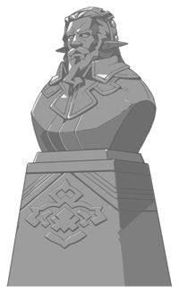
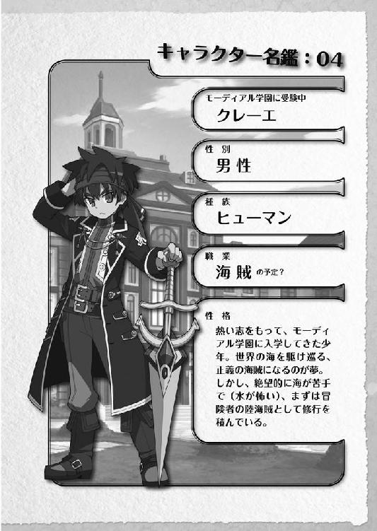
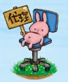

| 桜ノ杜ぶんこ 剣と魔法と学園モノ。Lv.1 入試試験は命がけっ！？ | |
| 佐山操 | |
| (2012) | |
桜ノ杜ぶんこ
剣と魔法と学園モノ。Lv.1
入学試験は命がけ!?
佐山 操
プロローグ
冒険者──
それは剣と魔法が支配するこの世界中に存在する『迷宮』に挑み、古代の英知と財宝を追い求める夢の探求者。
若者たちは富と名声に彩られた冒険者に憧れた。そんな『迷宮』に挑まんとする若者たちのために、冒険者を育成するための学園が各地に作られていった。
冒険者を志す若者たちは、学園の扉を叩く。
一流の冒険者育成を目指す学園は、若者たちが冒険者となった時に味わうであろう危険を最低限度のものとするために、学生たちの種族に応じた適切な指導を行っていった。
自然をこよなく愛し、魔法や弓に精通したエルフ。
ぬいぐるみのような容姿を持ち、力仕事を得意とするドワーフ。
知恵と精神に優れ、機械の身体に魂を入れて活動しているノーム。
小さな体格でありながら、素早さと手先の器用さでは他の種族の追随を許さないクラッズ。
非常に小さい身体をしながら、素早さと知識に優れたフェアリー。
祖先に猫の血を持ち、生命力と俊敏さに優れたフェルパー。
竜の血を引き、生命力と力に優れたバハムーン。
冥界の種族の血を引き、魔法物理学に優れたディアボロス。
天使の血を引き、精神力に優れたセレスティア。
そして、平均的な能力しか持たないが、不屈の闘志でそれらをカバーして短所としないヒューマン。
彼らは学園で得た知識をフルに活かし、パーティと呼ばれるグループを組むことで自分たちの短所を補い合い、『迷宮』や平和な生活を送る人々を守るために、世界を荒らそうとする魔物たちに挑んでいく。
この物語は、そんな冒険者に憧れた若者たちの愛と感動の学園ドラマである（かもしれない......）。
『あたしゃ立派な勇者様を産むために、五八三回もの陣痛に耐え続け、心の中で必死に◯×を繰り返したんだよ。それをあんたって子は......』
そう言われ続けて、いったいどれくらいの時間が過ぎたか......。
ハッキリ言って、まったく分からん。
なんと言っても、物心ついた頃から、耳にタコが出来て産卵して、子どもが孵化して大増殖してもおかしくないくらい言われ続けてきた。たぶん、たこ焼き屋をやったら、材料費がタダだからえらく儲かったと思う。
そもそも心の中で必死に○×を繰り返したって、いったいなんのことだかサッパリ分かんねえことだ。
妄想としか思えないんだが、母ちゃんの言い方には妙に説得力が感じられるもんだから、もしかしたら、女には陣痛期間中にそういう特殊な機能が備わって、子どもを産む時にそんなことをするのかもしれない。
あるいは、心の中に十字キーとかも備わっていて、上上下下左右左右○×とかやると、大した苦労もしないで出産出来るとか、そんな裏技的なものも備わっているのかもしれない。
正直な話、俺の心の中にはそんな○×もＬＲも存在していないから、ハッキリ言ってそれがどういうモノなのか理解出来ない。
だいたい話を聞く限り、陣痛っていうのはメチャクチャ痛いらしいじゃねえか。そんな中で○×ボタンなんか押している余裕があるってだけで、ある意味、女ってスゲーって感心しちまう。
しかし......だ。
それを押し続けたのは母ちゃんの選択であって、俺が頼んだわけじゃねえ。だから恩着せがましく言われても困るんだが......。
「なにボサッとしてんだい？ ちょっとは家の仕事を手伝いな。まったく、これじゃ何のために何百回も陣痛に耐えてあんたを産んだんだか分かりゃしないよ」
「うっせーなぁ......」
ほら、コレだ。
家でマンガを読んでいようが、縁側に寝転んで昼寝を楽しんでいようが、俺のそうした姿を見かけるたびに、お構いなしに母ちゃんは俺を叱りつけてグチをこぼす。
まあ、母親ってのは、元来そうした口うるさいものなのかもしれないけどな......。
おかげで、頭の中にひとつの単語がゴリゴリと刷り込まれちまった。
立派な勇者様......ってヤツだ。
なんでも心の中で○×を繰り返すのは、立派な勇者様を産むための儀式らしい。しかし、母ちゃんはその儀式に疲れてちょっと気を抜いた瞬間に、俺を産み落としちまったと言うことだった。
おかげで俺様には才能がねえとか、さらにグチりやがる。しかし話を聞く限り、俺に才能がないとかいうのは母ちゃんの責任であり、俺を叱ったりグチったりするのは責任逃れなんじゃねえか？ と思ったりするんだが......気のせいか？
まあ、そんな感じで産まれた時からずっとそんなグチやお叱りを聞かされてきたワケで、俺としても将来の進路ってものにその言葉がモノスゲー勢いで刻まれちまっていた。
立派な勇者様になってやるって感じ？
フッ......。
もっとも、そう簡単にソレになれるって思い込むほど、俺は中二病患者じゃないけどな。
とにかく、まずはその勇者様ってモノになれる可能性のある、最短の道を進んでみようじゃないのって考えたわけだ。
だから俺は選んだ。
〝冒険者〟ってヤツになる道をな......。
我ながら親の期待に応えてやる親孝行な息子だと思うんだが......。
「なーにカッコつけてんのよ」
「げ......」
いつの間に来ていたのか知らないが、目の前に幼馴染みでお節介焼きのエルトベーレが、眉間にシワを寄せて俺の顔を覗き込んでいた。
眉間に睨みジワなんか寄せなければ、それなりに見られる外見をしているとは思うんだが......。そんなんだから、コイツには彼氏とか浮いた噂がひとつも立たないまま、今日まで生きながらえてきている。
中等部ももうじき卒業なワケで、いい加減婿のもらい手とかを探さないとならないだろうに......。
まぁ、エルフだから長生きな分、その辺は両親ものんびりと考えているのかもしれん。百年くらいあとに婿をもらえばいいとかってな。
だが断言してやろう！ 百年たってもコイツに彼氏なんか出来ない、と。
「なんか変なこと考えているでしょ？」
「は？ いいや、全然まったく」
ハッキリと否定してやったのに、エルトは疑いの眼差しを向けたままだ。まったく、女ってヤツは鋭いから困ったもんだ。
「フッ......。なぁぁぁんてカッコつけちゃってさ、さっきは一体なにを考えていたわけ？ どっちみち、ヴィントの考えることなんてロクなもんじゃないんだろうけどさ」
人の考えを聞かずに頭から否定しやがって。
これだからエルフってやつは......。
「あのよぉ。一言いっていいか？」
「なによ？」
ギロリンという効果音がドコかで鳴り響いてもおかしくない目つきで、エルトは俺のことを睨んできた。
そんな目で睨まれたら......コワイじゃねえか！
「前々から思っていたことなんだが......」
「え......。な、なによ。そ、そんなに改まってさ」
「いや、大したことじゃねぇ......っていうか、おまえにとっては大したことあるのかな？」
おまえにとっては大したことある。
この言葉がエルトの心の琴線......いや、心のワイヤーに引っかかったらしい。急に神妙な顔つきになり、エルトはモジモジしながら上目遣いで俺を見上げた。
な、なんだこの背中がゾワゾワする感覚は......。
「あ、あたしにだって心の準備ってものが必要な時があるんだから、ちゅ、注意してよね？ で、あたしにとって大したことって......な、なによ？」
「いや、準備が必要ならまた後で言えばい......」
「そこまで前フリしたんなら、さっさと言いなさいよぉっ！ 待っていてあげてるんだからさぁ！」
ど、どんだけ上から目線だよ！ これだからエルフってヤツは......。
「言いなさい。さもないと怒るよ」
もう怒ってんじゃねえか。
しかし、ここで言わなかったらエルフとは思えない超強力な鉄拳が飛んでくるからな......。
「じゃあ言うけどよ。お前のためを思って言うんだから怒るなよな」
「怒るようなことなの!?」
「あんまりしかめ面してっと、眉間にシワが寄って婿さんをもらえなくなんぞ」
「ハァッ!?」
あーあ......。
やっぱりショックだったかぁ。言わないでいてやるのが友として、幼馴染みとしての礼儀だったかなぁ。しかし、いい加減嫁に行ってもおかしくない年頃なんだから、現実は受け入れるべきだと俺は思う。
そう、俺は敢えて苦言を言ってやっているんだ！
「あ、あんたになんだってそんなことを心配されなきゃなんないのよ！」
「いや、世の中にはエルフ好きは数多くいるけど、眉間に睨みジワが寄ってるエルフが好きなんて希少な男はそういないだろうからよ」
「余計なお世話だ！ このバカ助がああああっ!!」
ズベシッ!!
激しい打撃音と共に、俺は星になっ......てたまるかっ!!
「イッテェーなあっ！ このクソエルフが！ お前には幼馴染みを心配するヒューマンの心遣いってもんが理解出来ねーのかよ!?」
「理解出来るもんか！ もう一発殴られたい？ 次は月面に送りつけるかんね!!」
眉間のシワ以前に、この手の早さを矯正しない限り嫁の行き先なんか千年たってもあるわけねーよ！
「まぁ、アレだ。俺が心配してやれるのもあと少しの間だけだ。後はお前自身で感情の抑制ってものをだな。こう、エルフらしく身につけることだな」
「ちょっと、あんたなにドサクサに紛れて妙なこと言ってんのよ!?」
妙なことだと？
いいや、俺には今より修行の旅に出る運命が生まれた時から決まってたんだ。
そしてその定められた運命的な道を示すかのように、俺の目の前にヒラヒラと一通の封筒が落ちてきた。
それは正にナイスタイミングだ！
俺の心の奥底で真っ赤に燃え上がろうとしているこの思いを、デリカシーのカケラもない暴力エルフが力ずくで聞き出そうとしてきたその時に、頭上に飛んできた郵便コンドルが、俺の目の前にその封筒を落として行ったのだから。
「ようやくきたか!?」
そう、俺が来る日も来る日も待っていたのは、この入学案内の通知だった。
「ちょっと、その封筒はなによ!?」
「ふっ、これか？ 聞いて驚け！ これこそ冒険者養成学校の名門ドラッケン学園の入学案内だ！」
「冒険者......よーせー学校!?」
今、世界は未曾有の大不況の嵐が吹き荒れ、若者の就職率が低迷し続けております。しかし、とある遺跡から大量の埋蔵金が冒険者の手によって発見された時から事態は一変しました。
今まで、３Ｋ（キケン、キツイ、キタナイ）と呼ばれて避けられていた冒険者が一気に脚光を浴びることとなり、一攫千金を夢見る若者たちがこぞって冒険者を目指しはじめています。
私どもドラッケン学園は、冒険者志望の学生たちを支援し、より質の高い冒険者となるための教育を施して送り出してきた名門冒険者養成学園として、当校を選んだ貴君の選択を歓迎致します。
入学願書と共に試験日の日程通知などを同封させて頂きます。試験を通過し、貴君が本校の学生として入学されることを、心よりお待ち致しております。
入学事務局
「ということだ！ あっはっはっはっはっはっ！」
「..................」
俺様の行動力に驚いて、エルトは声も出ないらしい。
もうじき卒業だというのに、進路が定まっていないエルトと俺様は違うのだよ！
こればかりは母ちゃんに感謝だな。産まれた時から刷り込まれてきた分、冒険者になるって道を見た瞬間に、これしかない！ とピピッと来たもんな。
「あれ......？ おかしいな......」
「な、なにがおかしいのよ？」
「いつが入学式なんだ？ 入学案内のくせに、入学式の日程が書いてない」
封筒をひっくり返して中を見てみたが、さっきのメッセージが書かれたペラペラの紙と、入学願書と書かれた用紙以外は入っていなかった。それとも後から送ってくるのか？ 二度手間かけて焦らしてやろって策か？
「..................」
「おい、どうした？ なんでそんな膝を地面についてうなだれてるんだ？」
なんだ？ 全身脱力して真っ白く燃え尽きました、みたいな様子は？
「あんた......入学式もなにも......。これは入学願書在中なだけで、あんたがドラッケン学園に入学するには願書を出して、試験を受けて、それで合格しなきゃダメなの！」
「ほほぅ......」
「あんた、分かってんの？」
「なんつーか......共通語でわんもあぷりーず？」
「共通語で言ってるわよ！」
うぅむ。なにやらこのエルフは必死で俺に何かを伝えようとしているらしいが、今ひとつ言語中枢がズレているんだろうな。
俺に伝わる言葉を選べないらしい。
「つまり、あんたはただ単に受験資格を得る書類をもらっただけで、その書類を送って、そこで試験を受けないとドラッケン学園には入学出来ないの！」
入学出来ない......だと!?
「ちょ、ちょっと待て！ 入学のご案内なのに、なんで入学出来ねえんだよ！」
「もう、スカタン！ これは、入学方法のご案内なだけなのよ！ ほら、ここに入学者選抜試験についてって、書いてあるでしょ！」
ペラペラの紙の裏側には、確かにそんな言葉が書かれていた。
くそっ。この女、難しい言葉を使いやがって......。
「つ・ま・り......だ。整理するとだな、この試験を突破しない限り、俺は冒険者にはなれないと？」
「整理しなくてもさっきからそう言ってるでしょ！ 冒険者は資格制職業に認定されているから、専門学校を卒業しないと正式に冒険者になれないの。だから名門のドラッケン学園とかは志願者が殺到して、合格率が凄いことになってんのよ！」
「つまり、アレだ。我に七難八苦を与えたまえってヤツだな？」
「はい......？」
ポカーンとした顔をしやがって。
これだから知識のないヤツはなぁ......。
「七難八苦を乗り越えてこそ真の冒険者になれると。そのための試験ということだな」
「あんた......なんでそんなに難しい言葉は知ってるわけ？」
「バカモノ！ 伝説のサムライであるヤマナカシカノスケの名言だぞ！ 知らないでどうする！」
「そんなこと聞いてないよ！ それよりも、あんたどうする気なのよ!?」
もう、うっさいなぁ......。
つまりあれだろ。選抜試験をするというのであれば、その試験を受ければいいだけの話だろう？
「まぁ、冒険者に対するこの溢れんばかりの情熱燃えたぎる俺様にかかれば、そんな試験はポポイッとクリアだがな」
「はふぅ......」
なんだよ、その世界の終末でも来そうなため息は。
俺の顔を見てからドッと疲れが出たというような顔をして、ガックリと肩を落としやがって。
そうか、そんなに俺と別れるのがつらいのか。産まれた時からのつきあいだから仕方ないな。
しかし、世の中には必ず別れというものはあるのだよ。
「ああ、止めても無駄だぞ。俺は冒険者になることこそが天命だと思っているからな」
「おばさん、あたしも一緒に受験した方がいいのかな？」
この女......。人がせっかく大切な話をしているというのに、その話を聞こうともしねえで母ちゃんに話しかけやがって......。
は？ 一緒に行くだと？
「ちょっと待て！ おまえがなんで一緒に受験しやがるんだ！」
「あんた一人だと心配だからよ」
即答しやがって......。
「エルトちゃんがそうしてくれると助かるよ。あたしゃ心配でねぇ。才能があるんだかないんだか分からないのに、冒険者になるなんて息巻いていてさ」
「任せて。ヴィントがなんとか冒険者になれるように、あたしも頑張るから」
おいおいおいおい。勝手に話進めやがって、人の決断をなんだと思ってるんだよ。
そもそも、俺様が冒険者になれるようにエルトが頑張るっていうのはどういうことだよ。俺はエルトが頑張らなくたって立派な冒険者になれるっつーの！
「おいおい、聞き捨てならないことを言いやがって」
「なによ」
「貴様、俺が冒険者になるのを阻止して、あわよくばお前が冒険者になろうって魂胆だな！」
「..................」
なんだこいつ......。
ジト目で人のことを睨みつけやがって......。
こ、怖くないぞ！
「あたしは今、あんたがなんとか冒険者になれるように頑張るって言ったのよ。ドコをどう取ったら、あんたの冒険者志願の阻止になるのよ！」
「別にお前の手助けなんかなくても俺は......」
「ドラッケン学園がドコにあるか分かってんの？」
「え......えっと......」
ドコにあるって、普通は試験案内の中に地図が入ってんだろうが。
俺は試験案内書の中にある地図を指さした。
「ココだな」
「..................」
おいおい、なんで頭を抱えて座り込むんだよ。
チッポケな地図だから見づらかったってか？ しかし、用紙の面積は限られているから、地図が小さくて要点のみをまとめたものになるのは仕方ないことなんだよ。
「じゃあ、そこにココからどうやって行くの？」
「えっとぉ......。ちょっと待ってろよ」
ったく。エルフのヒューマンを見下すクセはなんとかなんねえのか......。
ん？ んんん？
「ンンんーっ！ ったく、この地図不良品じゃねえか？ ココからどうやって行くか書いてねえよ！」
「..................」
エルトのヤツ、また頭を抱え込んでしゃがみ込みやがった。
偏頭痛持ちか？
「東はどっちか分かる？」
「当たり前だろう。太陽が出てる方向に決まってるじゃねえか」
「......じゃあ、どっちよ」
「えと、アッチ」
俺は自信を持って東を指さした。しかし、エルトは俺が指さした方向に不満があるらしく、身体をプルプルと震わせながら、拳をメリメリ握りしめやがった。
「ド・コ・に、東が頭上って答えるバカがいるのよ」
「い、いや、だから太陽が出てる方角が東だって......」
ズベシッ！
くっ。う、有無を言わさずにぶん殴りやがった。
「ぼ、暴力反対！ 体罰いくない！」
「あたしがいなきゃ、あんたは試験会場につけないことが判明してるのよ！ これでもあんたは、冒険者になるのをあたしが阻止するとでも言うわけっ!? どうなのよ！」
「いや、し、しかし......。せっかくの独り立ちの門出が......」
「門出もナニもないわ！ あんた、あたしがいなきゃドコにも行けないからね！ それでもいいのなら、あたしはあんたを放っておくけど？」
くそっ。
エルトは一度言い出したら聞かない頑固なヤツだから、ここで断っても絶対に連れて行けっていうに決まってるんだよなぁ。
だいたい、なんだって俺と一緒に行きたがるんだよ。
自分の進路くらい自分で決めればいいじゃないか。
そうか、本当は俺と一緒に冒険者になりたいんだが、一人で行く勇気がないから、敢えて俺にくっついて行きたいというわけだな。
「わ、分かった。連れて行ってや......」
「やる？ 今、連れて行ってやろうとか、連れて行ってやるとか言う気になってる？ ねぇ、なってる？ なってるでしょ？」
「あ、う......い、いや......」
「なによ」
「じゃ、じゃあ。一緒に......行こうか」
なんだか凄まじく『連れて行ってやる』とは言い難い悪鬼の如きオーラがエルトの背後で立ち上り、俺はそれに気圧されて妥協する言葉しか言えなかった。
「まあ、その言い方で勘弁してあげるわ。本当なら、連れて行ってくださいと言わせたいところだけどね」
くそっ。この高飛車エルフめ。
いつまでも上目線で俺を見下しやがって。今に見返してやるからな。
しかし、こいつは魔法が使えるから、学園までの道中は楽になるかもしれない。第一、話し相手がいる分、一人旅よりかは楽しいもんだろう。
「じゃあ、一緒に行くとしてだ。ひとつだけ聞いておきたいことがある」
「な、なによ？」
「いや、別に大したことじゃねえんだが。結局、東はどっちだったんだ？」
ズベシッ！
第一章 パーティ結成は波乱の予感
見渡す限り、人......人......人......。
もちろん、人と言ってもヒューマンもいればエルフもいるし、ワンコみたいなヤツもいれば羽が生えてるやつらもいる。
とにかく石を投げたら絶対誰かに当たる。そして誰が投げたかサッパリ分からない。
それくらいこの会場は受験生で混み合っていた。
ここはドラッケン学園の入学試験準備会場であり、俺はエルトを連れて、３日ほどかけてこのドラッケン学園までやってきた。
ハッキリ言おう。
俺が連れてやって来た！
エルトが偉そうに俺を連れて行ってやるなんて言っていたが、別に連れてきてもらう必要なんかまったくなかった。なぜかって、街道はこの試験会場に向かう連中だらけだったからだ。
道を聞くと礼儀正しく教えてくれるヤツもいれば、イラッとする態度で『俺が受験するんだから帰れよ』と脅してくるヤツもいる。
どっちかつーと、後者の方が多かったりした。
そんなもんだから三日間とはいえども、旅の途中でトラブルがなかったわけじゃない。ぶっちゃけると、殴り合いのケンカにすら発展しているヤツらもいた。
まぁ、冒険者になろうっていうくらいだから、血の気の多いヤツらが多いのも分かるんだが......。
ケンカ程度ならカワイイもんで、この段階から人を陥れてライバルを減らそうと考えるような輩もいやがった。
エルトのヤツが独りで試験を受けに来てたら、絶対にそういう輩に引っかかって試験会場にたどり着けなかったに違いない！ マジで！
だいたい、お腹が痛いなんて言って道の端にうずくまってるなんてベタな手に引っかかんなっての！
さっさとエルトの首根っこをひっつかんで逃げ出したからよかったが、俺が気づかなかったら今頃どうなっていたか分かんねえ。
どいつもこいつも、自分の実力もわきまえずに冒険者を目指そうとするから、そんな卑屈な手を使おうって考えるんだけどよ。
そんな実力をわきまえないとかってグチが出てきていたのも、この会場に到着するまでの間だけだった。
この受験生の人数を見るなり呆れてグチる気力も失せたって感じだし、正直、何百人も集めてどうすんだって感じもあった。
それにこれだけの人数の受験生がいることを知っていたら、確かに前もって受験生を陥れて、一人でも減らしたくなるのも分からなくもない気がした。
とにかく人が多すぎて、呼吸困難になりそうだ。
「それにしても......」
「なによ？」
「どう考えても男女比が偏ってないか？」
冒険者ということで男臭い世界を想像していたんだが、どう考えても男率が低い気がしてならない。
右を見るとボイン。
左を見るとツルペタ。
ありとあらゆる男のニーズに応えますって感じの会場であることは確かだ。
男の姿は、会場全体を見回しても全体の三割以下くらいしか見あたらない。
「キャンパスガイドに書いてあったでしょ」
「なんて？」
「なんてって......。近年の入学志望者傾向に、男性の軟弱化が進んでいるのか、女性率が非常に高いって......。まさか読んでないの？」
なにを当たり前のことを聞いているのか。そんなものを読むバカがドコにいる？
「まったく読んでない！ そもそも、取扱説明書とかは困った時に読むもんだろう？」
「最ッ初にきちんと読みなさいよ！ 特に入学案内なんて大切なことが書いてあんだからさ！」
最初にパンフレットとかの内容を全部把握していたら、実際にそれを楽しむことが出来ないじゃないか。
これだから人生を楽しむことを知らないエルフという一族は......。
「また、ロクでもないことを考えているでしょ」
相変わらず、人の表情を見て考えていることをつかむことだけは鋭い......。
「いいや、まったく全然。俺は実戦派だから、取説はほとんど必要ないしな」
「取説と学校案内は違うってば！」
「それにしても男女比がこれだけ偏っていると、ハーレム・パーティとか組めちゃってウハウハじゃないか？」
好みの女の子を拾い集めていっても、まだまだ余って仕方がないという感じだな。
「..................」
あー。なんか痛い視線がエルトから突き刺さってくるぅぅぅ......。
なんか文句あんのかよと言おうとした矢先、ザクザク突き刺さる言葉が飛んできた。
「あんたがそんなにモテるとは思えないけどね。それにしても、キャンパスガイドを読みもしないで、なんでドラッケンを選んだわけ？」
「モテないなんて決めつけんな！ ドラッケンを選んだ理由は簡単だ。中等部の進路指導の時間に名門って言ってたし、数多くの伝説の勇者を輩出しているとか言ってただろ」
「は？ それだけで......決めたの？」
「夢を実現する漢には、それ以上の言葉はいらん！」
「はふぅ......」
なんだよなんだよ、このエルフは......。
呆れたような顔をしたと思ったら、ガックリと肩を落として呆れたようなため息をつきやがった。人の会話にため息をつくのは失礼だと教育されなかったのか？ 親の顔が見てえよ。
「あんたさ、他の学校を検討するとかまったくしなかったわけ？」
「なんでそんなことをする必要があるんだ？ 俺様はここを受験する以外の選択肢はまったくないと感じたぞ」
俺が求めるモノを得るために、最短距離の準備を手伝ってくれるのはこの学校である。進路指導の時、俺はピピッとしたナニかを感じていた。
「ここ落ちたらどうする気なの！」
「落ちたらって......落ちるわけないだろう？ エルトは本当にバカだなぁ」
落ちたらって、要するに受かっていればまったく問題ないだろうに......。なんだってそう、物事を悪い方に悪い方に考えるんだ？
これだから、エルフってヤツは......。
「いいか？ 悪い方に悪い方に考えていると、必ず悪いことが起こるって言うぞ」
「あんたみたく楽天的に考えている方が、よっぽど悪いことが起こるわよ！」
「いやそんなことは......」
「ないって言える!? ここ落ちたらどうする気？ 他の学校の入学願書受付はもう終わってるのよ！ 二次募集ある所なんて、一回の入試で定員に満たなかった三流の学校が多いんだからね！」
「だから受かれば......」
「もしもの時の可能性を考えてる？」
「だから、そんなものを考えているなら......」
「全部が全部願った通りに叶うなら、保険なんていらないのよ！ あんたのそのスチャラカなところ、なんとかしなさいよ！」
いや、なんとかしなさいと言われても、俺はこれでずっと上手くやってきたし苦労もしてないぞ。
だいたい、そんなにたたみかけるように言わないでもよくないか？
「それから、あんたはもっと情報をつかんでまとめなさいよ！」
「いや、俺は十分に情報をつかんで分析した結果......」
「あははははははははっ。愚民が立場もわきまえずに入試に来たようですわね」
いきなり背後から聞こえた高飛車な笑いを含んだセリフ。明らかに、俺たちの会話を聞いての感想としか思えなかった。
「ンだと？」
振り返ると、そこには金糸銀糸がふんだんに使われた、一着で庶民が一年は食えるくらいの服を着たツンツンした顔つきの貴族とおぼしき女と、その付き人らしき礼儀正しく畏まっているヤツが立っていた。
ディアボロスに仕えるセレスティア？ 微妙な組み合わせだな......。
「立場をわきまえない愚民ってのは、てめえのことか？」
俺がそうツッコミ返すと、貴族女は目を丸くした。
「はあっ？ 貴様、今の余の言葉を聞いてその言葉はおかしかろう？」
「そうか？」
「余は、貴様のことを愚民が立場もわきまえずに入試に来たようですわね、と言ったのだ」
「尊大な物言いをするお前の方がそれっぽいと思うが......」
「無礼者！ 余を誰だと心得る！」
「知らん！」
こーんなツンケンした貴族の娘のことなんざ知ってるわけないっての。
「くっ......やはり、愚民よ。アルベルト、申し伝えてやれ！」
「はっ！」
付き人らしいセレスティアはアルベルトという名前らしい。やたらと畏まった様子で立て膝を突くと、キッと俺の顔を見据えてきた。
なんだ、やる気か？
「この方をどなたと心得るか？」
「だから知らん！」
やたらと声が高い男だな。
俺が茶々を入れてもまったく動じる様子もなく、女の紹介を続けた。そして当の女は、アルベルトが語る自分の紹介を得意そうに聞きながら、両手を腰にあててふんぞり返ってやがる。
かわいくねぇー......つーか、なんかムカつく。
「こちらにおわすお方は、この王国にいる数多の貴族の中でも注目されている、ビンターナーゲル家をいずれは御相続される身であらせられる、ロザリンド様であらせられるぞ。お控え召され！」
なんだか時代がかったロザリンド紹介をしてくれやがりましたが、残念ながらそのビンターナーゲル家とやらを俺はまったく知らなかった。
「ほほぅ......。知ってるか？」
「............悪いんだけど、知らない」
ホレ見ろ。エルトすら知らないお家柄だ。
しかし、エルトは小声で俺に耳打ちしてきたが、その内容が聞こえたか想像がついたんだろう。ロザリンドは顔を真っ赤にしてプルプルと震えだしやがった。
ありゃりゃ。やっぱり怒った？
「まぁ、アレだろ。どっかの世間知らずのお貴族さまのご息女が、物語でも読んで勘違いして入試に来ちゃったってパターンだろ？」
「余はそんな浅慮な考えで、ドラッケン学園の受験に来たわけではない！」
「あー？ そうなん？」
じゃあ、きっともっとバカバカしくなるような理由でこの学校に入ろうとしてんだろうな。
「鼻ほじりながらロザリンド様の前に立つな！ 無礼であるぞ！」
「あ？ ああ、悪ィ」
ピッ！
「ぎゃああああああああああああああっ！」
意図してやったわけじゃないぞ。ほじった鼻クソを指先で弾いたら、ものの見事にロザリンドの服についちまった。
それにしても......。やたらと迫力ある叫びだな。
「悪ィ、悪ィ......。まぁ、くっついちまったもんは取っておけば問題ねえって。腐りはしないからよ」
「ぞ、ンぅん......ゴホン！ そういう問題ではないわ！ この野蛮人が！」
「ロ、ロザリンド様に......こんな傍若無人な振る舞いが出来るとは......」
なんだ......？ この付き人は飛びかかってくるのかと思いきや、なんとなく頬を紅く染めながら驚愕した様子で俺を見つめていた。
なんか......キモイな。
「鼻くそくらいに脅えてるようじゃ、ダンジョンで一苦労するぞ？ ダンジョンの中が綺麗に掃き清められているとは限らないんだからよ」
「うるさい！ 余の通り道は皆が掃き清めるわ！」
あー。なんだろうな、このボンクラ発言は。
まったく人の忠告に耳を貸さないお貴族のお嬢様は......。
「この屈辱は忘れんぞ！ 貴様が下賤な輩であろうとも、光栄にも余が名を聞いてやる！ 名乗れ！」
「それが人に名前を聞く態度か？ まぁいい。教えてやろう！ 俺様は、いずれはこの名を世界に羽ばたかせる栄光ある......」
「そんな前置きなどどうでもよいわ！ さっさと名を名乗れ！」
お前だってさっき無駄に長い自己紹介をお付きにさせただろうに！ そうつっかかりたい所だが、世間知らずのお貴族様と同列になっちゃいけねえ。
こっちが大人にならないとな。
「せっかちなヤツだな......。まぁいい。俺様は、いずれは天翔る紅い暴風王と呼ばれる予定のヴィント様だ。よろしくな」
「まぁいいとか言いつつ、ちゃっかりと自分のふたつ名を紹介するな！」
「お前だってやったんだからいいだろう？ これでも大幅に短縮してやってんだ」
「だいたい、貴様のドコを見たら紅い暴風王なんだ？ 紅くもないだろうに！」
「これからそういう装備を手に入れればいいだけのことだろう。ちゃんと、〝いずれは〟って前置きしてんだろうが」
まったくせっかちなヤツだよなぁ。
「くっ......。ヴィントか。余はその名を忘れぬ！ 光栄に思うがいい！ さぁ行くぞ、アルベルト！」
「ヴィント......さま......。え？ あ、は、はい......」
ロザリンドはプリプリと怒りながら、頬を紅く染めたままの付き人を従えて俺のそばから離れていった。
「ちょ、ちょっと。貴族のお嬢さんを怒らせるのってマズくない？」
「そっか？」
「そっかぁって......」
「ああいうのが、いずれはデレが入ってくるんだぞ」
「はぁ？ あんたなに言ってんの？」
「余がわざわざ作ってきてやったお弁当ぢゃ。べ、別に貴様と一緒に食べたくて作ってきたわけじゃないんだからね？ とかって言い出すんだろうな」
ツンデレとかプンデレとかってヤツだ。
くふふふふ......。
「ヴィント......」
俺もそうやってツンツンしている子が、頬を赤らめながら不器用に料理を差し出すとかは嫌いじゃない。まして貴族の娘だろ？ シチュエーションとしては最高じゃないか？
「ヴィント！」
「なんだよ？」
「脳みそ膿んでない？」
「ああっ？ 俺はどこもおかしくない健康優良児だぞ」
「分かった。脳みそ腐ってるのね......」
この娘は、俺が幼馴染みだからって失礼なことばかり言いやがって......。
「腐ってねーよ。貴族だろうが政治家だろうが冒険者は実力主義だろ。関係ねーよ」
関係あるとしたら、俺が有名になって貴族から仕事を受けるような冒険者になった頃......かな？ もっともその頃には、ロザリンドだって今日のことなんざコロッと忘れてんだろ。青春の甘い記憶ってヤツだ。
いや、むしろ青春の甘い記憶であるならば、
『ヴィント様、あの頃の私は素直じゃなくて申し訳ございませんでした。ひと目あったその時から、私の心はもう......あなた様に......』
って感じじゃねえか？
「あんた、今、自分のことをカッコいいとかって思ってない？」
「うるせー、いいところで余計な茶々入れんなよ」
「だけど、まぁ実際のところカッコは良かったぜ」
また、余計なヤツの登場かよ。
うんざりした気持ちで声の主を見ると、頭にバンダナを巻いて海賊風の上着を羽織った男が、ニヤニヤしながら近づいて来た。
「よろしくな、ヴィント。俺はクレーエ」
「なんで俺の名前を知ってんだよ！」
「いや、なんでって、さっき大声で自己紹介してたじゃないか」
ああ、確かに......。
ついつい興奮して、周りの人間に聞こえていることを忘れていたわ。
「貴族の子女にケンカ売るなんていい度胸してるよ。まして、あのビンターナーゲル家に売るなんてな」
「なんだそりゃ？」
もしかしてアレか？
さっきのロザリンドの親が、実はドラッケン学園の理事長なんてことが......。
「街で仕入れた噂程度の話なんだけどな。現在、ビンターナーゲル家では、相続問題が持ち上がっているらしいんだ」
「あいつが相続権を獲得する為にはどうしても冒険者になる必要があるらしいぜ」
「お家騒動の渦中にある貴族なのね。だとしたら、余計なケンカを売ったことになるんじゃない？」
「............」
くそっ。そんなの知らねーよ！
だとしたら、何がなんでも冒険者になるために姑息な手を使ってくるかもしんねぇな。
「もう、売っちまったもんは仕方ねーよ。だいたい最初にケンカを売ってきたのはアッチだぜ？」
「まぁ、ケンカを売ったのが自分だとしても、恨みに思うのが貴族ってもんだ。気をつけた方がいいぜ」
「忠告ありがとよ。しかし、なんだってわざわざ忠告を？」
「俺と似てるみたいで気に入ったから......じゃダメか？」
「な......」
なんだこの絵に描いたような......そう、強敵と書いてトモと呼ぶようなシチュエーションはっ!?
冒険者になるための準備段階から、すでに漢の出会い的な運命的シチュエーションが準備されてるっていうのか？ 冒険者って、スゲーぜ!!
（注意）かなりヴィントの勘違い妄想が入っています。
「どうかしたか？」
「改めてよろしくな！ 俺はヴィント。こっちは幼なじみのエルトベーレ」
「よろしく。エルトって呼んでね」
このクレーエってヤツは結構気が良いんだろう。
人懐っこい笑顔を見せて、俺やエルトと握手しながら話を続けた。
「貴族みたいな金のコネクションがないなら、こうした学友時代からのつながりってのが大切になるって教わってるんでさ。よろしく頼むよ」
『あっ、あっ、あっ。マイク......テス、テス。ホンジツハ、セイテンナレドナミタカシ』
なんだ？
いい加減講堂内部の空気も淀んできて、あっちこっちで小さないさかいが起こり始めた時、講堂の壇上に立った教官と思しき厳めしい格好の隻眼の男が、大きなメガホンを口にしてアナウンスを開始した。
ようやく、試験開始か？
ワクワクする思いとちょっとした恐れが俺の心を震わせていた。
ともかく、早く試験が始まって欲しい。そうすれば、この心の震えが武者震いみたくなって身体に出て、エルトに気づかれずに済む。
ん？ まてよ。具体的にどんな試験をするんだ？
学校という形式を取ってはいるだろうけど、冒険者志願者を選定するのに、筆記試験だけをやるとは思えない。だとすると冒険者らしい試験ってなるんだろうけど......そもそも、冒険者らしいってどんなだ？
剣闘士のように模擬戦でもやるのか？
こういう困った時に学校案内を見ればいい。
リュックサックの中のクシャクシャになった学校案内に手を伸ばした瞬間、大音声で講堂が震えた。
『ウェルカム！ ファッキン ニュー ガイズ！』
「はぁ？」
今、罵声を聴いた気がするのは気のせいか？
『冒険者志願生諸君。今日という日に集ってくれたことを感謝する。吾輩はこの学校で実技教官を務めるドレスデンである！』
あれが......教官？
そう言われると醸し出されている雰囲気はただ者ではない感じであり、その隻眼を示す黒い眼帯は、歴戦の勇者を感じさせるものだった。
そう考えると、なぜかさっきの罵声っぽい挨拶も歴戦の強者らしさを感じてくるから不思議だ。むしろ、普通にご挨拶されていたら、なんだか弱っちく感じちまうだろう。
『さて、吾輩は今年度の入学試験の最高試験官として、諸君を審査させてもらう。また、本日の試験において不正行為などは行われず、厳正なる審査を行うことを神に誓うものである』
今まで騒がしかった講堂は、今や水を打ったように静まり返り、誰もがドレスデン教官の言葉を聞き逃すまいとしてるみたいだ。
『まず、入学試験に使うダンジョンについて説明させてもらう。そのまま静かに傾聴するように』
は？ 試験で......ダンジョン？
いきなり迷宮探索をさせて、それで優劣を決めるってか？
『まず今回のダンジョンは試験用に特別に作った迷宮であり、仮にケガをしても死ぬことはない。また、本来なら使えない技も、諸君の将来性を推し量るために使える可能性があるようにしてある』
そんな感じで、ドレスデン教官は様々な注意事項を次々と口にしていった。
あまりの注意事項の多さに、メモを取るヤツらが出始めたくらいだ。
困った時は、誰かに見せてもらうかな......。
それら目が回りそうなくらいの説明事項を話した後、ドレスデン教官は咳払いをひとつして、最も重要なアナウンスを開始した。
『ゴホン。それでは、一次試験に関して説明する。聞け』
ようやく一次試験の説明か......。
正直、ここまでの説明でかなりの気力を奪われていた感があるけど、気合いを入れ直さないとな。
『ちなみに一次試験の所要時間は六〇分である』
意外と......長そうで短いのか？
その内容にもよるんだろうけど......。
それがどんな危険に満ちた試験なのか焦る気持ちを抑えながら待っていた俺にとって、その後に発表された試験内容は拍子抜けさせられるものであり、直後にその問題の難しさを理解して愕然とさせられるものだった。
『一次試験は、試験時間内にここに集まった受験生のみで六人のパーティを組むことである』
「はあ？」
俺とエルトは顔を見合わせ、クレーエは苦笑をもらした。
「簡単じゃねーか。おい、クレーエ。お前は一人か？」
「いや、地元からもうパーティ・メンバーはそろえてきたから、俺はもう六人そろってる。だからもう、一次試験は通過してるってことだ」
なんだと？
「言いづらいけど、この手の試験じゃ最初にパーティを組むのは常識的な問題だな。ここにいる半数はパーティをもう組んでるぜ」
「なんだって!? じゃあ......」
「なんとかシングルなヤツらを探し出して、パーティを組めなきゃここで今年の試験はおしまい、ってことになるな」
冗談じゃねえ！
まだ試験は始まったばかりじゃねえか。こんなところで終わってたまるかっ！
「エルト、手分けして探そう！ 俺たちだってあと四人見つければいいだけだ！」
「分かった！ 前衛があと二人。後衛が二人だね！」
日頃はなにかとムカつく関係だが、こういう時はお互いの考えを理解出来る幼馴染みってのはいいもんだ。
俺たちはなにがあっても残り十五分になったら、ここクレーエの前に集まることにして別行動をとった。もちろん、すでにパーティを組んでるクレーエには、ここを動かないように念を押したのは言うまでもない。
くそっ。こんな試験は予想外だ。
とにかくグチる前にメンバーを探さなきゃなんねえ。
周りを見回すと、確かにクレーエの言うとおりで受験生はほぼ六人単位で固まっていた。
特に前衛にもってこいなガタイのいい頑強そうな男どもは、元々の数が少ないこともあってか、目につく範囲にいるヤツらはみんな囲われていやがる。
冗談でハーレム・パーティなんて言ってたが、それが現実味を帯びてきた。ウッシッシ......じゃねえ！
冗談じゃねえ。そんなんなったら、俺が最前衛で苦労させられることになっちまう。せめて体力バカのバハムーンとかドワーフを見つけないと、か弱い俺様が壁役をするなんて、考えるだけでも恐ろしい！
俺の生涯でもきっと数えるほどしかないと断言出来る勢いで血眼になって、俺は壁になりそうで六人パーティを組んでいない男を探し回った。
いた！
ひーふーみーよ......四人もいる!! ガタイのいい男が二人、ヒョロ長いのが二人の計四人！
逆ハーレム状態になったエルトが得意げに仰け反り笑いする姿が目に浮かぶから少しシャクだが、数もぴったりだ！
神よ、祈りなんか滅多にしたことないが感謝します！
「そこの四人組の男！ 俺と一緒に冒険者になろう！」
男たちの群れにスライディングで突っ込むなり、俺はスカウトの言葉をかけた。しかし、なぜかコイツらはキョトンとした顔をしていやがる。
人数足りてねえのに、なんでこんなにのんびりしてんだ？
「は？ はぁ......」
「なんだよハッキリしねえな。おまえら、そのままじゃ人数足りないんだろ？ ちょうど俺はあと一人魔法使いを抱えてるから、ぴったり六人パーティになる計算だ！ どうだ、俺と一緒に勇者を目指そうぜ！」
「はぁ......」
なんだよなんだよ、この気乗りしねえセリフはよぉ......。
ガタイばっかりよくても気弱で自立心のない男じゃ壁にもなんねえぞ。
「こらっ！ 余の家臣に手を出すとはいい度胸をしてるな！」
あぁん？ 余だと？
自分のことを〝余〟だなんて言うヤツは、今のところ一人しか心当たりがねえ。
振り返ると、ちっせえくせに無理矢理仁王立ちしたロザリンドが俺を睨んでいた。
「よぉ、ロバリンド、元気だったか？ 俺は今忙しいから、ヒマになったら構ってやることにする。だからおとなしくその辺で威張ってろ」
「余の名前はロザリンドだ！ 人の名前も憶えられんのか？ これだから下賤の輩は......」
分かってるよ。わざとだよ、わ・ざ・と。
「分かった分かった、ロロリンドだったな。でだ、そこの四人、俺のパーティは確実に将来が約束された冒険者になれるパーティだ！ だから......」
「だから、余の家臣に手を出すなと言っておろうが！」
「なに？ 余の......過信？」
「なにやら意味の異なる勘違いをしておろう？ その過信は、今の貴様の言葉に返してやるぞ、ヴィント！」
「冗談じゃねえ。俺は勇者になる運命を背負った男だ！ 運命？ いや、宿命と言ってもいいな！」
「それを過信というのだ！ タワケがっ！」
「あんだと？ くそっ、てめえと遊んでいる時間は俺にはねえんだ。後にしてくれ！」
「だったらさっさと他を当たれと言うておる！ そこにいる四人は余の家臣だ。故に、余のパーティ・メンバーである！」
なにふざけたこと抜かしコイてんだか......。
ここにきてメンバーになりそうな男たちを見かけたもんだから、自分で確保しようって魂胆だろうに。
「いいか、貴族だからって、こんなバカ女の言うことを聞く必要はねえんだぞ」
「い、いや......。私たちはロザリンド様の家臣でして......」
「ンだと？」
「ビンターナーゲル家の陪臣、あるいは家臣の子息でして......」
バイ......シン？ シソク？
四本足のある......ばい菌の一種か？
「バカに分かりやすく説明してやる！ 要するに、こいつらは余が我が家から連れてきた、余のパーティ・メンバーだ」
「さっさとそれを言えよ、ボケが！」
「さっきからそう言うておるわ！ この凡愚が！」
だが、なんか信じられんぞ。
「ホントに？」
影が薄い男どもに聞くと、首にバネが入ってる民芸品人形みたいに、そろってカクカク頷きやがった。
「ホントっす。ロザリンド様に仕える若衆っす」
「だったらオロオロしてねえで、さっさと最初に答えんか！」
「いや、すみません。ホントすみません！」
くっそ。時間をムダに使わせやがって。
ん？ 待てよ......。
「おい、ロリロンド」
「ロザリンドだ！ それではまるでロリコンの輪舞踏のようではないか！」
「この四人がお前の家臣だと言ったな」
「ふむ。ようやく理解したか。その通り、そいつらは余の家臣である」
「じゃあ、アルベルトとか言ったな。おい、お前、俺のパーティに入らないか？」
「は......？ わ、ワタクシが......デスカ？」
こうなったら壁だのなんだのと言っていられねえ。
とにかく、六人メンバーの確保が最優先だ。腐ってもセレスティアなんだから、多少の魔法くらいは使えんだろう。
「贅沢は言わねえ！ アルベルト。俺と組んで天下を狙おう！」
「嗚呼......ヴィント様が......私を天下取りに誘ってくださるなんて......」
なんだ？ コイツ病気か？
また、顔を赤らめてフラフラしやがり出したぞ。
変な熱病でも持ってるのなら、メンバーに誘うとやっかいだな。
「貴様、余の家臣に手を出すなと申したであろうが！」
「今、お前の家臣はこの四人だと言ったじゃねえか！」
「この愚民が！ 貴様は最初に余に面した時、余の傍らにアルベルトがおったのを見ておろうに！」
「そうだったかー？ 憶えてねーなー」
「だいたい、貴様は今、アルベルトの名前を申したであろう！ それは、余と面会した際にアルベルトと会っていたからであろうに！」
ちっ。細かい余計なことだけは憶えてやがんな......。
貴族とか政治家なんて、『記憶にございません』って言うのが得意技のくせに、こういう時だけは記憶力を発揮しやがる。
「でもさー。コイツは俺のパーティに入ってくれそうな意志を持っているように思えんだよなー」
「なにを言うかと思えば、そんな根も葉もない戯れ言を申しおって......」
「根も葉もなくないぞ。俺が言うことは常に（俺にとっては）真実だ！」
「ええい埒もない。アルベルト、そうなのか？ お前は余の元を離れて、この凡愚で愚昧な男の元に行くのか!?」
「そうだ、俺と共に天下を目指そう！」
顔を赤くして目をクルクル回し、フラフラしていたアルベルトは、ロザリンドの言葉を聞くなりシャキッとして、跪きやがった。
「我が身はロザリンド様に捧げております」
このクソ真面目が。ちょっとは主人に謀反気を持って独立してもいいと思うぞ。
「ははん。そうであろう、そうであろう？」
チッ。得意そうなドヤ顔を見せつけやがって......。
いつかデレ期が来て俺の前に跪いても、『ロザリンドはあの時、俺にドヤ顔を見せつけたからなぁ』といぢめてやる！
「分かったよ。他を当たってやらあ」
「二度と余の前に近づくなよ！」
「ケッ、自分から好んで近づくかってんだ。ボケ！」
家臣からしたら恐れ多いのかどうかは知らんが、パーティを組んでいるのなら主人とまとまっていろってんだ。
それにしても、あんなに自分を押し出せない家臣じゃ、どの程度の名家なのかは知らんがビンターナーゲル家とやらの先行きは暗いな。
「心の一部はヴィント様に捧げております......」
「は？」
「なんじゃ？ まだ余に申すことがあるとでもいうのか？」
「あ？ いや、なんか聞こえた気がしたんでな......」
「はっはっはっはっはっはっ！ とうとう脳の病が耳に来たか？ 幻聴に煩わされているようでは、将来勇者になるという夢も幻のごとくだのう」
「うるせえ！」
幻聴なら幻聴でかまわねえ。なんだか寒気を感じる言葉だった気がするからな。
それに時間がねえ！
こんなバカなやりとりにかなりの時間を使っちまった。残り時間は約四〇分。エルトとの約束の時間まで二〇分しかねえ。
シングルっぽいヤツらとか、あるいはパーティ・メンバーが足りてなさそうなヤツらとか、片端から当たっていったが、人数が合わなかったり、あるいは求める職業と違ったりと中々上手くいかねえ。
「うっさいな！ あんたはあたしの戦い方に文句あるわけ!?」
「いや、私はもっとクレバーな戦い方をキミに提案したいだけなんだよ。ただ、力任せにその槍を振るうのではなくね、私の盾になって......」
「うっさいヒョロメガネ！ それであたしのスカートがチラチラして絶対領域が広がるのを、あんたは後ろから眺めているのが理想ってわけ？」
すでにパーティ・メンバーが決まったヤツらなのかもしれない。
魔法使いらしきエルフ男とでっかい槍を軽々と持ったバハムーン女が、戦法の見解の差（？）かなにかで口論をしていた。贅沢を言わせてもらうなら、あんなやかましい女とか理屈っぽい男とかと組むのは遠慮したいな。
おっと、贅沢な話はやめて、さっさと次に行こう。
「ハッハー！ センセ、セーンセ！ あとちょっとでいいから、ボクにその薬をおくれやすよー！」
「いけません！ これは医療用の消毒に使うための薬なのですよ！ 飲むものではありません！」
「センセ、そんな固いこと言わないでもいいじゃないですかー。もっと、パーッとやりましょうよ！ パーッと！」
医療担当の先生......カーチャ先生って言ったか？
その先生の足にしがみつくようにして、なにか薬を求めているフェルパーの女がいた。
あれも......シングルなのか？
なんか......酔っぱらっているように感じるんだが......。
声をかけたり関わったりすると面倒そうだ。シングルでもギリギリまで待っていいタイプだな。やむを得ぬ場合にのみ、声をかければいいだろう。
どうせああいうタイプは最後まで余ってる。
しかし、どうする......？
エルトがどれくらいのメンバーを集めているのか分からない以上、ギリギリまで頑張らないとならない。だけど、残っているのはなんだかヤバそうな連中ばかりな気がしちまうわけだ......。
くそ......。どうする？
クイクイッ......。
あぁん？
なにかズボンの裾に引っかかった気がして見ると、いつからソコにいたのか、ちんまいクラッズの女の子が膝を抱えるようにして座り込み、俺のことを見上げていた。
にぱぁ......っと笑われたので、つい、俺も引きずられて笑いかけちまった。
「リープは盗賊なの☆ おにぃさんは盗賊はいらないの？」
「いや、いる」
ああ、また手拍子でつい応じちまった。
だが、よく考えろ自分！ どう見ても、この子はかなりのちびっ子くさいぞ。
下手に冒険者に引き込んでケガでもさせてみろ。モンスターペアレンツと化した親が怒鳴り込んできたりしないのか？
『あーあー......マイク、テス、テス......。ホンジツハ、セイテンナレドナミタカシ』
「ええっ!? 時間か！」
俺の勘違いだったのか？ まだ、二〇分くらいはあるはずなのに！
『一次試験の残り時間は、あと二〇分。志願者たちのさらなる健闘を期待する。以上！』
ま、紛らわしい放送しやがって......。
しかし残り二〇分というと、エルトとの約束の時間まであと五分。この際、さっきのフェルパーでガマンするしかないか？
それと......。
「ねぇねぇ。おにぃちゃんは、もうパーティ組んじゃったの？」
この子......か？
この際、年齢的な問題は隅っこに置いておこう。
「まだ組んでいない。あと四人足りないんだ」
「そうなの？ じゃあ、奇遇なの☆」
「奇遇？」
なんだこのシンクロ率が非常に高くて期待出来そうな言葉は！
「どどどどどどどどういうことかな？」
「リープのお友だちも、まだ四人しか集まっていないの☆」
「な、なんだって！」
神はココにいたっ！
なんてところに素敵な落とし物が落ちてるんだ！
偉いぞ、ちっこいの!!
「り、リープ......だったかな？」
「そうなの。リープなの☆ おにぃちゃんは誰なの？」
「ああ、ゴメン、悪かった。おにぃちゃんはヴィントというんだ。で、メ、メメ......メンバー構成はどうなっているのかな？ おにぃちゃんの方は、魔法使いが一人で、俺がナイトだ」
「そうなの？ リープは盗賊なの☆」
「い、いや、そうじゃなくて......。他の三人の人はどんな学科志望者なのかな？」
こ、ここで期待をハズして、盗賊が他三人とか言われたらどうする？
その時はドコかにいるであろうザンネンの神様を見つけ出し、七回くらいは殺してやらないと気が済まないな。
「リープは盗賊で......」
待て待て待て、相手は子どもだ。先を急かしても仕方がない。
「リープの他は、戦士で、戦士で、魔法使いなの」
戦士で戦士で......つまり、戦士が二人と魔法使いが一人か？
「完ッッッ璧だっ!! 前衛三人で後衛に盗賊一人の魔法使いが二人。バランスのいいパーティが出来上がる！ 決まりだ！ 是が非でも組もう！」
「ホントに！ よかったの☆」
少なくともこれで六人パーティが完成する。とにかく一次試験は突破出来る!!

「あれ？ リープ。よさげな前衛っぽい男じゃない。お兄さん、あたしらとパーティ組まない？」
「え？ あああああっ！」
「な、なに？」
そこに現われたのは、あのヒョロ長いエルフと言い合いをしていたバハムーンの女と、カーチャ先生の足にすがりつくようにして医療用の薬を飲ませろと絡んでいたフェルパー女だった。あと一人は、見たことがない心ココにあらずという感じのノーム女だった。
ついでに、そいつらと話しながら歩いていたのは、最も見覚えのあるエルフ......エルトだ。
「あたしら、このエルフさんと話が合っちゃってさぁ。一緒にパーティを組もうかって話してたんだけど......。そっちのお兄さん、口をパクパクしているけど、なんか含むところでもある？」
エルトと話が合う......。
つまり、相当お転婆ってことだな......。
「このおにぃちゃん、もうリープたちとパーティを組むって約束してくれたの☆」
「マジかー！」
「やったね！」
このちびっ子......。実は、ものすげー腹黒なんじゃないか？
こう言われて、今からヤッパリ止めますなんて言いづらいじゃねえか。
「ヴィントったらもう決めてたんだ。まぁ、これで一次試験は通過出来そうだし、よかったってとこかな」
い、いや、そう歓ぶ顔をされたら、余計に断ることなんか出来ねえじゃねえか......。
たぶん、エルトはあの酒ら......いや、カーチャ先生に絡むところも見てないんだろうな。ついでに、バハムーン女が前衛のあり方問題で言い合いをしていたのも知らないんだろう。知っていたら、恐らくあんなホッとした顔なんか出来ないはずだ。
本当に......このパーティで俺はやっていけるのか？
いや、実際にパーティを組むのはこの試験期間だけでいいワケで、その後も組まなければならないという制約はないから、コイツらでも問題はない。しかし、このメンツでドラッケン学園の入学試験を乗り越えられるのか？
俺の不安を察知したのか、バハムーン女が俺の顔を覗き込むように屈み込み、怪訝そうな顔を見せた。
「このお兄さん、あたしらに不満があるみたいだけどー。どうなん？ 残り時間は一〇分くらいだから、ハッキリしてもらわないとあたしらも困るんですけどー」
なんてこった......。
もう、残り時間がそんな感じになってるのか......。
それにしても......見事な胸だ。
イヤイヤイヤッ！ 今はそんなモノに見とれている時じゃねえ！
この短時間で、あと四人のメンバーを見つけることは出来るのか......？
これだけ時間をかけてきたのに、コイツら以外は見つけることが出来なかった。
ここで返事をしなければ、一次試験に落ちる可能性が高くなる......。
仕方ない、組んでやらぁ！ と、言いたいところだが......。
ひー、ふー、みー、よぉ......いつ......五人。
女が......五人。
男が......俺、一人。
下手に高飛車な言い方をしたら、これは......アウトだ。五人から袋だたきもいいところだろう。特にエルトと気があったというこのバハムーン女は容赦なく突っ込んでくるはずだ。ここはひとつ、空気を読んだ大人の対応というものが必要だろう。
「いやなワケじゃねえ......。よろしく」
「いいでしょう！ じゃあ、さっさと自己紹介しよか。あたしはシュテル。希望学科は当然のごとく竜騎士。よろしく」
「ボクはミーナ。ヴェルヘルミナって名前だけど、言いづらいからミーナでよかね。希望学科はサムライ！ って言いたいところだけど、まずは戦士になって修行してからかなって思ってる。まぁ、よろしく」
バハムーンの女がシュテルで、フェルパーがミーナね。
「私はノームのテュルキス。希望学科はドクターで趣味は解剖と分解と研究。最近ハマっている研究はダンジョンにしか生えない珍しいキノコ。よろしく......」
「は、はぁ......よろしく」
「リープはねぇ。クラッズで希望学科は盗賊なのっ！」
「あたしはエルトベーレ。エルトって呼んでね。希望学科は、炎術師」
「エルフなのに炎術師？」
「精霊使いじゃないの？」
くっくっくっく......。
シュテルとミーナに注目されてエルトは真っ赤になって縮こまりやがった。
エルトはエルフのくせに、なぜか精霊魔法を使うことが苦手で、火系魔法を使う方が得意だった。そんなもんだからエルフの村でバカにされて心配した親が、色々な人種がまぜこぜになった俺が住んでいる町に引っ越して来たっていきさつがある。
「あたしは......精霊魔法が苦手なの......」
泣きそうな顔をして告白したエルトを見てシュテルとミーナは顔を見合わせ、笑いながらエルトの肩をたたき合った。
「いいじゃんいいじゃん苦手なものがあったって。それが個性ってもんよ」
「そうそう。ボクなんか殴り合いがキライだから、願書出す時に先生にビースト学科を強く薦められたけど、初志貫徹でサムライを目指すって決めてきたかんね」
なんか......コイツら、第一印象と違って、結構......イイヤツ？
「で、トリを務めるアンタは？」
「え？ ああ、俺はヴィント。希望学科はナイト。よろしく」
これで自己紹介は一通り終わったってわけだ。
「で、これからこのパーティのリーダーを決めないといけないワケだけど......」
シュテルがそう切り出してきたが、これで一悶着発生かな。
パーティ・リーダーは責任あるからな。押し付け合いか、あるいは立候補のしあいかで中々決まんねえんだろうな。まぁ、女ばっかりのパーティだし、今回のこのお受験パーティは誰かに任せるって感じで......。
「あたしはヴィントがいいと思う」
「............は？」
なんで......俺が？
この女──シュテルは含みのありそうな顔をしてニヤニヤしながら、俺にしなだれかかってきやがった。
「だってぇ、女の子のパーティの中に男の子一人でしょ。イイところを見せてもらうってことで、これはもうやるっきゃないっしょ？」
なんだこのシュテルの猫なで声のお願いは......。
しかも、なんで、こう......わざわざ、胸元を強調するように前屈みになって、俺にそうやって選択を迫るわけ？
「そうやね。ボクもヴィントでいいよー。特に反対する理由もないし。ナイト志望ならぴったりやない？」
「シュテルがいいならリープもいいの☆」
「え......え......ええええ？」
な、なんで俺をそんな期待の眼差しで見る？
というか、なんでそんな風に簡単にリーダーを決めることが出来んだよ！
もっと、こう俺がヤル！ いいやアタシがやるわ！ とケンケンガクガク揉めるもんだろう？ そうやってお互いを理解して、はじめて真の冒険者パーティってもんが出来上がるんじゃねえのか？
救いを求めて一番冷静そうなテュルキスのノーム特有の無感情な顔を見ると、彼女は微妙な笑みを口元に浮かべた。
な、なんかゾワッとした感触が背中を走ったぞ......。
「私もヴィントでいいと思います。その方がおもしろそうだから」
「ちょっ、ちょっと待て！ そんな理由にもならないような理由でリーダーを決めていいのか？ 面白いって言うが、リーダーって責任重大な仕事だぞ？」
「あんたに責任感はないわけ？」
「ないとは言ってない。言ってないが......が......が......」
シュテルよ。そんなに色気たっぷりのカッコをして詰め寄るな......。
悩殺ならぬ脳殺ってか......。くそっ、思考が回らなくなるから、勘弁してくれ......。
男って、なんでこんなに弱いんだ......。涙が出てくるような状況だと分かっていながらも、なぜかお色気で迫られると思考が停止しちまう。
「言ってないんだが......が......が......」
ダメだ、反論する言葉が出てこない。
こうなったら背に腹は代えられない。助けを求めるためにエルトに目を向けると、非情にもアイツはあっさりと肩を竦めて見せやがった。
「みんながそう言うなら、仕方ないよね。あんたでいいんじゃない？」
「え......？」
「ということで、満場一致で決まりね！」
嗚呼、エルトよ......。エルトベーレよ......。おまえもか!?
もう、勝手に決められた感が満載で、しかも押しつけられた感が満載で......。
なんかもう、頭が真っ白だった。
「さて、リーダー。さっさとこの六角プレートを提出してきて」
は？
俺が呆けている間に、メンバーは受験票に付いていた三角形のプレートを組み合わせて、パーティ結成届けとなる六角形のプレートを作っていた。
これを届けることでパーティ結成報告が完了し、一次試験通過が確定する。
「俺は......まだ、一言も......引き受けるとは......」
「ええええ？ この期に及んで、まだグズグズ言うわけ？ あんた男でしょ？」
「それともなにか悪いことをして、〝宮刑〟でも喰らってしまいましたか？」
「宮......刑......ってなんだ？」
「くすくすくす......。男性の大切な部分を切除してしまう刑罰です。言うなれば......去勢ですね」
な、なんつー怖いことを言うノームだよ！
「ば、ば、ば......バッ、バカ言ってんじゃねえ！ お、俺には......ちゃんとついてる」
「あっはっはっはっはっはっはっはっ！」
な、なぜそこで笑う。笑うところかよ！
ここで頬を紅く染めて照れているエルトが、なぜかとっても素晴らしく女の子に見えるから不思議だ。
「ついてんだったら、もう、いい加減あきらめて引き受けたら？ 男を見せるチャンスってヤツじゃない？」
「それにや。もう時間がないねん」
は......？
会場の大時計を見ると、確かにもう時間が無くなっていた。
「大将。残り五分や。どうする？ ここで揉めて受験資格を失いますか？」
「それとも......あたしらのリーダーとして、二次試験に乗り出すか......。ふたつにひとつの選択肢。残り四分三〇秒くらいかな？ さあ......どうする？」
「わ、分かった！」
残り時間はあとわずか。
ドレスデン教官が立っている場所まで走るしかない。
もう、満場一致で決定した以上はリーダーだろうがなんだろうが、やってやるしかないじゃねえか。いいぜ、完璧なリーダーをやって、このパーティをまとめてやる！
第二章 二次試験は暴走の香り
一次試験通過の証となる『パーティ結成届け』の提出は、本当に時間ギリギリのタイミングだった。
各自の受験票についていた三角形のプレートは、その側面の二辺同士をつなげることが出来るようになっている。で、集まった六人のパーティ・メンバーのプレートの側面同士をつなげると、六角形のプレートが完成する。これが今回の試験ではパーティ結成の証となり、試験成果物としてそのまま教官に提出する仕組みになっていた。
俺の提出は試験終了間際のギリギリ一分前。
「はい。お疲れ様」
プレートを受け取ってくれたカーチャ先生が、ニッコリ笑ってそう答えてくれたけど、息せき切って飛び込んだから、俺はそれに笑って応えるだけの余裕がなく、呼吸を整えるので精一杯だった。
そして、一分後、無情にも試験終了の合図であるチャイムが鳴り響いた。
俺の後には誰も提出しに来なかったから、事実上、俺が最後の提出者となった。
ホント、ギリギリセーフだ......。
『あー......テステス......。それでは、この時間を以て一次試験の終了を宣言する』
ドレスデン教官のアナウンスに、ワッという喜びと失望の混じり合った叫びが受験生たちの群れからわき上がった。
俺もギリギリで間に合ったんだから、歓声を上げていいんだよな......。
だけど、喜びよりも......なんというか、疲労感の方が多くて通過したという喜びを実感することすら出来なかった。
それと、こんな状態でやっていけんのか？ という不安感もあるのかもしれない。
ええい、俺らしくねえ！
ほっぺたをひとつ叩いて気合いを入れた。
ほら、シャッキリしてきた。
とにかく一次試験を通過したんだ。これで二次試験を突破してしまえば、憧れの冒険者への第一歩を踏み出せる。
そう考えて、ようやく俺は一次試験通過の喜びを実感出来た。
もっとも、それを実感出来たのは気合いを入れたせいもあるが、失望に肩を落とし、アナウンスに従って講堂から出て行く失格者たちの群れを見たせいもあった。
あと一分遅かったら、俺たちもあの群れの中に入っていた。
アテになんだかなんないんだか分かんねえ連中とはいえども、しっかりと俺はパーティを組めたんだ。それは誇りにしていいことだろ？
肩を落とし、気持ちがゾンビになって出て行く連中は、全体の約三割程度らしい。
まだ、七割も受験生が残ってんのか......。
そう考えると、なんだかうんざりしてくる。
『はい、一次試験を通過した受験生は注目してください』
お？ ドレスデン教官以外のアナウンスだ......。
『入学試験実行委員会のカーチャです。カーチャせんせって呼んでくださいね。
一次試験を通過した受験生のみなさんは、パーティを組んだままその場で待機していてください。落選者の退場を以て、一次試験の完全終了となり、一五分間の休憩となります』
おっと、いけねえ。さっさとみんなの元に戻らないとなんねえ。
『その後、二次試験の抽選会を行います。次のアナウンスがありましたら、パーティ・リーダーを務めている受験生は、ドレスデン先生の前に集合してくださいね』
抽選......会？
なんの抽選だよ。
なんにしても、俺はみんなの元にさっさと戻ることにした。
「よっ、色男！」
新結成したパーティ・メンバーの元に戻るなり、最初の一言がそれだった。
「な、なんだよ色男ってなぁ！」
「トボケんなよぉ。このスケベ！ よりどりみどりの女の子ばっかり集めてハーレム・パーティを組みやがってぇ～」
顔がなんだかニヤケっぱなしだぞ、クレーエ。
確かに、ハタから見たらハーレム・パーティなんだろうなぁ......。
爆裂ナイスバディなバハムーンのシュテルに始まり、ロリっ子のリープまで。すべての男のニーズが揃っていますっていう感じではある。
「ホント、よりどりみどりの女の子ばっかり集めやがって～！ このこのぉ！」
「ホントホント！ スケベーなリーダーねぇ！」
「お前らに言われたくないわ！」
こうなったのは俺の意志じゃねえ！
そう、敢えて言うなら......神の意志だ！
神がこう組むように仕向けたんだ。俺のせいじゃねえ！
「まあ、そう否定すんなって。自分の気持ちに正直になった結果ってだけだ」
いいや、正直になってたらこんな楽出来なそうなパーティを作ってねえよ。
シュテルにしてもミーナにしても、明らかにトラブルメーカーだろうに。
こんなパーティだと、俺の立ち位置は小間使いだぜ。
「そろそろ俺も自分のパーティに戻るよ。どうせ、抽選の場所でまた顔を合わせるだろ」
「ああ、色々ありがとな」
「いや、別に俺は何もしてねえよ」
クレーエはそう言って笑い、手を差し出してきた。
おおおおおっ！ これが健闘を称える漢の握手ってやつか？
「えー！ もう行っちゃうワケ!? いっそのことウチのパーティのリーダーになりません？」
ほら、コレだ。
この反応は予想がついてたから、まぁいいが、なにもこんなよさげなシーンをぶち壊すようなタイミングで言わなくてもよくねえか？
「お前ら......いい加減にしろよな！」
クレーエはそそくさと退散し、結局、握手はぶち壊しになったままだった。まぁ、いいんだけどよ。
それにしても、女そろえばかしましいとはよく言ったもんで、エルトですら俺をほったらかしにしておしゃべりしてる始末だ。
まぁ、それはいいんだが、俺の居場所がねえ......。
話の内容がパーティの戦闘方針とかならいくらでも混ざっていけるが、自分の住んでた地域でのオシャレの流行とかなんてついていけねえよ。
仕方なく俺は少し離れた場所に座って、パーティの戦術を考えることにした。
たぶん前衛的な問題は無いだろう。どれくらいチームワークを発揮出来るかにかかっていると思うが、戦闘力で考えたらシュテルもミーナも俺より強いだろう。
問題は後衛か。エルトは魔法支援出来るから戦闘でも頼りになるが、テュルキスはドクター志願と言っていたから攻撃の支援は期待出来ない。戦闘時は防御に専念してもらって、ケガの治療にその力を発揮してもらうことが基本戦法となるかな。
そしてさらに問題なのがリープか。後衛盗賊だから、飛び道具がないと常にやることがあるわけじゃねえ。戦闘時は基本待機で、負傷者が出た時に一時交代で前衛に出てもらう。
たぶん、これが一番理想的でクレバーな戦い方だろう。
「ねえ？ なに独りで黄昏てるの？」
戦闘のシミュレーションを終え、ニヤリとほくそ笑んだ俺の顔を覗き込むようにエルトの顔がピョコリと飛び込んできた。
「はぁ？ 黄昏てなんかねえよ」
「そうなの？ みんなで話が盛り上がっちゃったから、ついてこれなくて黄昏てんのかと思っちゃった」
俺はそれっぽっちのことで黄昏るような、ヤワな男だと思われてんのか？
「おしゃべりで盛り上がれたってことは、仲良くはなれたんだな」
「まぁ......ね。少なくとも中等部のクラスメートくらいにはなれてると思う」
「なら良かったかな。とりあえず俺が男で上手く立ち回れないところのフォローはよろしくな」
「え？ う、うん。それくらいは出来るけど......」
なんだよなんだよ、その微妙なニュアンスの歯切れの悪い言葉の濁し方は......。
「なんか......マズいこととか言いにくいこととかあるなら、気にせず教えてくれ」
「うぅん......。マズいことっていうか、あたしに出来る範囲のフォローはもちろんやるよ。でも、頼りになるかっていうと、あんまり期待しないでよね」
「なんだよ！ そのいきなり役立たず宣言は？」
「話して分かったけど、あたしじゃ抑えきれないと思う」
「............」
人をぶん殴って星にしちまうような暴力エルフが役立たずだと？ どんなフルパワーなヤツらなんだよ。
「まぁいい。分かった」
いざとなったら............逃げるか。
『それでは、抽選会を行おうと思いますので、各パーティのリーダーはドレスデン先生の前に集まってください』
カーチャ先生のアナウンスが流れたから、パーティの暴走対策を相談する余裕はもうない。
「とりあえず、チクッと行ってくらぁ。対策は、なんとかなるだろう」
「分かった。あたしもなんとか出来るようにサポートする。だから......」
なんだよ。
なんかしおらしいところを見せやがって......。
可愛く見えそうじゃ......。
「だから、あんたもあたしに面倒見させないでよね！」
「............はい」
前言撤回。コイツは可愛くもしおらしくもねえ！
「おぅい、ヴィント！ 抽選頑張っていいもん引いてこいよー！」
ミーナのでっかい声に振り向くと、みんなが俺に向かって応援するように手を振っていた。
基本的には悪いヤツらじゃないんだよな。たぶん......。
ドレスデン教官（カーチャ先生は教官ではなく先生と呼ぶけど、なんかドレスデン先生は先生ではなく教官というイメージなんで、俺はそう呼ぶことにしてる）は一段高い演説台の上に立っていたから分かりやすかったけど、そうじゃなかったら受験生の群れに埋没して見つけることも難しかっただろう。実際、カーチャ先生はどこにいるのか分からなかったし......。
受験生の数は、この演台の周りに集まっているだけでも八〇人くらいはいそうだ。つまり、この六倍はいるわけだから、まだ五百人ちかい受験生が講堂の中にいることになる。
想像するだけでウンザリしてくるな。
唯一の救いは、マッチョイ男どもが少ないことか。
『あーあー......。さて、一次試験を突破した諸君。まずは、心からおめでとうを言わせてもらおう。パーティを結成する能力があるということで、諸君らには、コミュニケーション能力があるという判断をさせてもらう』
おおっ、なんかほめられてる。
『さて、この二次試験こそが本試験と言っても過言ではない。それを肝に銘じて取り組んでもらいたい。それでは、試験の内容についてはカーチャ先生からアナウンスされる。しっかり聞いて欲しい』
『はい、マイクを代わりましたカーチャせんせです。二次試験に挑むパーティの数は、なんと七八組です』
七八組？
うはっ、そんなにいるんかよ。
『ということなので、三つのパーティをひとつの組とする二六組に分かれてもらい、それぞれの組でダンジョンに挑んでもらいます』
三パーティ二六組って......つまり、三つのパーティでひとつのダンジョンに挑むってことか？
『ダンジョンの中では、この三パーティで競い合ってもらいます。審査はそれぞれの行動に応じて得点をつけ、その総合点数で合否が決定します。つまり、行動内容によっては攻略速度が一位であっても合格にはなりません。十分に注意してください』
行動内容によっては不合格って......ウチのパーティは一番ヤバくねえか!? どう考えても品行方正なパーティになるとは、とても思えないし......。
『さて、今回の試験内容ですが、ダンジョンの最深部にある学長のミニ・レプリカ像を持ち帰ってくることです。ただし、ただ持ち帰ってくるだけでは高得点は獲得出来ません。そのことに十分注意して、考えてダンジョンを攻略してくださいね』

また、難しいことを言って......。
じゃあ、どう持ち帰ってくればいいんだ？ ただ早くダンジョンを攻略しても、まったく意味がないってことなのか？
この辺はみんなで頭を悩ませないとダメそうだな。
『それでは、抽選会を開始しますね』
固唾を飲んだ七八パーティの代表の前にフヨフヨと浮かびながら現われたのは、抽選クジが入っていると思われる空飛ぶ黒い箱だった。
どよめく受験生たちを尻目に、その箱はフヨフヨと飛びながら受験生たちの前を順番に止まり、クジを引かせ回っていく。
当然の事ながら箱は俺の前にも止まり、さあ引けとばかりに、箱の上部にある腕を突っ込む穴をアピールするように傾けて見せた。
「引けば......いいんだよな」
コクコク......。
俺の質問に箱が頷く。
なんか、シュールだな......。
しかし、この手のものが魔法で動いていて害がないと分かっていても、真っ黒い穴の中に手を突っ込むのは気持ちのいいもんじゃねえ。
恐る恐る突っ込むと、ちっちゃな木札がたくさん指先に触れる感触があった。手を動かしてみるとガラガラと音がして、木札が崩れる音が聞こえた。
単に魔法で動いているだけの箱らしい。
さて、どれを選ぼうか......。
『箱に手を入れているキミ。じっくり選びたいのは分かるけど、早く手を出さないと箱に手を食べられてしまうわよ』
「イイッ!?」
そういうことは最初に言ってくれよ！
俺は手近な札をつかんで急いで手を引き抜いた。
『なんて、冗談ですけどね』
講堂が笑いに包まれた。箱も笑っているかのように小刻みに動いていた。
「お、おどかさないでくださいよ！」
『ゴメンなさい。でも、急いで引いてね』
うぅっ。
これじゃ俺はギャグ担当だよ......。
案の定、腹を抱えて笑っているであろうシュテルとミーナのバカ笑いが、どこからともなく聞こえてきていた。
まぁいい。やっちまったもんは仕方ない。
かつての英雄のセリフにもあんだろ。これが『若さ故の過ち』ってヤツだ。
しかし──
「なんじゃこりゃ？」
引いたはずのクジ札にはなにも書かれていなかった。
たぶん表面と思われる側が黒板のような真っ黒い素材で固められていて、裏面は木札の素材のままニスが塗られてスベスベになっているだけの札だ。普通はここに番号とかが書かれているだろう？
「これも魔法で出来てんのかね......」
「ンあ？ ああ......そうかもな」
いつの間にか俺のそばにクレーエが来ていた。
「同じ組になると、競い合えて楽しいんだけどな」
「確かにそうだな」
将来、勇者の座をかけて争う強敵が、専門学校の受験の時にも競い合っていたなんて、まさに出来すぎな感じの燃えるストーリーじゃねえか。
「しかし、こればっかりはクジ運だな......」
手の中のクジをもう一度見てみる。
どちらの面にもまったく変化は見られず、俺の手にしてる札とクレーエの札はまったく同じだった。
『みなさん。札は行き渡りましたね？』
全員がクジ札を高く掲げて見せた。
『もらっていない人は、返事をしてくださーい』
「..................」
誰も返事をしない。
それに満足したように微笑み、頷いたカーチャ先生は、
『ハイッ！』
と勢いよく声を張り上げた。
『それではみなさん。手元の札を確認してください！』
「え......？」
札の黒板みたいな面に、いつの間にか〝Ｆ〟と描かれていた。
その字はよく見ると、まるで燃えている火のように、チロチロと動いていた。
すげえ......。本物のマジックアイテムってやつだ。
「俺は〝Ｊ〟組らしい。ヴィントはなんだった？」
「残念。俺は〝Ｆ〟組だ」
「くそっ。じゃあ、競い合うとしたら、次の試験か入学してからってことになるのか」
「仕方ないな。お楽しみは最後に取っておけってことなんだろ」
「ホントに仕方ないな」
そういってクレーエは俺に手を差し出してきた。
「互いの健闘をたたえて、今度こそ握手だ」
おおっ、今度こそ漢同士の熱い友情の握手ってやつか!?
「おう！」
「負けないぜ」
「それはこっちのセリフだ」
とりあえず、せっかく知り合った相手だし、どうせならクラスメイトになりたいもんだろう。ヒーローにつきもののライバルとしてさ。
『さて、それではこれからのアナウンスは吾輩が代わって行わせてもらう。諸君がどのような冒険者になろうと考えているのか？ その考えている通りの行動を取ればよい。然らば自ずと結果はついてくるだろう』
俺の考える......冒険者。
いったいそれってなんなんだろう？
俺はどんな冒険者になりたいのだろう？ ぶっちゃけると英雄になるための通過点としか頭になかったから、冒険者そのもののイメージなんてなかった。
だけどドレスデン教官の言葉を信じるなら、それがはっきりしてないヤツは失格ということになる。
この試験が終わるまでに......いや、最中に見つけねえとなんねえ。
「なんか浮かない顔してるな」
「え？ あ、ああ......ドレスデン教官の言葉が気になってな」
「まあ、俺にも言えると思うけど、考え過ぎても答えは出ないぜ？」
「なんだその......脳が筋肉だからわかんねえみてえな発言はよ」
「たぶん、俺もおまえも行動がそのまま結果を出すタイプだと思ってな」
なんだそりゃ？
脳筋ならぬ脳敏ってか？ 脊椎反射でモノを考えてるみてえな言い方だな。
「まあ、健闘を祈るよ」
「ああ、お互いにな」
とりあえず漢の握手を交わした以上、二次試験を突破しないとカッコがつかねえな。
しかし、そんな俺の心配をよそにシュテルたちはさながら宴会気分という感じだった。脳筋という言葉はこいつらにこそ相応しい気がすんだけどな......。
「で、結局どうなったん？」
「ああ、俺たちはＦ組だよ」
「Ｆ組のダンジョンって、どんなとこなん？」
ダンジョンが妙に気になるらしいミーナだったが、そう聞かれてもな。
「分かんねえ。なんで？」
「いや、Ａなら難しくてＺなら簡単とかいう基準があるんかなって思ってさ」
ああ、そういう可能性があんのか？
「Ａが難しいならＦはチョイムズくらいかな」
「なんかその表現はしまらなくない？」
なんか質問したことについてはもういいのか、脇から口出ししてきたシュテルと、Ｆダンジョンの難易度表現でミーナは盛り上がりはじめた。
まあ、ミーナたちは彼女らなりにダンジョン攻略を考えてるってことか。俺の思い込みだけで、一方的な人物評価をしちゃいけねえってことかな。
「でもさ、なにをやっても中途半端ってダンジョンは有り得なくない？」
「アハハハハハハ！ それって、チョーアリエネー！」
「..................」
本当に、俺の一方的な人物評価か？
試験の開始はＡ組のダンジョンから順番に始まった。つまり、Ａ組の連中は速攻クリアがしやすく、Ｚ組はしづらいことになる。だとすると、スタートが遅い連中ほど、攻略の所要時間の短さが評価されるってことか？
待てよ。ということは......ミーナの言葉じゃねえが、なにをやっても中途半端な結果になりかねないってことか？ 中盤出撃のチームは早く攻略してもポイントが後半の連中よりも少なく、後半の連中よりも遅れると減点対象ってことか？
こんな余計なことを考えている間にも、各組のスタートはどんどん進んでいく。
だいたい一〇分間隔って感じかな？
どういう構造になっているのかは知らないけど、どうやら入口は同じなのに各組毎に中のダンジョンは異なるらしい。やっぱり、魔法って便利だよなぁ......。
スタートが進むってことは色々な意味で、進行も進むってことだ。
ダンジョンの扉から出て来たヤツらがいた。もうクリアしたのかと思ったが、出て来たそいつらの姿を見た周囲の連中からどよめきがわき起こった。
ダンジョン内部で戦闘になって徘徊するモンスターに負けたんだろう。早くもＡ組の連中がボロボロの仲間に支えられて戻ってきやがった！
「いてえよおおおおっ！ 母ちゃぁぁぁん！」
泣き叫んで、母ちゃんとわめくソイツを誰も笑えなかった......。
だって......ソイツは血まみれで、いつ死んでもおかしくないように思える状態だったから......。
『ケガ人をこちらに運んでください！』
カーチャ先生の指示に担架を担いだ救急隊（たぶん、上級生だろう）がテキパキと動き応急治療が開始された。
Ａ組の第二パーティの連中は、ボロボロだった。
ナイトは殿を務めて最後までパーティを守りきったんだろうが、借物の制服もボロボロで血の染みがあっちこっちに出来ていた。疲労困憊した様子で、ダンジョンから出るなり座り込んでしまった魔法使いが二人。同じようにぐったりしている戦士が一人。
そして、担架に載せられた戦士と盗賊と思われる武器を持ったヤツら......。
Ｄ組が出発した直後だから、スタートして三〇分というところか？ そんな短時間でやられるなんて......。どういうダンジョンの構造をしてるんだよ!?
『受験生諸君。恐ろしくなったのなら、試験を辞退してもかまわない。死にこそしないが、ケガはする。試験とはいえどもダンジョンを攻略することは危険を伴うということを理解してほしい』
まるで、内心のビビリを見透かしたようなドレスデン教官の言葉に、俺の周りにいた誰もが顔を見合わせた。
そう、確かに冒険者とは危険をなりわいとする命がけの職業だ。だから試験では死ぬことはないがケガをするというのは、本当に当たり前のことなのかもしれない。
だけど本当のケガ人を見るまでは、そのことを忘れていた。
たぶん、俺だけじゃなく、ここにいる受験生全員が......。
「今から辞退した場合、パーティ解散となりますが、解散したらそのパーティ・メンバーは全員失格ですか？」
誰かが聞きづらいが一番聞きたいであろう質問の声を上げた。
『当然だ。解散を求めるのはパーティの総意と判断する。きちんと話し合った上で、試験管理委員に報告するように』
試験管理委員？
疑問がわくなり、即解答するようにドレスデン教官の脇にいたエルフが手を挙げた。その腕には管理委員の腕章が巻かれていた。
パーティの総意ってことは話し合いをしろってことなんだろうけど、どうなっちまうんだ？ 俺はどんなキケンが待ち構えていようと、絶対にここで引き下がる気はねえ！ たぶん、この俺の気持ちをエルトも理解してくれているはずだ。
問題は、シュテルたち四人の気持ちだ。もしもシュテルやミーナたちが（あまり考えられないけど）怖じ気づいたら四対二で負けちまう。
「なぁ、怖じ気づいたわけじゃないよね？」
「あぁん？」
俺の心配は取り越し苦労だったらしい。
振り返った俺がシュテルたちにダンジョンに挑もうと言いかけた矢先、挑発的な声と目線でシュテルが問いかけて来やがった。
「誰に向かって言ってんだよ？」
シュテルだけじゃねえ。ミーナもエルトもリープも（テュルキスだけは表情からはなにもつかめなかったけど......）みんな、怖じ気づいてなんかいなかった。
「大丈夫、ケガしても私が全部治すから......」
「ドクター志望だもんな。負傷した時はよろしくな」
「分かっているわ、任せて。治療に失敗しても、その時は標本にしてあげるから安心してケガしていいから」
「はぁッ!?」
冗談でしょ？ と言いかけた俺に、テュルキスはニタリと笑ってワキワキと手を動かして見せるだけだった。その手の動き、なんかイヤだ......。
『試験辞退の受付をこれで終了するが、問題はないな？』
管理委員のエルフの周りには四パーティが揃っており、ドレスデン教官たちに頭を下げてから、すごすごと講堂から出て行こうとしている姿が見えた。
せっかく一次試験を通過したのに......こんなことで辞めちまうのかよ......。
『次、Ｆ組の三パーティは出発準備をしてください』
試験運営委員のアナウンスが流れた。
俺たちの出番だ。
「いくぜ！」
「おうっ！」
ダンジョンの扉は三つあった。
幸い、Ｆ組のパーティは一組も欠けることなく揃っていたが、どうもパッとしない連中のパーティ。そして、脳筋ばかりが揃ったパーティだった。
ウチのパーティ・メンバーが個性的すぎんのか？
どの扉を潜るのか、ジャンケンで決められた。
右が脳筋パーティ。真ん中が俺たち。左がパッとしないパーティ。
ジャンケンを終えて戻ってきた俺に、エルトがそっと耳打ちしてきた。
「要注意はあっちかな？」
「え？ なんで？」
エルトの目線をたどると、パッとしない連中の集団を見ていた。
冗談だろ？ メンバー構成はエルフ、ドワーフ、バハムーン、セレスティア、フェアリー、ノームと、どっちかっていうと後衛主体のパーティに見えた。
対して脳筋の連中は、バハムーンが二人、ドワーフが二人、ヒューマン、ディアボロスというパーティだ。際だっている部分は、後衛職らしき姿をしているのがディアボロスだけってことだ。可能性としては、スピード主体の戦闘パーティってことだろう。前衛の三人の誰かがケガをしても、すぐに入れ替えが出来るから厚い壁が常に戦闘中にあり続けることになる。
「あのエルフ......盗賊じゃないかな？ 手先は凄く器用そうよ」
「な......。でも、前衛はドワーフとバハムーンが主体だろ？」
「盗賊でも問題ないんじゃない？ 短剣使いなら、戦士と変わらないはずよ」
「そりゃそうだが......」
でも、どいつもこいつも弱々しく見えるんだけどな。
特にバハムーンの男はシュテルと見比べてもねぇ......。
「なに？」
「いや......。スマンが見比べた」
「はぁ？」
同じバハムーンのシュテルと見比べても、なんというか......肉付きがシュテルの方が勝ってる気がする。太ももの辺りとか、引き締まってるっていうか......。対して、なんだかあっちのバハムーンは（男なのに）ヒョロヒョロして見えて、腕なんかシュテルよりも細い気がする。
「あー。スピード勝負のバハムーンってところかな？」
俺の言ってることの意味が分かったんだろう。シュテルとミーナもライバル・チームの観察に加わってきた。
「いひひひ。シュテルが苦手なタイプだね」
「うっさい！ あたしは細かい戦いが苦手なんだよ。ああいう細っこそうに見えてすばしこいヤツっていうのは、トリッキーな動きをするからなぁ......」
「意外に強いってか？」
「フンッ。誰にモノ言ってんのよ。最後に立ってるのはあたしの方かな」
ホントかよ......。
しかし、バハムーンの戦闘力は見た目じゃないってことか？
どっちにしてもＦ組のダンジョン攻略は、スピード勝負でポイントを競うことにあまり意味はないはず。だからスピード面での心配はしなくてもいいと思うんだが......。
「バカじゃないの？」
そのことを話すなり、エルトの反応がコレだった。
「攻略速度のポイントが後続組よりも低かったとしても、後続の追随を許さない速度で攻略したら意味があるでしょ。それに、ダンジョン内の目的物を確保することが最重要のポイントでしょ？ あたしたちよりも先に進まれたら困るじゃない。しっかりしてよ」
「そうだ、しっかりしろ」
「いひひひ。しっかりしてくれよリーダー」
「お前らだって、今、エルトの説明に感心してたじゃねえか！」
「それはそれ、これはこれだ」
「そうだそうだ」
「まぁいい！ で？ 対策はあんのかよ？」
「対策っていっても、あたしたちの中に冒険者の心得みたいなモノをきちんと知ってる人はいる？」
全員を見回すが、誰一人頷かず、ただただオモチャみたいに首を横に振るだけだった。
はぁ......。頭の痛い問題だな......。
「当然、ヴィントも知らないしね」
「当たり前だろ。知ってたら冒険者育成学園に入学願書なんか出すもんか！ 独力でなんとかしてるわい！」
「はぁ......。とりあえず入学案内に書いてあったことを言うね。冒険者とは、素早く目的を遂行しつつ、細かな探索を怠らず、あらゆる場所に目を光らせる人なんだって」
「ほほぅ......。で？」
「でっじゃない！ 素早く目的を遂行するってことは私たちも早めの行動が必要なのよ！ 道草食わずに目的を達成しながら、自分たちの理想の冒険者像を出来る限り体現することが、今回の試験目的なんじゃないの？ これがあたしなりの対策よ！」
「じゃあ、それで行こうぜ」
「って、簡単に決めちゃっていいわけ？」
また、自分で提案しておきながらそれに自信がねえってか？
「だって、他にいい案はねえじゃん。ゴチャゴチャ考えていても始まらないし、おまえが出した提案ならそんなに間違ったこと言ってないだろ。それに反対があるなら、即反論してるよな」
全員がコクコクと頷いた。
これで決まりだ。
『Ｆ組、スタート三〇秒前です。開始線前に整列してください』
「大将、さっさと並ぼうよ。ボクが左を守るからさ」
あ？ 左？
他のパーティは三人三人の二列横隊を、もう組んでいた。
つまり、前列は俺が真ん中で左にミーナ、右にシュテルって構成か。
「後列はどうする？」
「テュルキスが体力的に心配だから真ん中に置いて、右をあたし。左にリープで行くわ」
「了解。みんな、よろしくな！」
「おうっ！」
声が揃っていて、返事はいいな......。
しかし......。スタート直前からミーナは剣を抜いて構えているし、右ではシュテルが槍を構えてる。スタート前からこの調子じゃ、緊張で参っちまうんじゃねえのか？
『スタート一五秒前です』
うう......。
手に汗がにじんでくる......。
やべえ、俺が緊張してきた。
「ヴィント、緊張しないでくんない？ あたしにまで伝染してくる」
「うるせえ。お前の緊張が俺に伝染したんだよ！」
軽口を叩いている方が、緊張が和らいでいい。
でも、声が震えて来そうだ。
『スタート五秒前......四......三......二......一......Ｆ組スタート！』
俺は後列の足の速度を気にしながら、出せる限りの早さでパーティ一丸となってダンジョンの扉を目指した！ 二次試験突破を目指して。
入口の扉に真っ先に取りついたのは、脳筋パーティだった。次いで俺たち。最後がパッとしない連中。名前知らないんだから、この呼び名でも仕方ねえだろ。
「うぐっううううううううううううっ！」
扉のノブに飛びついて回そうとしたシュテルが、いきなり顔を真っ赤にして唸りはじめた。
「ぐうううぅぅっ！ ノブが......回らない！」
「そんなのボクも力貸せば回るよって。フンぅぅぅうぅうぅぅぅぅぅぅっ！」
「な......」
力自慢の二大巨頭（ドワーフも入れたら三巨頭）とも言われるバハムーンとフェルパーが、二人がかりで開かない扉だと!?
扉は重そうな石造りの観音開き型のもので、方形のごく普通の扉だ。
「押し戸じゃなく、引き戸じゃないのか？」
「そんなん、もう試してるよ！」
押してもダメなら引いてみろってワケじゃねえのか？
他のパーティを見ると、パッとしないパーティは全員が扉に鈴生りに固まっていて、どうやら扉の様子を観察しているらしい。脳筋パーティは戦斧を振りかざしてドカチン始めやがった。頭を使わずにぶっ壊す方向に走るなんて、本当に脳筋だ！
「くっそ！ どうしたらいい？」
「ちょっと待ってくれるかな......。ヴィントはジャマです。どいてくれる」
「ンだと？」
後列から様子を見ていたテュルキスが、俺を押しのけて扉の上の方を見上げた。
目線を辿ると、そこには大きな時計があった。
時計の下には、小さく細かい文字が刻まれている。
『それは昼日中の出来事でした。
大きな物音で昼寝から目覚めたケット・シーが見ている時間は何時？』
「なんだ......こりゃ？」
「リドル......謎かけです」
謎かけって......。コレがナゾナゾ？
「おい、昼日中って何時だ？」
「はぁ？ あたしに聞かないでくれる？」
「ヴィント。謎かけなんだから、そこにストレートな答えがあるわけないでしょ！ 少しは脳みそ使いなさいよ！」
「そうだそうだ」
「じゃあ、エルトとシュテルは分かるんかよ？」
「静かにしてください。考えています」
「す、スミマセン......ハイ」
クソッ。テュルキスに怒られちまったじゃねえか。
しかし......ケット・シーってなんだ？ わかんね......。
視線に分からん、教えてくれ、という念を込めてエルトを見つめること二秒。
「なによ？」
「ケット・シーって......なに？」
視線だけで質問内容まで理解してくれないとは、まだまだ幼馴染みレベルが低いのう。
「はぁ？ はふぅ......」
エルトはそんなことも知らないの？ という感じに頭を抱えてため息をついた。
「ケット・シーっていうのはネコの妖精のこと。フェルパーの親戚みたいなものね。立って歩くけど、姿形はネコそのものよ」
「ほほぅ......」
つまり、ミーナの親戚か......。
「いひひ。バカな旦那を持つと苦労すんねぇ」
「こんなヤツは旦那じゃないです！」
こんなヤツ扱いかよ......。
「あれ？ ヴィントはフリーなん？」
「え......？ ああ。付き合ってる相手はいないぞ」
おおっとミーナよ、俺様にホレてしまったかな？
嗚呼、俺って罪作りな男ってヤツか？
「へぇ......。ま、良かったじゃん？」
「へ？ なにが？」
「こんなバカっぽい男に束縛されなそうでさ」
「誰に言ってんかと思ったら、エルト相手かよ！」
「静かにしてくださいとお願いしましたよ、ヴィント」
「あ、はい。スミマセン......反省してます」
意外にテュルキスって怒るとコワイんだな......。
半分据わった目に睨まれて俺とミーナが縮こまると、テュルキスはオヤッという顔を見せ、次の瞬間、ニパァッと笑いかけて来やがった。
こええええ！
なんだ、俺、何か悪いことしたか!?
「シュテル。その槍であの時計の針を六時に合わせてください」
「時計の針？ 六時ね」
シュテルは槍をクルリと回し、石突きの部分で手の届かない所にある時計の針を六時に合わせた。
すると扉が青白く光り、そして消えてしまった。
「え？ なんで？」
「昼日中。ケット・シーはネコですから、ミーナの目と同じく明るい中では縦針の瞳のはずです。つまり、針が縦になっている時間は六時のみ」
「すげー。テュルキス......頭イイな」
「それほどでもない」
照れているのか？
テュルキスは無表情のまま目線を逸らし、頬をポリポリとかいていた。
「とにかく進もう！ 他のチームに先行されたよ！」
「はぁ？」
シュテルに急かされて辺りを見ると、確かにパッとしないパーティの扉はもう開いており、そこに姿は見えなかった。対して、脳筋パーティは未だにドカチンを繰り返している。
「くっそ！ 行くぞ！」
真っ暗なダンジョン。
俺たちは松明に明かりを灯してから、その中に踏み込んだ。
入口から中に入った瞬間、一瞬だけ水中に潜り込んだような感覚が全身を包んだけど、それもすぐに消えてしまった。いったい......。
「やっぱり試験用のダンジョンは、魔法で自動生成されているもののようですね。ダンジョンに潜った瞬間、感覚器官が一瞬だけ狂いました」
「あ......ああ......なるほど......」
ということらしい......。
しかし......自動生成っていってもなぁ......。
革の靴越しに触れる石畳の床も、ヒンヤリとしたやや湿った空気も、どれもこれもが本物にしか思えないし、想像していた通りのダンジョンそのものの姿をしている。
「どういうことなの？ リープにも分かるように説明してほしいの☆」
まったく同意見だ。
「別の次元にダンジョンのパーツを用意しておいて、必要に応じた大きさで様々な形に組み合わせて、入口だけをそこにつなげる方式だと思う」
「そんなこと......出来るのか？」
「大昔の文明遺産とか......。あるいは、そういう研究者がいるのかもしれませんね」
「とりあえず確認させてくれ」
「なんでしょう？」
「このダンジョンは幻覚とかそういう類のモノじゃないんだよな？」
「たぶんそうだと思います。少なくとも、私のすべての感覚器官も現実であると告げていますから」
すべての感覚器官って......。
えっと......ノームって本体は霊的な存在で、作り物の身体か何かに入ってんだっけ？
だから、そういう答え方になんのか......。
「まぁ、幻覚だろうが本物だろうが関係ないわ。見敵必殺！」
「はぁ？」
「先制権取ったってやーっ！」
「なっ、なんだ？」
俺が気づかない間に敵が近づいていたっていうのか？
俺の両サイドの二人がいきなりダッシュして、物陰から現れた二足歩行の大きな鳥の群れに挑み掛かった。
「クッカーッ！」
俺は出遅れたが二人は完全に巨大鳥──クッカーに不意打ちをかけていた。
「うらあああああっ！」
シュテルの槍は、唸りを上げてクッカーの身体に突き立った。そしてそのまま槍を振り回して、刺さったクッカーをその群れの中に投げ込んだ。
なんて......怪力だよ。
そのシュテルの戦いにひるんだクッカーの隙を突いて、ミーナが戦場に躍り込み、剣を振り回す。
くそ。俺も負けてられるか！
俺も剣を抜いて、生き残りのクッカーに挑んだ。
「エルトの魔法はいらない！ 温存してくれ！」
「分かった！」
圧倒的な戦いっていうのか？ シュテルとミーナの高火力の前に、バッタバッタとクッカーは倒れ、大したこともなく戦闘は終了した。
「意外に......楽な戦闘だな」
「まぁ、ザコ中のザコだったし。先制出来たからね」
「ザコじゃないのもいるって？」
「そりゃ分かんない。ぶっちゃけると、あり得ないレベルの敵が出てくるって思ってた方がいいと思う。Ａ組には担架で担がれて出ていった連中もいることだしさ......」
あり得ないレベルの敵......か......。
担架で運ばれたパーティのあの姿は、嫌な思い出として心の深い所に刻まれた。
ああなりたくはないが、そのためにはどうしたらいい？ そんな考えが常に頭の中でグルグルしている。
なんとか戦闘を回避して、少しでもパーティに降りかかるキケンを回避したいと考えている。これでも一応、パーティ・リーダーだからな。
であるにもかかわらず──
「見敵必殺！」
「甘いぜ！」
なんてセリフが俺のパーティの中で四六時中響き渡ってる。
敵に気づかれていない場合は不意打ち！
敵に気づかれていても突撃！
戦闘回避とか戦略的撤退とかという言葉は、シュテルとミーナの脳内には存在していないらしい。
「体力温存って言葉は知ってるか？」
そう質問すると、
「はぁ？ なに当たり前のことを言ってんの？」
と答えてきたから、恐らく脳内の片隅にはその言葉は存在してるっぽい。どこかは知らんしクモの巣がはってるかもしれないがな。
それともなにか？ バハムーンやフェルパーの体力温存の考え方は、ヒューマンやエルフとは異なる理屈の元にあるんだろうか？
「リープお腹すいたの☆」
周囲の様子を窺いながら進もうとした矢先、そんな言葉が飛び出した。
すでに何度目のセリフだろうか？
リープではなく、腹っぺらしのペコリーナと改名してやりたいくらい、リープは二〇分に一回くらいの割合でこのセリフを口にする。
食い物は持参してるからまだいいが、そのつど立ち往生することになるのはどうにかならんのか？
「リープお腹すいたの☆ す・い・た・のぉっ☆★☆」
無視して進もうとするとこれが連発されるので、無視するわけにはいかない。
リープの声がダンジョン中のモンスターを呼び寄せるアラーム・トラップになりかねない。
さらに本人の信条なのか、必ず座って食べる。
ドコでもどんな時でも、座れる場所を探して食べる。つまり、必ず小休止になる。
「あったかい鯛焼きが食べたいの」
ンなもんはねえよ！ と、一蹴してやりたいが、なぜかパーティのメンバーはリープに甘い。俺に対する態度と比べて、当社比で六、七倍くらい甘い。甘過ぎだろ！
抵抗しても仕方ないので応じてやる俺も俺なのかもしれないが、リープが持参してきた鯛焼きを松明であぶってやる。
かなりの進行の阻害と戦闘テンポを乱すことになってるはずなんだが、シュテルもミーナも何も言わない所を見ると、彼女らが考える体力温存は、この小休止のことを指しているのか？
なんにしても、この調子なもんだからパーティの行動は遅々として進まない。
いい加減進行速度を気にしないとならないんだが......。
ダンジョンに突入してそれなりの時間がたっている。
俺の計算が間違っていなければ、リープの小休止はすでに四回行われている。
競っているはずの二パーティと、なぜかダンジョン内で遭遇していないので、余計に時間が気になって仕方ない。
そんなにこのダンジョンは巨大なのか？
それとも、単に俺たちの進行が遅すぎてとうの昔に置き去りにされてるのか？
「他のパーティのことが気になってる？」
「まあ、な......」
エルトには俺の苛立ちが伝わってんだろう。
「気にするのはいいけど、出会った時のこと考えてんの？」
話に割り込んできたシュテルに俺たちは顔を見合わせ、そして試験会場に来る時のことを思い出した。
「出会った時のことって......もしかして......」
「あいさつするだけじゃ済まなくない？ ってことだよ」
「まさか、ここでも妨害工作とかあんのか？」
「さてね。あたしはあってもおかしくないって思ってるけど。片方は頭がキレそうだし、片方は力任せっぽいじゃん」
確かに......。
ってか、俺がパッとしないと評価したヤツらは、女の子たちには頭がキレそうな男たちって見えてんのか？
「妨害工作......か......」
ともかく、脳筋のヤツらはストレートに俺たちを倒そうと思って行動してくるかもしれないし、パッとしないが謎ときをテュルキスよりも早く解いた頭があるなら、何か罠を仕掛けて来るかもしれない。
「戦闘バカどもが相手なら、あたしとミーナでなんとかなるけどさ」
その自信はドコから来るんだよと問いたいが、コワイのでやめておくことにする。
「頭がキレそうなヒョロ眼鏡どものパーティは、なんか対策を考えておいてもらわないと、たぶんあたしらじゃ手に負えない」
「つまり、俺に頭脳労働をしろと？」
「あんたにはあんまり期待してない。エルトとテュルキスに考えて欲しい」
「......クッ！ あーそうですかよ！」
くそ、バカにしやがって。
俺が頭脳労働に向いてねえのは事実だから、反論出来ねえのがつらいな。
「ところで、その頭脳担当はドコにいるんだよ？」
休憩に入るなり、そそくさとどこかに姿を消したように思えるんだが......。
トイレかと思って気を遣ったが、姿を消してからかなりの時間がたってる。
「え？ ああ、こういうジメジメしてるトコなら......あー......いた。あそこにいる」
「はあ？」
シュテルが指さした場所は、どうやってそこまで登ったのかは想像出来ないが、ダンジョンの壁がかなり崩れた高い場所で、かなり足場が悪そうな所だった。
「あ、あぶなっ......」
テュルキスが立つ足場がほんの少し崩れ、テュルキスはヨロヨロとバランスを崩したもののなんとか落ちずに堪えた感じに見える。
早く助けに行かないと！
「おおー、上手い上手い！ その調子、その調子！」
って......その調子って......。
なんだ、このノリは？
「その調子って、止めるなり助けに行くなりしないでいいのかよ!!」
「なんで？」
なんで......って。
「仲間だろ!?」
「そうだけど......。趣味までは口出し出来ないでしょ」
「はあ？ 趣味？」
オウム返しに聞いちまったが、確か自己紹介の時にキノコの研究がどーのと言ってた気が......。
「キノコ探してんのか？」
「そうなんじゃない？ たまに、リープが手伝ってるし、あたしらも頼まれれば手伝うわね」
「うん。リープもお手伝いしたの☆」
じゃあ、いずれは俺も手伝わされるのか？
いや、そうじゃなくて！
「なんでそんな趣味を？」
「そんなん知らないって。趣味なんてひとそれぞれでしょ。ミーナがビーストよりもサムライを目指したいって言うのも自分の趣味優先なワケだしね」
「呼んだ？」
「あたしらは趣味に生きてるってことで名前を使わせてもらっただけよ」
「そうなん？ まぁ、ボクらは趣味に生きてるようなもんやしね」
趣味に生きてる......。
そう言われると、もう返す言葉はねえんだが......。
「まぁ、ボクらの趣味イコール戦いへのこだわりみたいなもんやけど、テュルキスは自分の趣味のために冒険者になりたいそうなんやて」
「自分の......趣味のため？」
「冒険者になれば、珍しい場所に行く機会が増えるやろ。そしたら、珍しいもんとか集められるしなぁ」
「街で暮らしてたんじゃ見つけられるモノも少ないじゃない。だから冒険者になりたいんだってさ」
そういう......考え方もあるのか。
俺の中の冒険者像は、人に依頼されて人助けをする程度しかなかったからなぁ......。
自分の研究目的のための手段として、冒険者になるっていう道もあるのか......。
その辺は感心しよう。
しかし......だ。
「だからといって勝手に動き回るなよ。せめて一言ドコに行くのかくらいは断っていけっての！」
シュテルたちを怒っても仕方ないんだが、本人が今、目の前にいない以上は怒る相手はシュテルかミーナしかいねえ。それを分かってんのか、シュテルは肩を竦めて、崩れた壁の辺りを探しているテュルキスを見上げた。
「まぁ、一般人的な常識から考えたらそうかもしんないけど、目的のモノが目についた研究者にとっては、そのワンアクションは省く対象なんじゃないの？」
一言だけ断るのも時間のロスになるんかよ......。
「タイムロスとかという考え方は違うなぁ。目についたら全神経がソコに集中するから、他にすることとかが分からなくなるんやね。ボクらの戦闘状態と一緒や」
一緒ねぇ......。
なんか、同じには思えないんだが......。
「ところでシュテルたちはずっと昔から一緒にいるの？」
「え？ ああ、あたしらは同じ街の出身でね。近所に住んでたんだ」
「それで呼吸が合っているわけだ......」
シュテルとミーナは、戦闘時のタイミングなど、合図も送っていないのに見事なコンビネーションを見せてくる。その理由は、やっぱり幼馴染みパワーってやつか。
「まぁ、あんたらと一緒で腐れ縁で育ってきて、冒険者って目的も一緒になったってわけかな」
いつの間にか崩れた壁の辺りからテュルキスの姿が見えなくなっており、数分後には俺たちの元に戻ってきていた。その時間はほぼリープがオヤツを食べ終えるのと同じくらいで、少なくとも自分の行動する時間の把握くらいはしているらしい。
なんのかんの言って、コイツらも考えて行動している......の、かもしれない......が......が......が......が？
「テュルキスさんよ。いったい何をはじめようってんだ？」
戻ってくるなりテュルキスは荷物を広げ、松明から携帯コンロに火を移し、ビーカーに入れた水を火にかけ始めた。
どう考えても、これから出発しようという雰囲気じゃねえ。
「見て分かりませんか？ 新種のキノコのようですので分析しようとしているだけです」
「はぁ......って、今ここですんなよ！」
「ヴィントには、見たこともないものを見つけた時の探求心の輝きというものがないのですか？ 新しいモノを発見出来るかもしれないという時の胸の高鳴りとはやる気持ちというものが、分からないのですか？」
「いや、あ、はい......すみません。謝ります。分かりました」
こんな一方的にまくし立てられたら勝てやしねえ。
でも、今は競争時間中なんだが......。
「えっと......実験はどれくらいで終わるの......かな？」
「すぐに済みます」
「はぁ......」
すぐって......どれくらいだよ。
黙って見ていると、テュルキスは沸騰したお湯の中に小さく裂いたキノコを放り込み、グツグツと煮込みはじめた。
「煮込んだ時の色は無色透明のまま。香りに変化ナシ、無臭のままで毒素らしいものは観察出来ず」
誰に報告してんだろ？
テュルキスは誰に言うでなく、その調子で観察報告を語り続けた。
どういうことなのか解説を求めようとシュテルとミーナを見たけど、二人とも肩を竦めて見せるだけで解答はナシ。とりあえず、興味津々にそのテュルキスの報告を聞いているのはエルトとリープくらいだった。
「......以上で視点観察報告を終了します。続きまして成分分析に入ります」
はぁ......。
いい加減どうしたもんかと悩んでいた時だった。
「な......ばっ......おいっ！」
火から下ろしたとはいえ、まだ熱湯に近い液体が入っているビーカーを持ったテュルキスは、クイッとその液体をあおって飲んだ。
「ヤケドすんだろ!! それにそんな得体の知れないモノを飲むな！」
慌ててビーカーをたたき落とそうとしかけた俺を、テュルキスは空いている手で制し、大丈夫というように振って見せた。
な......なんでだ？
慌てているのは俺とエルトだけで、他の三人はいつものことという感じで見ているから、恐らくは問題ないのだろうけど......。
大丈夫か知らないで、いきなり見せつけられた方は心配すんだよ！
「フーッ......煮汁は無臭だが若干の苦みはあり。この味は......どこかで感じたことのある成分......」
自分の口で成分分析してんのか？
確かに、大昔の薬師たちは自分の口で実験したって聞くから、やり方としては間違いではないんだろうが......。見ている側はドギマギさせられるし、今ならもっと別のやり方とかあんじゃねえのか？
そんな感じに俺がハラハラさせられている間に、テュルキスは煮ていないキノコを手に取り、ジーッと観察を始めた。
それにしても、紫の地にピンクの水玉模様のキノコって......毒キノコじゃねえのか？
「外皮に粘りなどのべたつきはナシ......ぽいっちょ！」
「ゲッ......」
ぽいっちょって......煮汁を飲んだからもしやと思っていたが、そのまま口に放り込みやがった。
「モグモグ......煮ると無味だが、生のまま食すとほんのりと甘みを......感じる」
「甘みって......。ちょっとお前......なんか、顔色が紅いぞ？」
俺が指摘した通り、テュルキスの顔色はほんのりと桜色に染まっており、その瞳は熱っぽく潤んでいるようにも感じる......。
「なんか......そのキノコはヤバイものじゃないのか？」
「そうですね......。このキノコは食することも出来ますが、微量の毒性を持っていることが判明しました」
「毒性っておい！ 今すぐ吐いておけ！」
「毒性の成分は人体への影響はあまりないビアン化合物です」
ビアン......化合物？
なんだそりゃ？
「じゃあ、毒じゃないってことか？」
「毒ですが、大騒ぎするほどのものではありません」
不思議な解答だが、テュルキスはそのまま話し続けているので本当に問題はないのだろう。だけど、こっちを見向きもしないってどういうことだ？
テュルキスは俺と話しているにもかかわらず、瞬きすることもなく真っ直ぐにエルトを見つめ、報告を続けていた。
今までのテュルキスの報告は、エルトに対してやっていたってことか？
それにしちゃ、ちょっと様子が変だぞ。
「ビアン化合物とは人の精神に作用する魔法成分で、極まれに反応する男性もいますが、基本は女性にのみ作用する成分です」
ニジリ......という感じでテュルキスはエルトににじり寄り、視線を外すことなく彼女の手を両手でそっと包み込むようにつかんだ。
な、なんだろう。その仕草、見ているだけなのに、なぜかドキドキしてきたぞ。
もしかして......キノコを煮た水蒸気を吸って、そのビアン化合物とかっていうのを吸い込んだせいか？
「ね......ちょっと......テュルキス？」
「ああ、この抑えきれない気持ちはなにかしら......」
「ちょ、ちょっと待って！」
「だめっ、この気持ちは抑えきれない！」
え、ええええええっ!?
ドギマギして戸惑っているエルトをテュルキスが押し倒した。
すげえ、その何とか化合物のせいなのか？ テュルキスのか細い手がエルトを押し倒してるぜ！
「ちょ、ちょっとテュルキス。あなたおかしいってば！」
「おかしくない！ この胸を昂ぶらせる想いはビアン化合物のせいなの！」
「ちょっと待って！ それって中毒してるから！ は、放してってば！」
「抑えきれないこの想いを受け止めて！」
「イ、イヤよ！ あ、あたしはノーマルなの！ こ、恋するなら、男の子相手の方がいいの！」
「女の子同士の恋がアブノーマルだなんて決めつけないで！ したことないのなら体験してみるといいの。経験を積むことできっと人生に幅と厚みが出来るから！」
「そんな人生の幅も厚みもいらないから放して！」
「ダメよ。する前から否定してちゃ、何も始まらないから！ 冒険者を目指すなら冒険すべきよ！」
「なんでソコにつながるのよッ！ 放してったら！」
うわー......。
もがき逃れようとするエルトを巧みに押さえ込むテュルキス。
なんかもう......目が離せない。
それはみんな同じなんだろう。全員がかぶりつくようにして、ジーッとエルトとテュルキスの絡みを見つめていた。
「そこ！ ヴィント！ 見てないで助けろーっ！」
「ゴメン、無理」
「なんでだー！」
「テュルキスの魔法で身体が動かない」
「同じく」
「右に同じや」
「リープも同じでお願いするの☆」
「こっ、こらあああああああああああああああっ！ 見物するなああああっ！ 助けないと後で見物料取るからね！ それと慰謝料も取ってやるぅぅぅぅっ！」
それは断る！ と言いたいところだが、女の子に組み敷かれているエルトを見るなんてそうそうあるもんじゃない。
ある程度の見物料くらいはガマンしようではないか！
そう腹をくくって楽しもうとしたんだが、肝心のテュルキスがエルトを押さえ込んだまま動こうとしない。
三〇秒押さえ込んだから、一本取ったと判定してもう終わりか？
「ねぇ......なんか行動停止してない？」
「何とか化合物が切れたんかなぁ？」
「テュルキス......生きてる？」
「生きていますよ」
テュルキスは今までのご乱行がウソのように、いつも通りの無表情な面持ちで俺たちの方を見た。その顔には、さっきまであった高揚感などは微塵も浮かんでいない。
「な、なんでその先に進まないの？ ビアン化合物の中毒症状が出たんでしょ？」
「なぜ、私がそんな中毒症状にかからないとならないのですか？」
「はぁ？ だって今......」
「この身体は依代ですから、毒物や魔法ならともかく、脳内に作用する物質が私に影響を及ぼすはずがありません」
「だったらなんでエルトを押し倒してんだよ」
「興味本位です」
「..................」
「それに、これ以上のことに及んだら、トチヂが黙っていないと聞きました」
「トチヂって誰だよ？」
「さあ？ 風の噂です......」
聞いた事もないようなヤツの存在で、面白そうな状況にストップかよ......。
いや、そうじゃなくて！
テュルキスの拘束を解くなり、エルトが俺に向かってＢダッシュよろしく凄まじい勢いで踏み込んできた。
「待て！ 俺のせいじゃ......」
「うるさいバカッ！」
ズベシッ！
テュルキスがイタズラしていたことなのに、なんで俺が殴られなきゃなんねえんだよ......。
「男の子なのに見てただけだもんねー」
「そうやなぁ。男を見せなあかんかったなー」
納得がいかねえ！
お前らだって一緒にドギマギしながら見つめてたじゃねえか！
一言文句を言ってやらないと気が済まない。殴られ遠のきかけた意識を懸命に引き戻しつつ、俺はノックアウトをなんとか堪えた。
これから反撃に入ろうとした瞬間、俺は視界に異常を捕らえた。
「あ......その......。テュルキスの背後にいるヤツは......いったいなんだ？」
「背後霊などという古典的なギャグはやめてくださいね。って......え？」
褐色の影。見るモノを圧倒する威圧感。
そいつは小山のような身体を震わせて二本足で立ち上がり、聞く者を怯え震わせる咆吼を放った。
「ギニュアアアアアアアアアアアアアアアッ！」
「くぅぅっ！」
気合いを入れて受けないと、この咆吼は怖気を呼び寄せて混乱させ、何をしたらいいのか分からなくさせちまいそうだ。
「くっ、話し込んでいてシクったか！」
こっそりと近づいてきたってやつかよ！
そいつは巨大な猫を思わす姿をした褐色の魔物だった。分厚い毛皮、鋭い爪。そして爛々と輝く双眸。
俺たちが今まで倒してきた、クッカーや真空イタチなんてものとはケタ違いの迫力を持つ魔物だった。
たぶん、格段にレベルに差があるだろう。
なんとか隙を突いて撤退し、逃げに回る方が無難なはずだ。
「みんなっ、防御しながら逃げるぞ！」
そう叫んだが、武器を抜き身で持っているミーナやシュテルの方が動きが早かった。
この戦闘バカが！ 戦いの退き時くらい理解しろっての！
そう叫びたいのを俺は堪え、混乱の咆吼にやられたのか、棒立ちするテュルキスの腕を引っ張り安全圏に引き寄せた。
「ああ、こんな所で私を押し倒してどうするつもりですか？」
「こんな時に、棒読みで変なセリフを抜かしコイてんじゃねえよ！」
間一髪。巨大猫が振り下ろした爪は、一秒前までテュルキスがいた場所を振り抜けて空を切った。
「ヴィント上手いぞ！」
ナイト志望だけに、かばうのは得意なんだよ！
さらにテュルキスを抱きかかえたまま俺は数歩下がり、そこにいたエルトに身柄を引き渡し、引き抜いたばかりの剣で、さらに追いかけてきた奴の爪を受け弾いた。
巨大猫は俺に向かって来ている。その隙を突くように両サイドからほぼ同時にシュテルとミーナが攻撃を仕掛けた。
だが、巨大猫は一瞬身を沈めるや地面を蹴って跳ね上がり、バク宙を決めて間一髪のタイミングで逃げやがった。
「コイツ、強ええええええっ！」
「今までのヤツらとは段違いや！」
段違い。その言葉は脳内で嫌なイメージと重なった。
──それって......Ａ組のパーティを壊滅させたヤツってことか？
だとしたら、前衛が一人欠けているのはつらいし、戦って勝てる相手なのか本気で考えないとなんねえ！
だが、ひるむことのないシュテルは槍で突く速度を上げ、一人で槍衾を作るような素早い連続攻撃を仕掛けた。しかし巨大猫は後足立ちし、時には身体を反らし、時にはその爪ではねのけて、シュテルの攻撃すべてをはねのけちまった。
「くっ......」
ミーナは飛び込むタイミングを伺っている様子だが、シュテルの攻撃をかわす巨大猫が巧みに彼女を盾にしようと動くので今ひとつ動きようがない様子だった。
「なにやってんだよ！」
巨大猫の攻撃を気にするあまり、その上半身に目が行ってるからタイミングがつかめないんだ。俺は巨大猫の動きを見計らってその足下に突っ込んだ。
足を痛めつけて行動力を鈍らせれば、いざという時に逃げることが出来る。
少なくとも、強敵相手に無駄な時間を使ったり、無駄にキケンに身をさらす必要なんかねえ！
ドンピシャのタイミング。
シュテルの攻撃に身体を仰け反らせた巨大猫が後ずさった。そこに出来た隙を突いて転がり込んだ俺は、そのまま剣を振るい上げた。
剣越しに伝わってくる敵を斬る感触。
足こそ斬り落とすことはなかったが、太ももの内側を斬り裂いたクリティカルヒットだ。
「バカッ！ 逃げろ！」
「ゲゲッ！」
クリティカルヒットを出したはいいが、バランスを崩した巨大猫がそのままの体勢で倒れかかるように全体重をかけて攻撃を仕掛けて来やがった。
くそっ。なんで最後までかっこよく決まらないんだよ！
俺はなりふり構わずにそのまま転がり、間一髪、巨大猫の身体と爪をすり抜けた。
カッコ悪い逃げ方になったが『生命大事に！』ってヤツだ。
だが、俺のこの攻撃は無駄にならなかった。
倒れ込んだ巨大猫は、俺がつけた後足の傷のせいで中々起き上がることが出来ない。その喉元にシュテルが槍を突き入れ、さらに巨大猫の背に飛び上がり馬乗りになったミーナが、その背中に深々と剣を突き入れた。
それはどっちも急所だ。
勝負あった！ そう思った瞬間、巨大猫の背中に乗っていたミーナは振り落とされ、シュテルは自分の槍の柄で弾かれるように突き飛ばされた。
くっそ！ 一気に前衛の二枚看板が吹っ飛んじまった。
巨大猫は恨みがましい顔つきで俺を睨みつけると、喉元に刺さった槍を引き抜き投げ捨てた。
カラン......と乾いた音がダンジョンに響く。
背中に突き立ったミーナの剣を引き抜こうと手を伸ばしたが、手が届かないんだろう。苦労している割りに抜けそうになかった。
後衛が丸出しに近いままじゃやってられない。
今の内にリープを前衛に出し、前衛二、後衛二の編成に切り替える。
シュテルもミーナも倒れたまま動かなかった。テュルキスを派遣して傷を治してやりたいが、二人の間に巨大猫がいるために近づくことすらままならない。つまり、この編成で戦い続けなければならないわけだ。
撤退するにしてもあの二人を置き去りにするわけにはいかない。つまり、コイツを絶対に倒さないとならないわけだ。
腹を括るしかない。
「リープ、攪乱して隙をつくってくれ」
「わかったの☆」
「ヴィントも時間を稼いで」
「了解。テュルキスはケガ人が出たら即治療を頼む」
「わかりました」
ここまで来たら、一人減っただけで即全滅に繋がりかねない。
さすがに手が届かないと悟ったんだろう。巨大猫は刺さった剣を抜くことをあきらめ、俺たちを血祭りに上げることを決めた様子だった。
文字通り猫足立ちになって身構えようとするが、後足の傷が痛んだのか、一瞬、顔をしかめてバランスを崩した。
瞬間、俺は飛び込みざまに剣を横殴りに払い、もう一発、深手を狙った攻撃をかました。
しかし、間一髪で避けやがった。
猫だけに俊敏な動きを見せやがる。
巨大猫の間合いに飛び込んだ俺に容赦ない爪の攻撃が襲いかかって来たが、その乱舞は全て盾で防ぎきった。代償としてバックラーがボロボロになっちまったが......。
さらに追い打ちをかけようと巨大猫が爪を立ててくる。しかしリープが目まぐるしく巨大猫の周りを跳びまわり、小刻みな攻撃を続けて巨大猫の気を逸らすから、ヤツの目測は狂いまくる。その攻撃はことごとく、俺を外し続けた。
だけど、そのリープの軽い攻撃じゃ巨大猫に致命傷を与えられない。
もう一度大ダメージを与えるポイントを探して突っ込むしかない。
恐らく巨大猫もそれが分かっているんだろう。
ヤツは攻撃の主力を俺と見て、俺に隙を与えないようけん制をかけながら、巧みにリープの攻撃をあしらっていた。
だが、俺とリープの動きは、全ては別の攻撃のための布石だ。
「ファイア！」
魔法の呪文詠唱を終えたエルトの手から小さな火球が飛び出し、小うるさいとばかりにリープに向かって威嚇の唸りを上げかけた巨大猫の横面に炸裂した。
「これでどうだ！」
仰け反るようにして転がった巨大猫の腹に躍りかかり俺は剣を突き立てた。
しかし飛び込みが甘かったか致命傷には至らない。巨大猫は血まみれになりながらも、瞬時に腕を伸ばして俺を抱きかかえるようにするや、そのまま締め上げてきた。
「くそっ！」
「ヴィント！」
身体中の骨がきしむ音を立て、押しつぶされていくのが分かる。
ダメだ......息が......出来ない......。
「ヴィント！ しっかりするの！ あきらめちゃだめなの！」
なんとか締め付けを解こうと、リープが必死に巨大猫の手に短剣を突き立てる。
毛や血が飛び散ろうと、巨大猫は締め付けを解こうとはしない。そればかりか、器用に後足を使ってリープを攻撃し続ける。
くそっ！ なんとか振りほどかないと。
唯一動く左足を動かして猫の腹を蹴りつけるが、踏ん張れないし締め付けられている身体では力が入らない。
くそっ！ くそっ！
その瞬間、一発の蹴りがたまたま急所に当たったのか、巨大猫がその締め付けをゆるめた。
「くっ！ はぁっ......なっ......せええええええっ！」
リープも俺を助けようと身体全体を使って猫の腕を引っ張り、そのおかげもあって、俺は締め付けから解き放たれた。
「くっ......ナッ!?」
「シュテル！ 今だ！」
ミーナの叫びに炎が空気を焦がす轟音が重なった。
エルトのファイアを超える火力の紅蓮の炎が、巨大猫の全身を舐めるように広がった。
その火炎の奧に、口を開き鬼神のような形相をしたシュテルが仁王立ちしている姿が見えた。
ブレス──
バハムーンという種族だけが持つ、強く吐き出す息に合わせて火炎を吹きかける破壊技であり、彼らがドラゴンの眷属である証ともいえる能力だ。
そして巨大猫が俺を締め付ける力がゆるんだ理由は、ミーナが背中に突き立てた剣をさらに深くえぐり込み苦痛を与えたためだった。
全身火だるまとなった巨大猫は、死なば諸共とばかりに俺に向かって突っ込んで来やがった。
「ファイア！」
もう一度エルトの魔法が飛んで巨大猫の横面で炸裂するが、よろめきつつも突進の速度はさほど変わらない。
「がっでむっ！」
リープを突き飛ばして離れさせつつ、俺は落ちていたシュテルの槍の石突きを右足で押さえながら穂先を持ち上げ、チャージ姿勢で待ち構えた。
「大将っ！ 押さえが足りんわ！」
俺の意図を悟ったか、ミーナが俺の後ろに飛び込み背中を支えるように押さえ込んだ。
ガッ！ という激しい衝撃が腕から、そして石突きを押さえた右足から伝わってくる。
ズズッと右足が後退しかけたが、ミーナが俺の踵を押さえるようにさらに足を添えてくれたので、持ちこたえられた......。
槍を構えた俺たちに向かって突っ込んできた巨大猫は、自ら進んで構えた槍に突っ込む形になり、ようやく息絶えた......。
「シュテル、ミーナ無事か？」
「痛いだけで、大した傷はない！」
「ボクも、なんとか......無事やな」
背後から安堵のため息と共に、ミーナがお疲れさんというように俺の肩を叩いてきた。
それに対して、どことなくシュテルは不満顔に見えた。トドメを刺したのが俺だったことが不服なのか、それとも肝心な戦闘で役立てなかったことが不服なのか......。
「どうかしたか？」
まだ燻る黒コゲの巨大猫から槍を引き抜き、返しながら聞いてみたが、別にというように首を横に振るだけだった。
まぁ、思うところがあるのなら、ちょいと釘を刺しておくのもいいかもな。
「とりあえず全員無事だったからいいけど、少し話を聞いてくんないか？」
「なにさ？」
「戦闘のタイミングをシュテルたちで勝手に決めるのは止めてくれ。俺がリーダーなんだろ？」
「な......」
「確かに先制権を獲得して優位に戦闘を運びたいというのは分かる。だけど、今回みたいな時は、最初から撤退を前提に戦えば、もう少し楽だったかもしんねえだろ」
バカはバカなりに、それでもメンバーの安全を最優先に考えて戦場を構築しようと考えてんだ。だから、その考えに沿ってくんないと困るわけだ。
「あ、あたしは......くっ......」
「戦って勝ち続けられればいいけど、今回みたくシュテルとミーナが突出してやられちまったら、俺一人じゃ後衛の三人を守りきれないんだ」
「リープも戦えるの！」
「そうだな。リープがいてくれなかったら、俺も死んでたよ」
「ふひひ」
「ただ、オヤツの時間は減らしてくれ」
「ぷぅぅぅ......」
「全員が好き勝手にてんでんバラバラに行動してたら、パーティを組んでる意味がないだろ？ テュルキスだってキノコの研究をするなら、一言断ってくれれば誰も心配しないで済むんだ」
「............はい」
「パーティとして活動してんだってことを、念頭に置いて欲しい」
お？ 俺、なんか今カッコイイセリフ言ったか？
主人公チックに決まったか？
「ふざけないでよ！ あんた何様よ！」
「このパーティのリーダー様だろ？ お前らが選んだんだぜ」
「くっ......じゃ、じゃあいいよ！ もう、パーティは解散。そうすればあんただって、余計な心配をしないですむじゃん！」
この女......。
自分の欠点を指摘されて逆ギレか？
「シュテル！ ヴィント、止めてよ！ こんな場所で解散なんてダメだよ！」
「じゃあね、バイバイ！」
シュテルは俺に背を向けて、足早に歩き出した。
しかし、こんなところで解散宣言だと......。
何考えてんだ、この女は！
「ふざけたこと抜かしコイてんじゃねえぞ！ このっ......ッ!?」
「なによっ！ ああっ！」
よほどイラついていたんだろう。
いつもだったら誰よりも早く接近する敵の姿に気づくのに、今は俺の方が先に気づいた。
通路の交差点の陰に隠れてこっちの様子を窺っていたんだろう。
怒り歩いていたシュテルが交差点にさしかかった瞬間、ウォーハンマーがシュテルの頭に向かって振り下ろされた。
完全な不意打ちだったために、シュテルは避けることも飛び退くことも出来なかった。
俺がその不意打ちに気づいたのは、シュテルが交差点にさしかかる直前。通路に人影が動いたから。
とっさに俺は庇いに走ったが、盾を構える余裕すらない。
それどころか、走っていたら間に合わねえ！
ガッ！
「グウゥゥッ！」
俺はウォーハンマーとシュテルの間に割って入るように、地面を蹴って頭から飛び込んだ。シュテルを庇うことに成功はしたものの、重い打撃が俺の背中にブチ当たり、自分の声とは思えないカエルが踏みつぶされたような音が喉から噴き出した。
その後、沈黙が世界を支配していた。
なぜか周囲の動きがスローモーションで見えて、シュテルが何かを言っているようだったが、ただ口をパクパクするだけでその声が聞こえない。
くそっ。耳までおかしくなったか？
だけど、そのスローモーションな視界のおかげで、シュテルに襲いかかったヤツが誰だかハッキリした。最初の扉をドカチンと壊していた脳筋パーティだ。
こいつら、一位になるために他のパーティを襲う気かよ。
しかし、なんでこうも周りの情報をハッキリと把握出来るんだ？
そうか......もしかして、これがアレか？
これが、走馬燈ってヤツか？
（注意‥まったく違います。）
「よくもウチの大将を殴ったな！」
いきなりミーナの叫びが耳に飛び込んできて、同時に沈黙の世界が喧噪の世界に変わり、俺は地面に突っ伏した。
──受験生同士の殴り合いは、手加減出来ないから死人が出るんじゃねえか？
まるで人ごとみたいなことを考えているけど、打ち所が悪かったのか、それとも臨死体験でもしてんのか、どうやっても身体が動かねえ。
チクショウ。目の前で必死になってシュテルとミーナが戦っているっていうのに......。こういう時に身体が動かないってのが、頼りないって言われる証拠だよなぁ。
しかし、どうしたもんか......。
戦いを俯瞰して見ていられるのはいいが、前衛が二人しかいないこのままじゃ、前衛五人の大パーティ相手じゃ負けちまう。
「しっかりしなさい！」
地面にグタッと倒れている俺の手首をつかんだテュルキスが、地面を引きずりながら乱戦エリア外に引っ張りだす。まぁ、乱戦エリアで治療なんかしてたら、テュルキスの方が狙われちまうからな。
でも、そんな風にズリズリ引きずられたら、痛いって......。
でも、痛くない。
やっぱり......これは臨死体験？
って......俺は死んだわけ!?
つか、死んでたら臨死体験って言わないのか？
俺、どうなっちゃうワケ？
「ヴィント、生きてます！ 貴方は生きてますよ！」
あれ？ そうなの？
てっきり俺、死んだんだと思っていたんだけど。
「これから治療を行います。いいですね！」
もちろん、悪いわけがない。
さっさとやってパーッと回復してくれ。
「この者に生命の力を与えん。ヒール」
治療の魔法の力が身体の隅々にまで広がっていく感触がある。と、同時に、背中にドカンと痛みが戻って来やがった！
「グガッ、痛てててて......」
「ヴィント、痛みがあるということは、貴方が生きている証拠ですよ？」
「ちょ、ちょっと待て。じゃあ、なにか？ ついさっきまでの俺は、死んでたとか死にかけていたとか、死に損なっていたとか、そういうレベルなのかよッ!?」
質問にテュルキスはニパァ～っと口元だけで笑って見せた。
その笑いは、目が笑ってないからコワイんだってば！
「くすくすくす......。それは、言わぬが花というものです」
「ちょっ......その邪悪な笑いは気になるじゃねえか！」
「ヴィント！ 生き返ったのならさっさと立ってシュテルたちの援護をしなさいよ！」
生き返ったのならって......エルトまでそんなことを......。
まったく、気になる言い方するじゃねえか！
オマケにケガ人をコキ使いやがって！
「ああ、ヴィント......」
「なんだよ？」
「今は単なるヒールをかけただけで、あなたの体力は本当にちょっとしかないですから、気をつけてくださいね」
「は......？」
ど、どういうこと？
「もしも、お祖父さんとかお祖母さんが川の対岸でオイデオイデしてたら、それには応えてはいけませんよ」
「えっと......それって......」
「花畑で神々しい光に包まれて安らかな気分になってきたら、敢えて腐ったドブ川の臭いとかを思い浮かべなさい。そうすれば、生きていられます」
「..................」
なんか、引っかかる言い方だが......まあ、いっか！
「ヴィント様に一発食らわせたソコのドワーフ！ 倍返しでぶちかましてやるから、そこを動くなよ！」
剣を引き抜いて、俺は乱戦エリアに飛び込んだ。
全員が満身創痍になったものの、致命傷らしい致命傷を受けたのは俺だけで、ミーナもシュテルも無事だった。
あんなヤツらでも一応女の子だし、身体に傷ついたら大変だろうしな。
俺たちを襲ってきた脳筋パーティは、俺がブッ倒されたことに逆上したシュテルやミーナの前にメタクソにぶちのめされ、そして復活した俺が乱入したことがトドメとなり、死んでこそいないが屍同然という状態で、近くの路地に放り出しておいた。
とりあえず、一チームは始末したから残り一チームだけだな。
「あ、あのさっ！」
「ンあ？」
顔を上げると、思い詰めた顔をしたシュテルがいた。
あー......。パーティ解散とか言ってたから、またそのことか......。
「あー......えーっと......」
「ゴメン......なさい！」
「は？」
「あたしが......勝手なことをしたせいで......あんたが大ケガすることになって......。本当にゴメンなさい」
「なんだ、そのことか......」
「はぁ!? な、なんだってなによ！ あ、あたしが真剣に謝ってるのに！」
「いや、謝ってくれんのは構わないんだけど、謝るんなら俺にケガさせたことじゃない方に謝ってくれ」
「ど、どういうことよ......」
本当にコイツは脳が鉄筋娘だな......。
「シュテルがパーティを解散って勝手に決めようとしたことだ。そのことが、どんな結果を招くか分かってんのか？」
「え......え......で、でも......」
「冒険に出ている時、その時の感情にまかせて途中で解散宣言するって、ただの責任放棄だよな。解散するのなら、依頼を最後までクリアしてから解散っていうのが筋だろ？」
「え......ま、まぁ......ね......」
「それにココでお前が抜けたらどうなんだよ？ このパーティの全員が、受験資格がなくなって失格になんだからな」
「あ......」
その顔、やっぱりそこまで考えていなかったな......。
「だ、だけど、受験資格もそうだけど......あんた、死にかけて......」
「いや、俺がケガすんのは別にいいんだ。リーダーだからな」
「はぁ？ それって、理屈に合わないってば！」
「俺がどれだけケガしようがどうなろうが構わねえんだ。志望学科がナイトだから、人を守るのが役目だしよ。リーダーだから、メンバー全員の安全の方が優先なんだよ」
「あんただってメンバーでしょ！」
「まぁな。でもケガ人が俺だけならテュルキスも楽だろ。とにかく、ケガをしないに越した事はないしな」
「..................」
どういうワケか、みんな俺の話に聞き入っていた。
つか、こんなのリーダーなら当たり前に考えていることだと思うんだが......違うのか？
「意外に考えてたのねぇ。見直したわ」
ちょっと堅苦しくなった空気を和らげてくれたのは、例によってエルトだった。
まぁ、こういう時は役だってくれるよな。幼馴染みってヤツはよ。
「まぁ、もうパーティを組んじまったんだ。解散するのは受験がすべて終わってからにして欲しいんだが......ダメか？」
「う......」
「なんだよ」
「そう言われてダメって言えるわけないでしょ！ それに、あたしが悪かったんだから、これからはきちんと言うことを聞く......ように心がける」
「そやね。ボクもなるべく万歳突撃しないようにするわ」
『雨降って痔良くなる』とはこのことだな。
あれ？ 痔が固まって悪くなることだったっけか？
まぁ、いいや。
もめ事が起こった後の不意打ち攻撃のおかげで、パーティがまとまってくれた気がする。そういう意味では、この脳筋パーティたちの襲撃はありがたいものかな......。
「とりあえず、問題がないならこれからもよろしく頼む。じゃあ、一気に追い込みをかけて行くぜ！」
「おうっ！」
と、いい形でパーティがまとまったんだが......。
肝心のダンジョンの最後の部屋に入った瞬間、事態はマズイ方向に転がり始めた。
ねぇんだ。
このドラッケン学園のゲシュタルト学園長のミニチュア像が、その部屋にはなかった。
いや......正しくは、あった痕跡だけ残されていた。
「つまり......先を越されたってことか？」
部屋のトラップも発動されており、恐らくはここのガーディアンだったと思われる怪物の死骸も残されていた。ずいぶんと苦戦したらしく、乱戦の痕跡が部屋中に残っている。
「どう思う？」
怪物の死骸を見るなり、テュルキスはキッと顔を上げた。
「血が固まっていないし、体温もまだ残っています」
「てことは、追いつけるかもしれないわけだな。リープ、足跡を見つけられるか？ ここにきたパーティがどっちに逃げたか知りたい」
「あい☆」
この最後の部屋には三つの道がつながっていた。
ひとつは俺たちが来た道で鉢合わせもなにもしてないから、ここから逃げたとは思えない。ヤツらが巧妙に潜伏出来るのなら話は別だが......。
だとすると、残されたふたつの道のどちらから戻ったのか？
順当に考えるなら来た道を戻るんだろうが......。
部屋を見ると左の入口寄りの側が極端に血で汚れていたり、壁に傷痕が残っていたりする。恐らく、そっち側から入って来たんだろう......と予測出来るわけだが......。
さて、どうなるか？
四つん這いになり、床面に顔を押しつけるようにしてリープは部屋の入口周辺を探し回った。いや、嗅ぎ回るという言い方が相応しいかもしれない。小さい鼻をスンスン動かしていたし......。
なんか......こう、愛玩犬が夢中になって宝物を探しているようなイメージが浮かんでくる。
「わん、なの☆」
ほら、愛玩犬だ。いや、狩猟犬か？
「入って来る足跡は、ウチのパーティを含めて一二人しかいないの。でも、お外に向かって出て行っているのは六人だけなの☆」
「それだ！ でかしたリープ」
「ふひひ、もっとほめてぇ～！」
「いいぞ、鯛焼きを二〇個くらい買ってやる！」
「うひぃいぃぃぃっ。ヨダレが垂れそうなの☆」
もう、残された道は追い詰めていくしかない。
どれだけ離されているのか分からないが、追って追って追い詰めてミニチュア像を奪い取るしかない。
「走るぞ！」
交差点や分岐点のたびにリープにお願いして、どっちに向かっているのか確認する時間がどうにも焦れったく、気持ちが急かされる時間だった。だけど、それをしないで適当に進んで、追いつけなかったら逆に時間のロスにつながる。
「こっちなの☆」
何度このセリフを聞いたか、数えるのも面倒になってきた時だった。
「いたのっ！」
距離にしたら、まだ数百メートルくらいはあるかもしれない。だが、その距離にターゲットがいる。
「出るよ！」
ミーナが、そしてシュテルが走るスピードを増して先行した。
もちろん、俺と目配せし合って了解を取るのも忘れていない。
完全に、俺たちはパーティになれた！
「エルト、魔法が届く距離に迫ったら構わず撃て」
「了解！」
足の速さはダントツにミーナが早い。
普段は一番遅い足に合わせているからだろうが、こうやって先行した時、その潜在能力の高さを見せつけられる。
「くっ......気づきやがったか......」
逃げる側もスピードを上げた。
まぁ、そりゃそうだな。振り返った瞬間、鬼気迫る必死の形相のバハムーンとフェルパーが迫ってくるんだ、チビリそうなくらい怖い思いをしてるに違いない。
「ミーナ、魔法と飛び道具に気をつけろ！」
そう言うなり、パチンコの弾が俺のすぐ脇をかすめ飛んで行きやがった。
ミーナかシュテルを狙った弾の流れ弾だろう。
「ちくしょう。パチンコなんていい物を持ってやがんな！」
「構うな。走れ！」
あっちの声も聞こえてくる。
くそ、声が聞こえるところまで来ているのに、中々距離が縮まらない。そうこうしている間に、その先に四角い明かりが見えてきた。
あれは、このダンジョンの入口......いや、出口だ！
くっそ！ あの出口をくぐられたらすべてが終わっちまう！
もっと、もっと全力を出せよ俺様！ なんのためにここに来たんだか分かんなくなっちまうぞ！
その思いは誰もが同じだった。全員が全力で──いやそれ以上の体力を振り絞って、ヤツらに追いつこうとした。
「待ちなさいってば！ 待てばきっと良いことがあるから！」
「追いはぎに待てと言われて待つバカがドコにいる！」
「追いはぎですって!? 言うに事欠いてあたしを追いはぎですってええぇええぇぇっ！ ふっ...ざっ...けっ......んぅぅなああああああああああああっ！」
ブンッ！ という空気を切る轟音と共に、シュテルの手からあの大槍が放たれた。
それは幻覚か、あるいは俺たちの目にのみ映る誇張表現なのかもしれない。
槍は凄まじいソニックブームを伴ってヤツらに迫り、その一人の服の肩の辺りを引き裂き、半開きになっていたダンジョンの扉に突き立ち、激しい音を立てて扉を開放した。
「げげげげげっ！ と、扉が開いちゃった！」
開いちゃった......なぁ......。
ここぞとばかりに猛ダッシュをかますパッとしないパーティたち。
くっそ。これ以上は、もう限界だぞ。
「ちっくしょー！ これじゃ負け決定やないかああああああっ！」
ダンジョンの通路にミーナの叫びがこだました。
これは、もう......ダメかもしんない。
第三章 敗北は別れの兆し
最後の最後まで追い詰めたけど、ゲシュタルト学園長のミニチュアは、あと一歩の所で奪取出来なかった。
ギリギリの追走劇。ミーナがサイド・バイ・サイドの所までもう少しで迫り、最後のあがきとも思える斬撃を繰り出した。だけど、先行パーティでミニチュアを抱えていたバハムーンが紙一重でその切っ先をかわし、扉から転がり出てしまったのだった。
その瞬間、この試験は終わってしまった。
くそっ。パッとしない連中って言っていたのに、そんなヤツらに負けた俺たちはもっとパッとしねえよ。
今となっては遅すぎるが、もっとエルトの言うことを聞いて警戒してればよかった。
とりあえず今はっきりしていることは、俺たちはＦ組の二位になったってことだけだ。
ダンジョンを出た途端にみんな力尽きて講堂の床にへたり込んでしまい、試験の実行委員たちの手を借りなければ、休憩場所として割り当てられた所に行くことも出来なかった。
本気で、みんな全力を出していたんだ......。
「シケた顔してるな......。運が逃げるぜ」
顔を上げると、そこにはクレーエがいた。よく見なくてもかなり傷だらけになっていて、激戦をくぐり抜けてきたことがうかがえた。
「謝っておかないとなんないかもな」
「なにがだよ」
「ヴィントのところと競い合うなんて約束していたが、ムリかもしんねえ」
「ああっ？ お前のトコもかよ......」
「まぁな......って、その言い方だとお前の所もかよ......。ったく。俺たちの方は、二つのパーティが共闘していてな。出くわすなり集中放火にさらされて、リタイア寸前だった」
なんてこった......。
その話が本当なら、成績はウチ以下の可能性がある。
「まぁ、本当のところ、モーディアル学院に入りたかったんで、まだ試験のチャンスは残されてんだけどな」
「なら、いいな。俺はここしか受けてねえから、ここで落ちたらチャンスはまた来年になる」
「一校のみの受験かよ。度胸あんな」
今ここで合格の可能性がほぼないことが分かってるが、次のチャンスがまだ残されてる状態と、合格の可能性が低くて後もない状態じゃ、気持ち的にどっちが楽なんだか......。
そんなボヤキが胸からこぼれ落ちそうになってる時、ダンジョンの扉から救助隊の担架に乗せられた脳筋パーティが、無惨な姿で運び出されてきた。
「あれは、お前の組の対戦相手だろ？」
「ああ......。襲ってきたから、返り討ちにしてやった」
クレーエはヒュウと口笛を吹き、無惨な脳筋どもを観察しはじめた。
「すげぇな......」
「ああ、徹底的にしてやった」
俺に助けられた反動もあるだろうし、シュテルを庇った俺が（どうやら）死にかけていたこともあってか、ヤツらに対するシュテルとミーナの攻撃は尋常じゃなかった。
徹底的な......という言葉が相応しい戦い方だったな......。
「一パーティ撃破で二位通過だろ。それなら合格の可能性は高いんじゃないか？」
「どうだろうか......？」
「求めよ、さらば与えられん......てな」
「なんだそりゃ？ 誰の格言だよ？」
「どこかの世界で有名な神様の格言だったかな」
神様の格言？
「お前、神官だったの？」
「いいや。都合のいい時だけ信じることにしてる」
「なんだ、俺と同じかよ......」
最終組がダンジョンから出てくるまでの間、俺たちはそんな下らないことを話していた。
なにか話していないと不安になって仕方がないというのもあったし、クレーエ相手だとなんかグチをこぼしやすかった。
パーティ・リーダーである手前、仲間に不安をグチるワケにはいかないし。ましてや、みんな一応女の子だしな......。
そして最終組が帰還して少し時間がたったあと、パーティ・リーダーはドレスデン教官の前に集まるように指示された。
いよいよ、合格発表ってヤツか......。
ニヤニヤしてるヤツらもいるが、ドレスデン教官の前に集まった連中のほとんどは、緊張した面持ちで教官の顔を見上げていた。
パッとしないヒョロ眼鏡どもは、もう勝利を確信した顔をして揺るがないのだろう。ムカつくことに、ニヤニヤしてやがるヤツらのお仲間だった。くそっ、もう合格した気でいやがる。
『無事に帰還出来た諸君。まずはお疲れ様と言わせてもらおう』
ドレスデン教官の結果を告げる処刑宣告にも感じるアナウンスが始まった。
『それでは、今回の探索試験の結果発表だが、結果発表の前に採点の基準について説明させてもらおう』
採点の基準って、ミニ・レプリカを持って帰ることが、結局は最高なんじゃねえのか？
しかし、どこか含みのあるドレスデン教官の言い方に、俺たちのようなどうなるか分からないギリギリのヤツらはざわめき出した。
持ち帰りこそ出来なかったものの、巨大猫──あれは、お化け猫魔というらしい──も倒したし、最後の最後まで競ったわけだから、実は一位パーティに大差をつけられたわけじゃねえ......と思いたい。
前向きに考えれば、いい点数をつけられそうなポイントはいくつかある。だけど後ろ向きに考えると、仲間割れはしかけたし、道草もし放題だった......。
ぶっちゃけると俺のリーダー・シップの無さが発揮されたことになる。
本当に......大丈夫なのか？
『それでは、二次試験の合格パーティを発表する』
会場は水を打ったように静まり返った。
Ａ組から順番に合格したパーティ・リーダーの名前が呼ばれていく。
その結果は......。
結果は......？
名前を呼ばれたのは、わずか六チーム。
Ｆ組で名前を呼ばれたリーダーは誰もいなかった......。
つまり、俺たちはどんなに頑張っても、合格ラインにすら届かなかったってことか......。
どんだけレベルが高い行動が要求されていたんだろうか？ やっぱり名門だけに、それなりの行動と品位とかってヤツが必要だったのか？ そうだとしたら、最初から品位の欠片もなかった俺たちのパーティは、スタートする前から不合格が決まっていたということになっちまう......。
しかし、こう言っちゃなんだが、ニヤニヤしていたＦ組一位のヤツらが、なんだか〝可哀想〟を通り越して〝哀れ〟になってくるから不思議だ。
だが、そんな他人に対する哀れみも、合格パーティのいるあたりから響いてくる喜びの歓声を聞くと途端に薄れ、自分たちは不合格だったという現実が重くのしかかってくる。
だいたい、俺はどんな顔をして、仲間の元に戻ったらいい？
振り返ると、なんと言ったらいいのか言葉にならないという顔をしたエルトと目があっちまった。
まったく、なんて顔してんだか。でも、きっと今の俺もあんな顔をしてんだろうな......。
やだねー、暗い葬式みてえな顔は。だとしたら、俺が選ぶべき表情はきまりだな。
こういう時こそ、空元気と強がりってヤツでしょう。
確か『苦しい時こそニヤリと笑って見せるのが漢だ』って、かつていた熱い冒険者が語っていたもんな......。
今はそういう格言とかにすがってでも、みんなを励まさないとなんねえし......。
「すまねぇな。俺が不甲斐ないばっかりに、不合格だそうだ」
「それはヴィントのせいじゃなく、好き勝手行動していたあたしらのせいだろ！ ちゃんとあたしらを責めろよ！」
「いや、シュテルたちを責めたところで状況は変わんねえし」
「だったら、あんたが自分の責任って言うのだって......」
「いや、俺には責任があんだよ」
「なんで......」
ここで俺はニヤリと笑って見せた。
「パーティ・リーダーだからな」
決まった！ キメキメだ！
たぶん、誰もがリーダーってもんをやりたくない理由はココにあるよな。いざという時の責任をすべてひっ被ること。こういう時は、特にそういう役割を負わないとなんねえと、俺は思ってる。
「まぁ、これは俺の美学ってヤツなんで、その辺は俺をリーダーに据えたんだからあきらめろや」
俺の言い分に不満があるようだったけど、俺をリーダーに据えたのは自分たちだしな。
「まぁ、その訳わかんないヴィントの美学とかっていうのは、ゴミ箱に捨てておいたとして......。みんなこれからどうするの？」
ちょっと待て！ コラ、エルト！ 勝手に男の美学を捨てるな！
「これからって言ってもねぇ......」
顔を見合わせたシュテルたちは、さらにしょぼんと肩を落としてしまった。
「ボクら思い立ったが吉日とばかりに、ドラッケン学園に応募しただけなんや。だからこれからって言っても、今年はもうチャンスはないんや......」
............。
なんでこう、同じような境遇のヤツが同じパーティを組んでたんだ？
「えと、つまり、ここを落ちたら......来年まで進路は決まらずに、ヴィントと同じく浪人ってヤツ？」
グサッ！
エルトのヤツ、なにも俺と同じ浪人とかって言い方はしなくてもいいんじゃないか？
よもや俺と同じ扱いをされたことが心に傷を負わせたというわけではあるまいが、だめ押しをされたシュテルたちの落ち込みようといったらヒドイもので、シュテルなんか声を殺して泣き出す始末だった。
「と、とにかく元気だそうぜ。まだ今年も二次募集をかけている所もあるかもしれないしさ。冒険者への道もここだけって決まっているわけじゃないだろ？」
「で、でも......。三大冒険者養成学校の卒業生だと、依頼料に違いが出るって......」
三大冒険者養成学校？
困った顔をした俺に、エルトはため息をつきながら教えてくれた。
「このドラッケン学園の他に、タカチホ義塾、プリシアナ学院を入れて三大冒険者養成学校って言うの。最近じゃ、モーディアル学園も入れて四大って言うこともあるわね」
「そうなんだ......。勉強になります」
「今ここで勉強してどうすんのよ！ もっと前もって勉強してたら、他の学校を受ける時間があったかもしれないじゃない！」
「いや、その......なんて言うか......」
「なによ......。言い訳があるならさっさと言ってみなさい！」
「男ならドンと来いってことで、目標はひとつに絞った方が......」
ズベシッ！
せめて最後まで言わせて欲しかった。
星になりそうなくらいの勢いで殴り飛ばされた俺が墜ちた先は、やっぱりメソメソと泣いているヤツがいる場所だった。
ンあ？ 正しくは、泣いている一人の女を五人の男が一生懸命に慰めている場所だった。
「余は、余は......もうダメじゃああああ......」
なんだよ。泣いてるのはロザリンドかよ......。
って、ロザリンドが泣いてるってことは、ヤツも落選組か？
「よぅ。ロリリンダ。なに泣きじゃくってんだよ」
「な。泣いてなどおらぬ！ それに、貴様。いつになったら余の名前を憶えるのだ！ 余の名はロザリンドだ！ ロ・ザ・リ・ン・ド！」
「ああ、分かった分かった。ロバリンドな」
「貴様！」
「あーあー。それにしても主人が泣き虫だと、それにくっつく従者も大変だなぁ」
「ヴィント殿！ ロザリンド様に対するそれ以上の暴言は許しませんよ！」
「許さないってんなら、どうなんだよ」
俺の睨みつけにアルベルトは気後れしたのか、ややひるんだ様子を見せた。
こいつも意外に腑抜けなのか？ それにしちゃ、頬を赤く染めてる気がするんだが......。
「くっ......。そ、そのような熱い眼差しで......わ、私を見るな......」
「は？ お、お前......なんか勘違いしてねえか？」
「わ、私には忠義の対象としてロザリンド様がおり、ヴィント殿に対しては同じ想いを抱くことは出来ぬ。しかし、それでもと望まれるのであれば、禁断の関係であると分かっているが、それでも敢えて私は......」
「おいおい。なにおかしなことをブツブツ言ってんだよ！」
「はっ!? い、いえ......なんでもありません」
「余のことはどうでもよい。貴様のパーティはどうなったのだ？ 先ほど、貴様の名前が呼ばれた様子はなかったが」
「ああ、落ちた」
「ハッ！ や、やはり愚民は落選したのだな！」
「その言い方だと、ロリロンドも愚民ってことにならんか？ おい、愚民」
「ば、バカなことを言うでない！ よ、余が、愚民であるワケはなかろうに！」
「だったらあんまり人のことをバカにしてんじゃねえよ」
「余は立派な支配者として、そして為政者となるために、このような場所でつまずいているわけにはいかんのだ」
「いい心がけだがな。支配者になろうってんなら、民のことを愚民なんて言ってんじゃねえっての。お前みたいな愚かなヤツがいるから、貴族は腐ってるとかって言われんだよ」
「余、余が愚かだと!? こ、この無礼者め！」
「愚か者じゃなくなったら、きちんと名前を憶えてやるよ。ロロリンダ」
くそっ。エルトに殴り飛ばされたせいで、ロクでもないヤツに関わっちまった。
「余に背を向けるなっ！ 無礼者！」
「そうです、ヴィント殿。ナイトを志すなら、貴族に背を向けることなど論外ではありませんか？」
また、貴族貴族と......。
「俺は自分が守りたいものを守るためにナイトになりたいんであって、お貴族様だの権力者だのを守るためにナイトになりてえんじゃねえよ。だいたい、貴族に媚びへつらう気があるなら冒険者にならずにさっさと兵隊として仕官してるぜ」
「ヴィント殿......」
な、なんだよコイツは！ さっきから赤くなったりブツブツ言ったり、さらにはうっとりしたり......。なんか、背筋に寒気が走るから......さっさと帰ろう。
「お？ リーダーのお帰りか？」
パーティの元に戻ると、泣いていたシュテルをクレーエが俺に代わって慰めているところだった。
「なんだよ。お前、自分のパーティはどうした？」
「もう、みんな帰り支度を始めているんでな。俺はロクに荷物ないから邪魔者扱いさ」
「そいつは、ご愁傷様だな」
「なに、こっちで役立てるならいいってことよ」
そう。この受験が終わってしまえば、クレーエとの接点もなくなる。
同じ学校に行けない以上、強敵と書いてトモと読むこの関係は維持出来ないんじゃないのか？
「まぁ、お互いにここの受験に失敗しちまったけど、ヴィントは冒険者になることを諦めたわけじゃないだろ？」
「まぁ......な」
そう、別に名門じゃなくても冒険者になる学校に行けばいいだけだ。これから探せば、まだいくらでも残っているだろう。
「じゃあ、決まりだな。いつかどこかで会おうぜ」
「ああ？」
「冒険をしていれば、いつかどこかで会うことが出来るだろ？」
「ああ、そうだな」
そうだな......。お互い冒険者になっていれば、いつかドコかで巡り会うことも出来るかもしれない。
「もっとも、再会した時には、俺は海賊王になっているかもしれねえけどな」
「海賊......王？」
「俺は冒険者にもなりたいが、海賊にもなりたいんだ。海賊ってな、海の冒険者のことだからな」
「かい......ぞく......」
「どうせ海賊になるなら、頂点を目指すのが基本だろ？ だから、俺は海賊王になる！」
「おおおっ！」
なんか、すっげー熱いものが感じられるクレーエの叫び。
このまま引っ込んでいては、俺も男が廃るってもんだ。
「分かった。じゃあ、お前が海賊王になるなら、俺は山賊王になってみせる！」
「はいいいっ!?」
な、なんだよこのパーティ・メンバーとクレーエをひっくるめた総突っ込みは!?
「な、なんだよ。お、俺は変なことを言ったか？」
「いや、なんていうか......」
「海賊って海の冒険者って感じがするけど、山賊って聞くと......ただの追いはぎとかね」
「強盗とかチンピラってイメージしかないやね」
「ヴィントは泥棒になるの☆」
み、みんな散々な言い方じゃねえか......。
さ、山賊って海賊の対極に位置する存在じゃないのかよ！
「テュルキス......この男のバカに効く薬はないの？」
「ゴメンなさい。私はそんな劇薬の存在を聞いたことも見たこともないわ」
バ、バカを治す薬は劇薬なのかよ......。
「ま、長居していてもなんなんで、そろそろ退散させてもらうよ」
「じゃあ、ドコかで会ったら、よろしくな」
「ああ。いつか、どこかで」
クレーエはパーティの全員と握手を交わしてから、自分のパーティの元に戻っていった。
「ああいう男がウチのリーダーだったらなぁ......」
「まぁ、比べてしまうのは可哀想やけどね」
全部聞こえてんだよ......。
『アーアー......マイク......テス、テス。二次試験に合格した者たちはこのまま講堂に残り、担当者から入学の説明について聞くように』
ドレスデン教官のアナウンスが講堂に響いた。
いよいよ、不合格者はここから出て行けというアナウンスか......。
「短い間だったけど、みんなありがとな」
「こ、こっちこそ......足引っ張っちゃって、悪かったね」
「まぁ、また来年も会ったらよろしくな」
「へぇ。来年もあたしらと組んでくれる気なんだ？ コリゴリじゃないんだ」
「リープはヴィントと組んであげてもいいの☆」
どいつもこいつも上から目線を取りやがって。
まぁ、口ではそんなことを言っているが、笑顔で言っている分、仲良くなれた証拠なんだろうな。
『二次試験に不合格だったパーティの中で、今から読み上げるパーティのリーダーは、大至急、吾輩の前に集合するように』
荷物をまとめようとしていた俺の手が止まった。
いや、俺だけじゃない。ザワついていた会場中がシンと静まり返った。
『Ａ組カマラード、Ｂ組フォボス、Ｅ組ヨハン、Ｆ組ヴィント、Ｇ組......』
俺の名が......呼ばれた？
エルトを見ると頷いてくれた。つまり、俺の幻聴とか聞き間違いとかじゃねえってことだ。まだ信じられなくて、シュテル、ミーナ、テュルキス、リープを見るが、全員が頷いてくる。
完璧に......俺の名前が呼ばれた！
「ちょ、ちょっと行ってくる！」
メンバーに送り出されて慌ててドレスデン教官の元に集合すると、もうすでにかなりの数の人が集まっていた。だけど、その中にクレーエの姿はなかった。
あいつには、まだ他の学校がある。
それに、今ここに呼ばれた連中だって、なぜ呼ばれたのか分かっていないんだ。呼ばれたパーティだけ、再試験があるかもしれないなんて甘い考えは、今は抑え込んでおくべきだろう？
ドレスデン教官が口を開いたのは、呼んだメンバーたち全員がここに集まっていることを確認する点呼が済んだ後だった。
『気を落としているかファッキン・ニュー・ガイズ！ よく、さっさと荷物をたたんで帰らなかったな。その粘り強さは評価に値する』
評価......という言葉に、誰もがザワついた。
二次試験の合格者は六パーティしかいない。単純に三六人ということになり、平均的な合格者数の四割程度しかいないことになる。
だとすると、ここで敗者復活戦が行われるのか？
『君らの粘り強さを評価し、ここに敗者復活戦を行うことを宣言する。ただし、参加資格は今呼ばれ、ここに集まった者のパーティのみである』
クレーエはダメなのか......。
二パーティにボコボコにされたとか言ってたから、たぶん、それがマイナス評価になったってことか......。
『当然、敗者復活戦だけに、今まで以上に厳しい試練が待ち構えていると思いたまえ』
今まで以上の試練って......。
俺はその言葉に固唾を呑んじまったけど、誰もが同じだろう。
『ルールは今までと同じ、三パーティでひとつのダンジョンを攻略してもらう。ただし、そこの最奥に潜んでいるものは凶悪なモンスターたちであり、その筆頭たる存在はドラゴンである』
「は？」
誰もがぽかーんとした顔でドレスデン教官の顔を見上げていた。
ドラゴン？ 史上最強にして最凶の怪物。
数多の冒険者たちが挑んでは、その無謀な行為の代償として命を散らせてきた。そんなドラゴンが俺たちの相手だと？ ずぶの素人の俺たちが、ドラゴンと戦う？
冗談を言ってんのかとも思ったけど、ドレスデン教官の不敵な笑みを見ている限りは、どう考えても本気っぽかった。
「マジかよ......」
『加えて、この試験ダンジョンは無数のトラップや仕掛けが待ち構えている。そんなダンジョンに挑む冒険心がない者は、この場で去ってもかまわん』
「質問......いいッスか？」
なぜだか分からない。だけど、自然と俺は手を挙げていた。
『いいだろう。名前は？』
「二次試験Ｆ組第二パーティのヴィントです。質問は三つあります。まず一つ目、このダンジョンも二次試験のダンジョンと同じく、一応死なないダンジョンなんでしょうか？ 二つ目、筆頭ということは、ドラゴン以外にも凶悪なモンスターはいるんでしょうか？ 三つ目、ドラゴンと戦って倒すことが目的なんでしょうか？」
ドレスデン教官は俺の質問をなぜか頷きながら聞いていた。
そして、クワッと独眼を見開くや、
『エライッ！ よくぞそこに気づいた。正直、三つ目の質問が諸君から出てこなければ、そのまま送り出してやろうと考えていたくらいだ』
マジかよ......。
ドラゴンのいる魔窟に肝心な情報を与えずに送り出す気だったと聞いたために、ドン引きして、ホメられてやったねという気分がメチャメチャ萎えたぞ。
『まず第一の質問だが、一応、死なないようにはなっているし万全の救護体制を取っているから安心して冒険をして欲しい。次に第二の質問だが、ドラゴンのいる魔窟に当たるかどうかはくじ運による。もっとも、それ以外の魔窟も生ぬるい相手ではないことを保証する』
くっそ......。そんなん保証しなくっていいよ。
『そして肝心な三つ目だが、凶悪なモンスターと戦って倒す必要はない。それぞれのモンスターが守る宝珠と呼ばれる物を持ち帰ってくればよい』
戦闘を避けても問題ナシということか。
ルール上でそうなら、無理にシュテルたちが戦う必要はなくなる。
『そして今回のルールだが、パーティのメンバーの一人でも帰還すれば、そのパーティ・メンバー全員が合格となる』
「は......？」
『よく考えて行動するように。敗者復活戦の開始は二時間後となる。各パーティはそれぞれ抜かりない準備を行うように。諸君の幸運を祈る！ 以上』
以上って言われてもなぁ......。
二時間も何をしてりゃいいんだ？
『続きまして、カーチャせんせからのアナウンスになります』
あ？ まだ続きがあんのか。
『この二時間の間、学生寮を開放致しますので、マジック・ポイントが足りない受験生、ならびに負傷が残っている受験生はいらしてください』
ああ、そういうことか。考えてみたら、俺の傷だって完全に癒えているわけじゃないもんな......。
『同様に実験室と購買部も開放いたします。必要な物品の補充、ならびに二次試験のダンジョンで確保したアイテムを錬金術で合成したい受験生は、そちらを使ってくださいな。以上、カーチャせんせからのアナウンスでした』
体力やＭＰ（マジック・ポイント）の回復や錬金術だの考えたら、二時間なんてアッという間に過ぎちまうな。上手いことやりくりしないとダメになる。
「ヴィント！」
「クレーエ！ スマン、俺だけ残っちまった」
「何を謝ってんだよ。めでたいことじゃねえか！ 頑張って、ここの学生になってくれよな！ そして、いつか俺の船で世界を冒険しようぜ！」
「ああ、約束だ！ 俺は絶対にメゲないし、このクエストはクリアしてみせる！ たとえ、ドラゴンが相手でもな」
「その意気だ！ 約束だぜ！」
「ああ、約束する！」
俺たちは固い握手を交わし、そして別れた。
別れにそれ以上の時間を割いていられない。
とりあえず、学生寮で治療してもらうのは......。ＭＰの補給が必要なエルトとテュルキスは絶対だな。後は......。
「リーダー。提案です」
「なんだ？ 言ってくれ。時間がないからいい案なら即採用しよう」
「私はあと二回はヒールが使えます。見たところ、リーダーとミーナの傷がその二回で回復すると思います」
「それで？」
「私がヒールで癒してしまえば、リーダーとミーナは学生寮に向かわなくて済みます。その時間を利用して、錬金術を行ってきてください」
「それ、採用だ。他には？」
テュルキスに次いで手を挙げたのは、エルトだった。
「二次試験で得た材料だけど、お化け猫魔が弦の切れた弓を落としてくれたから、これでショートボウが作れるわ。それを作ってリープに装備してもらいたいの」
「ショートボウ？ 遠距離攻撃が出来るから、後衛からの戦闘支援があるってことか」
「そう。かなり強力になると思う。あとは、正直、ヴィントのバックラーを買って欲しいんだけど......」
俺が装備しているバックラーは、親父から持たされた防具のひとつだった。試験期間中の制服は貸与されているけど、盾と武器は自前で持ってこないといけない。みんな高価なものだから、そうそう買い換えとか出来ない。
でも、二次試験で盾がこんなにボロボロになっちまうなんて、思いもしなかった。
「ヴィントが人を庇うという時、盾があるならそれを使うと思うの。バカでもさ」
「バカは余計だ！」
「二次試験でヴィントの盾はボロボロになっちゃったから、もうロクに防御効果がないと思うから......買って欲しいんだけど......」
「あたしは賛成。元々あたしは槍だから、盾は使えないしね。いざという時、庇ってもらうんだから文句はないわ」
「ボクも賛成ね。で、リープが使っていたダガーはもらっていい？ 二刀流にして使えば、もう少し打撃力は増すと思うんや」
いいぞいいぞ......。
みんながまとまって、建設的な意見を出している気がする。
これなら、今度は上手くいく。
そして、俺は入学前から竜殺し──ドラゴン・スレイヤーの異名を持つようになり、入学と同時にモテモテウッハウッハってか？ 天翔る紅い暴風王の名前を獲得するのも遠い日じゃない気がしてくるぜ。
「ねえ、ちょっと聞いてる？ 妄想走ってない？」
「え？ あ？ いや、全然。なに？」
「聞いてなさいよ！ あんたのためにバックラーを買いたいんだけど、お金が足りないの。だから今使ってるボロボロのバックラーを下取りに出して、それで買い足してくれる？」
「え？ ああ、了解。やっておく」
「お父さんからもらった物だろうけど、そんな感じで交換させちゃってゴメンね」
「気にするな。どうせ量産品だ」
そう。このバックラーが一子相伝のとんでもない名品だったというのならいざ知らず、親父が店で買ってきてくれた物に過ぎない。その親父の気持ちだけ大切にしておけば、物にはこだわらなくていいだろ。
「じゃあ、俺とミーナの治療後、エルトはテュルキス、シュテル、リープを連れて学生寮に行ってくれ」
「待ち合わせは？」
「購買部の前でいいだろう。もう、目印になるクレーエはいないしな」
「うん！」
テュルキスのヒールによって回復した俺とミーナは、さっさと錬金術を行うべく実験室に足を運んだわけだが、そこには人待ち顔をしたカーチャ先生がいた。
「あら、いらっしゃい。実験室にようこそ......。あなたたちが最初に実験室にやってきた受験生ね。カーチャせんせって呼んでね」
「は、はい......。カーチャせんせ......」
「錬金術は初めてよね？ 初めてって大好きよ。カーチャせんせが優しく教えてあげますね？」
「は、はぁ......よろしくお願い......します」
なんか、調子狂う先生だな......。
「さて、実践が一番。この〈お試しぱちんこ〉の材料を合成してみて」
カーチャ先生が用意してくれたのは、〈折れたぱちんこ〉と〈木くず〉が少々。
コレをどうしろと？
疑問符が浮かんだ俺たちの顔を見て、カーチャ先生はニッコリと笑った。
「この実験室には合成器と分解器の二種類があるの。今回は合成器を使ってみましょうね。その素材を合成器に入れて、自分の手で混ぜていくの」
俺は言われるままに合成器......とやらに〈折れたぱちんこ〉と〈木くず〉を入れて、その合成器の窓みたいな所に手を突っ込んだ。
そして、物が混ざっているイメージを頭に浮かべながら、こう......手をコネコネとこねくり回し続けた。
チーン！
終了の合図であるベルが鳴り、恐る恐る合成器のフタを開けると、モワモワという煙と共に中から〈ぱちんこ〉が出てきたじゃねえか!? コレ、面白いぞ！
「はいよくできましたね。あなた、筋がいいわよ」
「ほ、ホントですか......。て、照れるな......」
「大将、社交辞令って知ってん？」
「うるさい」
「今度はそちらのフェルパーさんが、あなたたちが持ってきた素材でやってみる？」
「わ、分かりました。よろしゅうに......」
「じゃあ、素材の確認をするから、テーブルの上にあなたたちが持ってきた素材を置いてくれるかしら？」
俺たちは言われるままに、エルトが計算して準備してくれたショートボウをテーブルの上にひとつひとつ並べていった。
「弦の切れた弓、木片が三つ......。きちんとそろっているようね。じゃあ、フェルパーさん、合成器に入れていって合成をはじめて」
「はい......」
合成器に材料を入れたミーナは、俺がやった時と同じように手をコネコネと動かし続けた。そして、チーン！ という終了のベルが鳴り響く。
「はい。ショートボウの出来あがりね。どうかしら？ 錬金って楽しいでしょ？」
「は、はい！ すっごく面白いです」
「よかったわ。じゃあ、その最初に作った〈お試しぱちんこ〉もあげるから、それを装備して行きなさいね」
「ホントですか？ ありがとうございます！」
「あなたたちが入学してくるのを、楽しみに待ってるわ」
優しい先生がいてくれてよかった。
俺とミーナだけだったら絶対に何したらいいのか分からないし、指導の先生がマッドでピーな錬金術師だったら、合成する前に逃げ出していたかもしんない。
「後は、購買部だな」
「そうやね」
「とりあえず、貧弱だけど飛び道具がもうひとつ手に入ったから、これで後衛からの援護も増えてちょっとはマシになるかな」
「そうやね。ボクもおかげで二刀流出来るしな」
「二刀流に憧れが？」
「うん。伝説の剣豪ムサーシっていう人が、二刀流の侍だったそうなんや。だから、ボクもそれを目指すのが当面の目標やね」
「そっか......」
みんな、目標を持ってるんだな......。
だけど、それを叶えるにはこの受験を乗り切らないといけない。
「どんな困難も乗り越えて、必ず合格しような」
「そうやね。じゃないと、大将とクレーエの約束も果たせんしね」
「なに......それ？」
「山賊王になるんやろ。あははははは」
「そ、そのことは......忘れてください」
「ええやん。夢はデッカイ方がいいって」
いや、デッカイでっかくないではなくて、純粋に山賊王が追いはぎの親分みたく言われていたのがショックなんだよ。
目指す夢が追いはぎの親分じゃ、サマになんないじゃねえか......。
「さて、大将のバックラーを買って、みんなを待つとしよ......か？」
購買部のショーウィンドーを前にした時、ミーナの動きが止まった。
ショーウィンドーの中には、一振りの刀が飾られていた。名前が、ヨートー・ムラサマと記されており、刀にしては破格のお値段だった。
ムラサマ？ なんか......ムラサメ・ブレードのパチモンか？
「これは......伝説のムラサマ・ブレードの系譜の武器......」
「ンあ？ そ、そんな武器あんのかよ!?」
パチモンだと思っちまったじゃねえか。でも、伝説の武器にしては、異様に値段が安くねえか？
お値段を見る限り、どう考えてもバックラーよりも安く、小刀よりちょい高いレベルの刀なんだが......。でも、侍になりたい夢を持っているミーナなら、剣よりも刀が重要なんだよな。
「じゃあ、それ買えよ」
「はああっ!? だ、だって、こ、このお金は大将の......盾を買うお金やん」
「いいじゃん。俺にはボロでも、もう盾はあるんだし」
「で、でも......でも、そのボロじゃ、アッという間に......ダメな盾に......」
「ほら、格言にもあるだろ？ 攻撃は最大の防御なりって」
「し、しかし......しかし......」
「店員さん。このヨートー・ムラサマって本物？」
「いえいえ。ムラサマの弟子が精巧に作った刀にございます」
それって、やっぱりパチモンじゃないのか？
「弟子に成り立ての頃に作った刀でございまして、そのためにお値段もお手頃になっております。それに、大きさも小刀の分類ですしね」
「ふぅん......。じゃあ、これを買うわ」
「ありがとうございます！」
「ヴィント！ そんな考えもなしに買ってしまってええん？」
「ようやく名前を呼んだな。別に大将でも悪くないけどさ」
「い、いや......ボクも深い意味があって言ってたわけじゃ......」
「まぁ、いいって。俺も親父に盾を買ってもらった時、剣と盾ならどっちがいい？ って聞かれて、盾を選んだんだ」
「なんで......そんなこと？」
「なりたい職業があるなら、それになるために必要不可欠な物を持つことだって親父に言われたんだ」
親父にナイトになりたいと言った時、ナイトは人を守る仕事だと言われた。だから、俺は武器よりも盾を選んだ。どんな攻撃も弾く盾になりたいってな。
「ミーナは侍になりたいのに、刀を持ってないだろ。それって侍になる第一歩を踏み出せてないって思うんだ」
「そ、それはそうやけど......」
まだグズグズ言っているミーナに、俺は店主に金を払って受け取ったヨートー・ムラサマを手渡した。
「これで、ザクザク敵を倒してくれよ」
「わ、分かった。天地神明に誓って、このパーティを守る矛となる！」
これでこのパーティのツー・トップの戦力バランスは取れたかな。
今までは、明らかにシュテルの方が上だったからな。
「お待たせ～。買物は済ませた......の......ね？」
学生寮から帰ってきたエルトたち。
そのエルトの表情は、ミーナの腰に下げられた小刀を見るなり、ピキッと凍り付きやがった。
「ヴィー...ンー...トォー......その小刀はナニよ!?」
ヤ、ヤバイ。完全に目が据わっていて、背中に暗黒を背負ってる！
「落ち着け、ミーナの戦力を増した方がいいだろう？」
「戦力増強がいいって言うけど、それ以前にあんたの防御が紙のようにペラッペラでいいわけ？」
「ま、まぁ......なんとかなるって」
「なんなかったらどうすんのよ！ あんた相手が分かってる？ ドラゴンよ！ ド・ラ・ゴ・ン！」
「ま、まだ......ドラゴンと当たるとは決まったわけじゃないしさ。落ち着け？ な、落ち着け......どうどう......あ？」
プルプルと拳を振るわせたエルトは身体を捻り、ブンッという風を切る轟音と共に見事なアッパーを繰り出してきた。
「あたしゃ馬かああああああああっ！」
ズベシッ！
俺はムーンサルトよろしく宙を舞い......そして墜ちた。
つ、月まで行った気分だぜ......。
「落ち着いて話し合おう」
「鼻血くらい拭いてから言いなさいよ！ あー、もう血が飛ぶ飛ぶ。服についた血って落ちにくいんだからね！」
「誰のせいで出た鼻血だよ！」
ええいクソッ。鼻にティッシュ詰め込んで真面目な話なんか出来んのかよ？
そう思いつつも、鼻血を止めるためにもティッシュを詰め込む。
案の定、俺の顔を見た瞬間バカ笑いで盛り上がってやがる。
「いいか、よく聞け！ 守勢に回って勝てる相手じゃねえんだ」
「勝つって......あんたドラゴンと真っ向勝負する気!? ミーナもシュテルもそれを了承してんの？」
「いや、あたしはヴィントが行ってもいいと言うなら......突撃するよ？」
「ボクもヴィントが行けと言うのなら、この命捨ててもええよ？ このパーティを守る矛になるって誓ったばっかりやんね」
「あ......あんたら......バ......バカじゃないの......？」
あーあ......。エルトがなんか真っ白く燃え尽きやがった。
ったく、最後まで人の話を聞けっての。
「いいかエルト。俺は、守勢に回らないと言っただけで、別にドラゴンを倒すとは一ッ言も言ってねえぞ」
「はい？ あんた、共通語で話してくんない？ あたしにはまったく分からないんだけど」
「これでも考えてんだ。ちゃんと作戦を聞け」
エルトは疑い深い目で俺を睨みながらも、渋々と落ち着きを取り戻した。
まず俺が考えた作戦ってのは、ありふれたものだった。
ガーディアン──ドラゴンに限ったことじゃないんで、ガーディアンと呼ぶが──の目の前でバカっぽく騒いで、そいつを巣穴から引っ張り出す。で、その隙を突いて、リープが目的の宝珠をかっぱらって来る。そして、リープが安全圏まで逃げた所で、俺たちも撤退する。
どうだい、この完璧な作戦は!?
「まぁ、ヴィントの頭にしてはよく考えているけど、ごく普通の陽動作戦よね？ だったらあんたの防御力の強化は必須なんじゃないの？」
「その前に、非力な状態の俺たちじゃ、巣穴から引っ張り出せねえだろ。ソコを考えろ」
考えてみて欲しい。非力なガキが側でワイワイ騒いでいても、ガーディアンはフンッと言って、そんなクソつまんないガキなんか相手にしないかもしんないだろ。
「そんなの......やってみないと......」
「やってみなくたって、そういう心理は分かるぜ」
常日頃から、街でガキんちょを相手にしていたらそういう状況は多々あるわけで、俺の立場をガーディアンに置き換えればいいって寸法だ。
「だから、クソうるせえッて相手に思われないとなんないわけさ。それにな......」
「なによ」
「ドラゴン級のヤツと戦ったら、撫でられただけでバックラー程度の防御力は素通しだろうな......」
「あ......」
お化け猫魔を相手にした時ですら、盾はボロボロになっていた。
これから推測すれば、最悪はドラゴンって言われているガーディアンに撫でられたら、アッという間に貫通してダメージ素通しになるんだろうな。
「という状況だ。攻撃力を優先した方がいいって気づいたんだわ」
まぁ、俺も店にくるまではそんなことすっかり頭から離れていて、おニューの盾が買えるぜって感じでルンルンしてたんだが、ヨートー・ムラサマを見たら、ダメージ優先した方がよくね？ って思ったって寸法だ。
まぁ、その辺はエルトに言う必要はないことだけどな。
「じゃあ、みんなそろったことだし、そろそろ戻ろうか......」
エルトに促されて、みんなでゾロゾロと講堂に向かった。
こんな風に周りに気を配らないで歩いていられるのも、あと数十分ってところか？
ザワついていた講堂も、ドレスデン教官たちが姿を見せると一瞬で静まり返った。
ここに残っているのはもう後がない連中だけに、誰もが真剣な顔をしている。
俺だって一緒だ。
『さて、ここに集まっている諸君は、敗者復活戦となる三次試験に参加するパーティである。それに間違いないな!?』
「ハイッ!!」
『よろしい、では恒例となった組み分けのクジ引きをしてもらおう。リーダーは前に出たまえ』
ドコに集まるなんてもう言われる必要はない。
ドレスデン教官の前に決まってる。
俺は駆け足で集合場所に集まったが、運の悪いことに隣にはロザリンドがいやがった。
「なんで貴様がここにいるのだ？」
「お前は教官の話を聞いていなかったのか？ 俺の名前は、お前よりも先に呼ばれていたんだぜ？ オマリンド」
「ふざけるな！ 余の名は、ロザリンドだ！」
『そこっ！ 私語を慎みなさい！』
「ホラ怒られた。オバリンドのせいだかんな」
「くっ......き・さ・ま......後で憶えているがいい......」
残念。俺の頭はシンプルに出来てるんで、そういう世迷い言を憶えることは出来ねえんだわ。だいたい、ケンカをふっかけてきたのは、ロザリンドじゃねえか。
『では、クジを引いてもらおう』
一度見かけた浮遊するクジ箱が、並んだパーティ・リーダーたちの一人一人の前で止まり、クジを引かせて行く。今度は俺も普通にビビることなく引けたぜ。
そして例によって引いたクジ札には記号もなにも書かれていない。
全員にクジが行き渡ってからの表示になるのは二次試験と一緒みたいだ。
「ヴィント君のパーティね。これはパーティに戻ったらみんなで見てね」
「は？ あ、はい......」
箱の後ろにくっついて歩いていたカーチャ先生が、俺の名前が書かれた封筒を手渡してくれた。
もしかして......ラブ・レター？ なーんて一瞬思ったりもしたが、それならこんな事務的な茶封筒は使わないし、全員に配り歩くこともないだろ。
ま、入学案内の類だろうな。
『クジは全員に行き渡ったな？ よし、ならば全員でクジを見よ！』
今はそんな封筒のことよりも、このクジ札が重要だ！
ひとつ深呼吸してからクジ札の黒板のような面を見る。
また......〝Ｆ〟だ......。
現在残っているのは四五パーティ。都合にして一五組となる。その内の六番目のクジ札を、なんだって二連発で引くことになるんだ？
もしかして、この〝Ｆ〟の意味は『不吉』のＦか？
「ヴィント。お前は何組だ？」
「そういうお前は何組だよ？」
「貴様から先に言え！」
「なんで聞かれた方から言わないといけないんだよ。だいたい、聞く方が先に言うのが礼儀ってもんだろ？ それに、ツンデレならまだしも、ツンツンは需要が少ないぜ？ 愛される為政者とか愛される冒険者になるためには、デレがないといかんのだよ？ ロロリンダ」
「余はロザリンドだ！」
「言いづらい名前をしている方が悪いな」
「ドコが言いづらい名前だ！ 貴様の名前の方がよほど発音しづらいわ！」
「で、お前は何組なんだよ？」
ロザリンドはしばらくの間、屈辱に耐えるようにプルプルと拳を震わせていたが、真っ赤な顔をして悔しそうにボソボソとなにかしゃべった。
「............だ」
「あぁん？ 聞こえねえよ」
「Ｆ組だっ！」
へへん。これでちょっとはデレってもんも憶えたかな？ まぁ、九割以上はツンだがなぁ......。
「あああああっ!? お前、今なんつった？」
「このウツケが！ 貴様は何度も聞かなければ分からんのかッ!?」
「スマン。聞き逃したことは謝る！ だから何組か教えろ！」
「余のパーティはＦ組だ！ さあ言ったぞ。貴様は何組だ!?」
なんて不運な巡り合わせってヤツだよ......。せっかくツンデレ教育を施して、いずれは俺の奴隷第一号にしてやろうと考えていたヤツと競い合うっていうのか......。
運命とは皮肉だ！ ってヤツだな......。
「俺もＦ組だよ」
「ハンッ！ そうか、それならこれでお前と余の実力差がハッキリと分かるというものだな......。くっくっくっく......。貴様のパーティをギッタギタッにして蹴散らしてやる！」
つまり、いきなり組み分けされた瞬間から、他パーティとの共闘という選択肢はなくなったワケか......。まぁ、もう一組あんだからいいんだけどさ。
『そして、各組の最終目的地にいるガーディアンは、こちらの掲示板に書かれている通りである！』
どれだ!? Ｆ組のガーディアンはどんなヤツだ!?
Ａ・Ｆ・Ｋ組 ── ドラゴン
Ｂ・Ｇ・Ｌ組 ── アンデッド・ソーサラー
Ｃ・Ｈ・Ｍ組 ── シャドウ・ミラー
Ｄ・Ｉ・Ｎ組 ── ケイブ・ホエール
Ｅ・Ｊ・Ｏ組 ── シェル・カウント
三組に同じモンスターが割り当てられており、俺たちは運のないことにドラゴンそのものだった。
それぞれどんなモンスターなのか図解入りで説明されていたが、他の組のモンスターを見ていると、なんだかどれもこれもドッコイドッコイに見えてきた。
ケイブ・ホエールなんてばかでかい陸上クジラのことだし、シェル・カウントってカタツムリと人間が合体したような化物だろ。シャドウ・ミラーにしても曰くありげな鏡だし......。唯一この中で弱そうなのは、見た目が骸骨人間のアンデッド・ソーサラーになるんだろうけど、こういうヤツに限って強かったりするんだよな。逆見かけ倒しってヤツだな......。
ぶっちゃけっと、どのパーティも生きて帰す気がないんじゃないかって思うくらい、最悪なモンスターたちがガーディアンに設定されてやがる......。
「ロロタント、遊びは終わりだ。お前を構ってるヒマはねえ。健闘を祈るよ。ついでに、ダンジョン内で俺たちと出くわさないことも祈っていてやる」
「なんだと!? 貴様たちなど、余のパーティの前では......」
「余のパーティはダンジョンの藻屑と化すってか？ 言っとくが、俺のパーティの前衛は強いぜ？ お前のへなちょこ従者団なんざアッという間にひねり潰す！ その証拠が、二次試験の時に最後に運び出された脳筋パーティさ」
「くっ......」
そうそう。お貴族様のお嬢ちゃんは、そうやって悔しそうな顔をしてひがんでいるのがお似合いだっての。
『非常に凶悪な敵が待ち構えているダンジョンであり、この敗者復活戦となる三次試験は二次試験以上に過酷なものとなるだろう。だが、そこであきらめるようでは冒険者となる資格はない。怯える者は帰っても問題はないし、ダンジョンに入る必要はない！』
まぁ、もっともな言葉だな。
ただ、冒険者のタマゴでしかない俺たちがドラゴンに挑むのは、無謀としか言いようがないんじゃないのかな......？
『凶悪なガーディアンたちだが、これらを本来のままの能力で出したのでは試験にはならない。よって、試験用に弱体化されたモンスターとなっている。ただし、それでも強力なモンスターであることに代わりはないので、弱体化という言葉に惑わされないように注意するように』
弱体化という言葉を聞いて俺も心躍ったが、すぐさま釘を刺されちまった。
いったいどっちなんだ？ 挑んで勝てるくらい弱体化されているのか？ それとも挑むだけ無駄な存在なのか？ そこまで突っ込んだことを聞きたかったが、それを教えてくれるほど甘くはないらしい。挑みたいのなら勝手に挑んで、自分の身体で情報をつかみとれってことか......。
『一〇分後にＡ組よりスタートする。各パーティの奮起健闘を期待する。以上！』
まだナニか言いたそうなロザリンドをその場に放っておいて、俺はみんなの元に駆け足で戻った。
「すまん。またＦ組だ！」
「またＦって......じゃあ、相手はドラゴンやなぁ」
「くっくっくっく......ドラゴンか......。この若さでドラゴンとやり合うとは思わなかったけど、バハムーンとドラゴン。どっちが強いのかハッキリさせるチャンスね」
相手がドラゴンと聞いてもミーナは意外に落ち着いていたし、シュテルに至ってはなにか思うところがあるのか、武者震いしながらブツブツと不穏な言葉を呟いていた。
なんか、また暴走しそうな気配があるんだが......。
「聞いてくれ。予想通り敵はドラゴンになっちまったワケだけど、他のワケわかんないモンスターよりは、まだ予備知識があるだけマシな気がする」
「そうですね。シェル・カウントはシェル・プリンセスほど強くはありませんが、謎に満ちた生物ですしね。嗚呼、解剖したい！ あ......失礼しました。続けてください」
「..................」
今、一瞬、テュルキスの本性が表れなかったか？
まあ、今はそれを突っ込む時じゃないだろうな。
「頼むから、暴走だけはしないでくれよ。みんなの将来が掛かってんだからさ」
「そう言えば、どうしてあたしたちが敗者復活戦に残されたのか、判明したの？」
「あ、そう言えば......」
さっき、クジ引きの時、一緒に二次試験採点表をもらったのを忘れていた。
「えっと......。なんだこりゃ？」
全員で覗き込んだ採点表には、色々なことが書かれていた。
「こんなに細かく見ていたんだ......」
「ねーねー！ これリープのおかげなの？」
「え？ ああ......そうだな......。ってことは......」
ペース配分得点に関しては、明らかにリープの食事休憩のことを指しているんだろう。
ということは、採集観察得点はテュルキスのキノコ騒動が関係していて、戦闘得点は言わずもがなのシュテルとミーナということになる。
で、当然のことながらリーダー・シップとかってのは......俺か？
じゃあ、サブ・リーダーって......？
全員の視線がその一文に集中していた。
このパーティのサブ・リーダーって、いったい誰だよ？
全員が同時に天井を見上げ、ポークポークポークチーン！ というシンキング・タイムの後、一斉に視線が集中した。
「ふへっ？ あ、あたしなの!? なんで？」
「考えてみるとやな、エルトはヴィントのサポートに徹しているしねぇ」
「さっきも、パーティの金銭面の管理をしっかりとしてたしなぁ」
「よい女房役ということですね」
「あ、あたしが!? ヴィ、ヴィントの女房役!?」
そんなのはこっちだってゴメン蒙りたいわい。
しかし、色々と俺のサポートしてくれて、金銭管理をしてくれているのはエルトだった。
つまり、全員が全員、適当にやっていたことが、実は採点バランスのいい活動をしていたってことか。唯一、目的遂行が出来なかったことを除いては。
「分かった。つまり、俺たちは目的を遂行さえ出来れば勝てるパーティということだ」
「じゃあ、がんばって道草をくうの☆」
「いや、そうじゃなくて......。今回は、あんまり道草をしないで、きっちりと目的を達成しよう。もちろん休憩は取るが、リープの好き勝手にはならない。それは分かってくれ」
「冒険者になるために、ガマンするの」
ちょいとションボリさせちまったようだが、こればかりは仕方ない。
今度の相手は正攻法ではとても戦えない相手だ。
当然、試験用ってことで本物のドラゴンよりも弱体化はされているそうだが、それだってキツイ戦闘になるだろう。陽動であればこそ、なおさら厳しい戦いになるはずだ。
ペース配分もきっちりと管理しないとならない。
「とりあえず、出来る限り戦力温存で行くぞ」
「おうっ！」
もうすぐ出発の時間になる。
それを目の前にして、パーティは最高の状態にあるように思えた。
これでロザリンドだろうが、もうひとつのパーティだろうが、出し抜いて目に物見せてやるぜ！ そして、クレーエとの約束を守り、冒険者となって再会するんだ！
おっと、もうひとつのパーティで思い出した。
ロザリンドのパーティはともかく、もうひとつのパーティと共闘する約束を交わしておかないとならなかったんだ。さもないと、クレーエのように二パーティから袋だたきにされてしまう可能性がある。
「ちょっと、出かけてくる。それまでにみんなは荷物の最終チェックをしておいてくれ。すぐに戻るけど、なんだったら荷物番を置いて、必要な装備の買い足しに行ってくれ。責任者はエルトな」
「了解しました。隊長どの......」
なんか......エルトだけ、もう疲れ切っている気がするんだが......。まぁ、いいだろう。
もうひとつのＦ組パーティを探しに出ようとしたその時、俺の両肩をロザリンドの執事であるアルベルトが強く押さえ込んだ。
「嗚呼......ヴィント殿の熱い鼓動が聞こえてくるようだ......」
「ちょ、ちょっと待て。いったいナニしやがる!?」
「ああ、失礼しました！ ヴィント殿。我が主であるロザリンド様が、お話したいことがある故に、こちらに下向されましたよし、素早い面会を要求致します」
だからなんでそう、いつもいつもドコか上から目線なんだよ。
「お前、その言葉遣いおかしいぞ？」
「そうでしょうか？ 私は完璧な執事としてプリシアナ学院の執事学科を卒業しておりますので、我が言葉に間違いはありません」
「そうでしょうかって......お前ね......。で、ロロデンデはドコにいやがる？」
「ロザリンド様は......嗚呼、今、そこにお見えになられております」
「来てんのかよ......」
うんざりしたくなる気持ちでアルベルトが指し示す先を見ると、ふんぞり返るように威張った姿勢でロザリンドがそっぽを向いて立っていた。
「アルベルトでは埒があかぬと思い、改めて余が直接にそなたを訪問することにした。光栄に思うがよい」
「コーエーね......。で、なんの用だ？ ロロリンデ」
「ロ・ザ・リ・ン・ド......だっ！ 何度言ったら貴様の脳内に刷り込まれるんだ？」
「たぶん......永遠に......」
ボソリと誰かが呟いたが、その通り。こいつの名前をマトモに呼んでやる気なんかさらさらない。
「で、さっさと用件を話しやがれ」
「物には順序というものがあってだな。それにはきちんとした前口上というものが必要で......」
「うるせえ。ゴチャゴチャぬかしてっと頭から海に叩き込むぞ！ さっさと話しやがれ」
俺の怒鳴り声にビクンッとしたロザリンドは、渋々という様子で目をそらしながら、ボソボソなにか話し始めた。
「............せぬか？」
まったく聞こえねえ。
「お前、話す気あんのかよ？ ねぇんならトットと帰りな。俺たちも忙しいんだ」
『Ａ組のみなさんは、装備を整えてダンジョン・ゲート前に集合してください。二分後にスタートになります』
「ほれ、もう試験競技の開始アナウンスが流れているじゃねえか。余裕はねえんだよ」
前回と同じなら一〇分毎のスタートになる。こんな場所でモタモタしているワケにはいかねえんだ。
スタート前に備品の買い残しがないか最終確認しないとならないし、足りない物があった場合、時間までに買って戻って来なければならない。
Ａ組のスタートから一〇分刻みで始まったとしても六番目だから、スタートまであと一時間くらいしかない。
「用がねえならさっさと帰れ！」
「用ならある！ 貴様、余のパーティと共闘せぬか？」
はああ......？
あまりにも意外な相手からの交渉に、俺たちは真っ白になった。

第四章 三次試験は死の囁き
「すまん。もう一回言ってくれ」
「この......これだから愚民は......。ゴホンッ！ よかろう、心して聞け！ 余のパーティと貴様のパーティとで共闘せぬか？ と申しておる」
きょうとう？
校長先生の次に偉い人？ それは教頭。
橋頭堡？ でも、ほがねえよ。
つまり、どう考えてもこいつがのたまったことは、共に闘うと書いて共闘？
どういう理由でそうなったのかまったく分からねえ。
「なんで？」
思わず聞いちまったが、それは仕方ないだろ？
「なんでって......余が轡を並べて共に闘ってやろうと言ってやっているのに、なぜありがたがらないのか!?」
「いや、だから......。さっきまで『今に見てろ』みたいに言って、どっかの物陰で俺の名前を刻んだ藁人形でも打ち付けてそうな雰囲気だったのによ。なんで今さら共闘だの言ってくんだよ。怪しまれても仕方ねえだろ？」
我ながら筋は通っていると思うが......違うか？
「余とてバカではない。相手がドラゴンと知ったら、余の従者どもだけではマトモに戦うことすら出来ないことくらい分かる」
「ほほぅ......。脳みそはあったんだな。人並みに......」
「うるさい！ 貴様らの腕を見込んで誘ってやってるんだ、組むのか組まないのか？ どっちだ？」
「それにリーダーが答える前に聞きたいことがあります。共闘はドコまでするのでしょうか？ ドラゴンを倒すまでですか？ それとも宝珠を見つけた段階で共闘は解除でしょうか？」
おお、さすがウチのパーティの知恵袋。テュルキスはいい所に目をつけてるな。
「つーことだがいかに？」
「リーダーがバカ故に、頭が切れる仲間がいるようだな。余の見解はこうだ。宝珠を見つけるまで共闘し、そこから先は競争に移る」
まぁ、普通に妥当な共闘方法ってやつか？
「でも、どうやって共闘すんだ？ 入口が違うだろ？」
「その辺りの調査はぬかりありません。共闘しようとするパーティがいる方向に向かってダンジョンを進んで行けば、合流出来るようです」
「ほほぅ......。主人がヌケてる分、従者はしっかりしているようだな」
「はっ......ヴィ、ヴィント様にほめられてしまった......。嗚呼......」
プッシューという音を立てて口からナニか白いモワモワをはき出したアルベルトは、グルグル目になってフラフラしはじめやがった。
「お前の従者は熱でもあるか、それとも脳みそ腐ってるのか？」
「すまぬ。最近、こんな調子で上の空になっていることもあるのだ......」
こんな調子って......なぁ......。
どう考えても、これは脳が沸騰しているとか、そういう状況だろう？ 顔が赤いのも熱持ってる証拠だぜ？
「まぁ、アルベルトのことはどうでもよい。どうする？ 余と共闘するか？」
「もうひとつ聞きたい」
「なんだ。急いでいるのではないのか？」
「どんなに急いでいても、契約は慎重にってな。もうひとつのパーティはどうした？ なぜ誘わない？」
ロザリンドは深いため息をついた。
どうやら俺たちの所に来る前に、そっちに行ったらしいな。
「もうひとつのパーティはダメだ。最終的なモンスターがドラゴンと聞いて、恐慌状態に陥っておるから頼りにならん！」
「恐慌状態？」
「恐れ脅えて、慌てふためいていることだ！ あのような状態では壁にもならぬし、頼りにも出来ぬわ！」
そんなにヒドイのかよ......。
まぁ、普通に考えたら、冒険者のヒヨコにもなっていない俺たちが挑むような相手じゃねえしな。恐れ脅えたって仕方ない。
「それでどうする？ 組むのか組まぬのか？」
「どうする？」
振り返ると誰もが困ったような顔をしていた。
ロザリンドみたいな横暴な貴族が仲間になったとしても、あまりメリットが感じられないからだ。だからと言って、宝珠を守るドラゴンと戦う戦力は欲しいのが現実だ。
「ヴィントの決断にお任せなの☆」
「そだな。あたしもそれでいいよ」
全員がそれに同調して頷いてくれた。
ってことは、俺の決断ひとつでこの怪しい誘いに乗るか蹴るかが決まるわけだな。
どっちにしても共闘していれば最後の関門にさしかかるまでは、不意打ちされる可能性は低くなるってことか......。
「ひとつ聞こう」
「まだ質問があるのか？」
「俺が頼りになりそうってか？」
「き、貴様が頼りになりそうなんて言ってない。貴様のパーティ・メンバーが頼りになりそうだから誘ってやってるのだ！」
ほほぅ。ここでちょっとツンデル発言ですか。
まぁ、いいだろう。
「いいぜ。あんたの誘いに乗ってやるよ」
「感謝する。では、競技が開始したら速やかなる合流をお願いする」
「ああ、出来るだけ急いで会えるように、道中急ぐよ」
「では、ゲート前でな。ほら、アルベルトしっかりしろ！ お前は完璧な執事ではなかったのかッ!?」
「ハッ......わ、私は完璧な執事でございます。ユア・ハイネス」
「ならば他人の前でみっともない真似をするな！」
「も、申し訳ございません」
「まぁ、あれだ......。具合が悪いなら休んでるといいんだぞ」
「はっ......。お、お、お心遣い......感謝いたします............グハッ！」
また、シオシオとへたり込んじまった。
「本当に大丈夫なのか？」
「心配するな。こう見えても現場では非常に頼りになる。では、試験での共闘をよろしく頼む」
アルベルトは他の付き人たちに担がれて退散し、ロザリンドはそれを心配そうに見守っていた。ああ見えても、実はいいヤツなのかもしれない。
が......しかしだ。完璧にアイツらを信用するかというと話は別だ。
「ロロリーと共闘することになったけど、絶対にあいつらに気を許すなよ」
「あはは。ロロリーって勝手に変な愛称つけると、また怒られるよ」
エルトよ。笑いながら言っても説得力ないって。
「じゃあ、俺はもうひとつのパーティの様子を見てくる」
「ロロリーが頼りにならないって言ってたんじゃないの？」
ロロリーが定着したな。
「ロロリーの言葉は信用しない方向で進めないとな」
「なるほど。じゃあ、行ってらっしゃい。あたしとテュルキスで買物に出るかもしれないけど、他のみんなはココに残しておくから。集合場所はここで。目印はシュテルの槍ね」
「了解」
確かに、エルトはいいサポート役だな。
とりあえず、俺はＦ組の札を引いたもう一人のパーティ・リーダーを探して、受験生たちの群れの中をあっちこっち探し歩いた。
すると......お葬式でもやってんのか？ というくらいに沈み込んだパーティを見つけた。
全員ネガティブになって、orzの文字みたいなカッコをしていやがる。なにがあったんだか知らないが、いやだねぇ......。
脇を通り過ぎようとしたその時、一人だけそいつらを勇気づけようと空回りしているヤツを見かけた。それが、もう一人のＦ組パーティ・リーダーだった。
ってことは、こいつらがＦ組の対戦相手か？
「大丈夫だ。ドラゴンと戦うことなんかないんだ。安心しろ！ 俺がついてる！」
一生懸命に仲間を励ましている声が聞こえてくる。しかし、全然その声は響いているように思えなかった。っていうか、全然聞いてないだろ、コイツら......。
こう言っちゃなんだが、ロザリンドの言葉は正しかったってことか。
仮にコイツらと共闘することにしたとしても足を引っ張るだけでなんの役にも立ちそうになかった。そればかりか、本来守らなきゃいけないテュルキスやエルトの影に隠れそうな雰囲気さえある。
共闘を持ちかけるだけ損なパーティだな。
そう結論づけたら話は早い。
俺は話しかけることなくシュテルの槍が突き立ってる場所に戻った。
『Ｆ組のスタートまで、残り三〇秒です』
アナウンスが響き、ゲート前に並んだ俺たち全員に緊張が走った。
ジャンケンで勝った俺は、三つある扉の内の真ん中を選んでいた。ちなみにロザリンドは右の扉を選び、残った今にも倒れそうな恐々としたパーティは左の扉となっていた。
「また、初っぱなはリドルかもしれない。テュルキス、エルト、頼んだぞ！」
「一応、あんたも考えなさいよね！ リーダーなんだからさ」
「お、おう......」
なんだろう。パーティ・リーダーってのは、何でも屋なのか？
『Ｆ組スタートまで、一五秒です』
カウントが始まる。
全員の鼓動が高鳴り、隣に立つシュテルやミーナの心臓の音まで聞こえて来そうだ。
『五......四......三......二......一......スタート！』
開始の合図と同時にシュテルとミーナが扉に突進する。ドアノブを回し、押したり引いたりするが二次試験同様にドアはウンともスンとも言わない。
「テュルキスここや！ なにか書いてある！」
ミーナが指し示したドアの低い場所には、短い一文が刻まれていた。
──私は丸い。そして黄色くなって白くなり、朝を告げてまた丸くなる。
「なんじゃこりゃ？」
「丸くて......黄色くて、白くなる。そして朝を告げてまた丸くなる？ 鶏のタマゴ？」
確かにこれは鶏のタマゴだろう。
すぐに開くぞと思ったのだが、扉はピクリともしない。
「なによぉ。タマゴじゃないっていうの？」
エルトの答えが不正解だったとなると、さすがのテュルキスも考え込んでしまっていた。
丸いってなんだよ。猫だって丸くなるぞ。だけど朝を告げるとなったら、鶏しか思いつかないだろう？
「んんー簡単なの。これはホワイト・レグホンのタマゴなの☆」
「は？」
ホワイト・レグホン？ なんだそりゃ？
誰もが首を傾げた瞬間、扉が軋む音を立てて大きく開いた。
「リープ。その......ホワイト・レグホンってなんだ？」
「鶏なの☆」
「鶏なの？」
「そう。鶏なの」
「正しい名前を言わないといけないということですね。鶏は総称で、他にも色々な種類がいますから......。リドルでは白と限定していますから、白い鶏の種類じゃなければいけないということなんでしょう」
「なんて面倒臭いリドルなんだよ」
「ナゾナゾだから仕方ないの」
まぁ、そうなんだけどよ。
「とりあえず、行くぞ！」
ロザリンドの所はまだリドルが解けないでいるようだった。
こうなってくると先行してドラゴンの前とかで待つのが基本になるのか？
とにかく俺たちは駆け出し、ダンジョンの中に突入した。
「分かれ道があったら、基本、右に行くように進もう。そうすればロザリンドのパーティと合流しやすくなるだろ」
「了解！ うひゃあああああああああっ！」
話しながら歩いていたせいなのか？ 前衛の三人がそろってスッ転びやがった。
「くっそ......イテテテ」
「これは......トラップなの」
「なんだって？」
リープに指摘されて気づいたが、床がツルツルでとても滑りやすくなっていた。
「他に気を取られて歩いたら、ここでスッ転ぶってワケか。クソッ！ グヘッ！」
下手に力を入れるとツルッといって滑っちまう。
「くそっ。氷の上にいるような気分だぜ。あわわわ......ど、ど、ど、どいてくれ！」
「ヴィ、ヴィント、お前、バランスをきちんととれえええっ！」
ズベシッ！
上手くバランスが取れず、シュテルを巻き込んでまた転んじまった。
入口から入ってわずか三〇メートルもない場所に、こんなツルツル・トラップが仕掛けてあるなんて、誰も思わないだろ。第一、二次試験にはこんなトラップなかったじゃねえか！
「どうやらこのダンジョンは、トラップ・ダンジョンのようですね」
「お・ま・え・らぁ......解説はいいから助けろよ」
「無理です。私は非力ですから」
「無理。だって近づくと滑っちゃうでしょ。そしたらあたしらも巻き込まれちゃうじゃない。自力でなんとかしてくんないと無理」
冷たい女どもだな......。
「床をよく見ると、滑らない場所があるの。たぶん、ここを踏んでいけば滑らないと思うの☆」
なに......？
リープが指さしている所は、確かに表面がざらついたマット地になっており、滑る様子はない。そこを注意して歩けば先に行けるってワケか。
「とりあえず、そこを踏むために、戻らないと......なっ！ だああああああああああっ」
お約束というかなんというか、立ち上がろうとして足を踏み出し、強烈に滑った途端、一気に身体が加速してダンジョンの奥へと運ばれちまった。
「ヴィント！」
勢いがつくと止まらない。
もう、なるようにしかならないってことか！ くそっ！
「エルト、落ち着け！ 追いかけるにしても、リープの発見した道をたどるんだ！」
遠くからそんなシュテルの叫びが聞こえて来たが、もうその姿は見えない。
どんだけ離されるんだよ。
最悪、俺一人での探索もあり得るのか？
色々な考えが......えと、走馬燈？ のように巡った時、いきなり終点が来た。
ツルン！
ドンッ！
「アギャアアアアアアアアアアアアアアアアアアアアアッ！」
ドサッ......。
ギャ......ギャグにしか思えない終点だった......。
滑る床の終点はジャンプ台のようになっており、俺はその勢いのまま宙を舞った。
そして壁に叩きつけられた瞬間、全身に電撃が走ったのだった。
「な、なん......なんだ......よ、コレは......」
まだ、指先がビリビリする感じだぞ。
入口からなんつー罠を仕掛けてくれんだよ。くそっ。
身体の痺れが取れて、なんとか立ち上がった頃、ようやく心配顔の仲間たちが追いついてきた。そう考えると、かなりの長いスリップ・ゾーンだったってことになるな。
「ああ、その正面の壁を触るなよ。ビリビリ・トラップだ」
「ビリビリ・トラップ？ ああ、ショック・ウォールですね。スリップ床の先にそんな物が仕掛けてあるなんて......。なんて巧妙な......くっくくくく......」
「テュ、テュルキス、知的好奇心はその辺にしておいてくれ。とりあえず、床に注意しながら進もう。リープ、ツルツルしてそうな所を見かけたら、前もって教えてくれよ」
「了解なの☆」
正面がショック・ウォールとやらになっていたせいで、通路は左右に別れていた。
とりあえずロザリンドのパーティと合流することを考えるから、道は迷わず右を選ぶことになる。
ゆっくりと慎重に進んで行くけど、どうしても前衛は戦士系になるからチェックが甘い気がして仕方がない。だからといってリープを前衛に持って行くのも気が引ける。
交代するとしたら、俺しかいないしな。
あと、ショートボウという飛び道具を持っているリープを前衛に持ってくるのは、戦力ダウンになるからもったいないだろ。ちなみに、カーチャ先生にもらったぱちんこはテュルキスが持ってる。いざとなれば、エルトの魔法も合わせて全員が攻撃出来る状態になっている。
全員が戦力になったとしても、ドラゴン相手だとタカが知れてんだろうな。
ああもう、このグルンッて感覚。本気で目まいがしてきやがったか......。
「あん？ なんでいきなりお前が前に出てんだよ？」
いざとなったら後衛も戦闘に参加出来ると説明した矢先に、いきなり俺の目の前にエルトが現れやがった。しかも、俺とにらめっこするような面と向かった状態でだ。
「な、なによ！ アンタがいきなり振り返ったんでしょ？」
「なんだと？ そんなワケあるか？ 俺はちゃんとぉぉぉぅ！」
またグルンッという感覚に襲われ、俺は思わず床に膝をついた。
「なんだ!?」
「回転床の小さいものですね。大きいものだと、パーティ単位でクルクルと回らせてくれるトラップです」
「くそっ。またトラップかよ」
人のことをグルグル回しやがって。
命こそ取らないものの、地味だけど効果的なトラップをドンドコ仕掛けてくる気かよ。
「だいたい、トラップってのはな」
カチッ！
よろけた俺がバランスを取ろうと足を踏み出した先で、そんな音が響いた。
その瞬間、ビィィィンッ！ という音と共に、一本の矢が俺の鼻先をかすめるギリギリの所を飛んでいった。
「そ、そう......。こ、こういうのをトラップって言うんだよな。あと、落とし穴とか......さ」
俺は自分で言っていて恐ろしくなってきた。
本気で、メチャクチャな数のトラップが仕掛けてあるんだ。
『アーアー......マイク、テステス。ダンジョンに乗り込んだ受験生諸君。全員がスタートを切ったので、ここで改めてアナウンスさせてもらう。今回のダンジョンはトラップ・ダンジョンである』
もう、知ってるよ......。
今さらのアナウンスなんかいらないっての。
『そして、ひとつだけ、凄まじく強力なアラート・トラップが仕掛けられている。それはどんなものかと言うと、とても強力なモンスターを呼び集めるトラップに他ならない』
とても......強力な......モンスター？ 協力的なモンスターじゃなく、強力？
「そんなん仕掛けんなよ！ 俺たちが死ぬだろ！」
「落ち着いた方がいいで、大将。ここで叫んでも、あっちには届かんからなぁ......」
『無数のトラップをかいくぐり、無事生還して来てくれることを切に願う。それでは、引き続き健闘を祈る！』
絶対......。絶対にトラップを仕掛けて楽しんでる。絶対にそうだ！
この受験が終わったら、各所に仕掛けてある調査器とかで収集した映像を見て、酒の肴とかにして楽しむ気なんだ。
「くそっ。モンスターとかにやられるならともかく、トラップなんかに仕留められてたまるもんか！」
「いや、モンスターにやられるのもいややけどなぁ」
「そうだけどさ」
トラブル続きとはよく言ったもんで、やっかいなことはこういう場所でモンスターと遭遇してしまうことなんだが、狙ったようなタイミングでモンスターが襲ってきやがった。
「シュテル、ミーナ。あまり動かずに戦え。そうじゃないと、足下のトラップが発動するかもしんないぞ！」
「大将はムチャいいよるなぁ！」
「槍で動くなって言ったら、待ちに入るしかないじゃないか！」
普段、跳び回って戦うのが信条の二人だから、動かずに戦うのはキツイか？
「って、言ってるそばから落ち着いて戦えよ！」
「トラップに引っかからなきゃええんや！」
現れたのは陸上クジラの一種でクジランという小型種四匹だったが。その動きの遅さに苛立ったミーナは、何とかの八艘飛びよろしく、ピョンピョンと軽やかに跳んで、カチッカチッとトラップを踏み、矢が飛び交う中、それを避けつつ戦いを展開し始めやがった。
「くそっ！ テュルキス、リープ、援護してやってくれ！ ミーナ、一人で戦うな！ こっちに引っ張ってくるんだ！」
ミーナはトラップの矢を巧みに利用して、クジランにダメージを与えつつ、動かずに待つ俺たちの方に引き寄せようとしていたが、多勢に無勢。一（＋援護射撃二）対四匹の戦いだから思うように動かすことが出来なかった。
くそっ。こうなったら、俺も援護に出ないとダメか？
俺が飛び出しかけたその時、いきなり四匹のクジランが消えた。
「な......。逃げ出した......のか？」
「大将、それは違うわぁ。ボクが見つけた落とし穴のトラップに落とし込んだんや」
「はあ？」
「ここまでのトラップは、たぶんないからこっちきて見てや」
俺たちは恐る恐る──なぜか、テュルキスは大胆に、落とし穴のそばに近づくと、そこにはモゾモゾ動いてなんとか脱出しようとしているクジランたちがいた。
「こんだけアロー・トラップあるんやから、落とし穴くらいあるやろなと思って、探しながら戦ってたんや」
「そうだとしても、ミーナ。焦れったいのは分かるけど、俺の言うことは聞いてくれ」
「はい。大将。今度はちゃんとガマンしますわ」
「ったく。調子いいな......」
それにしても......。
落とし穴にハマってウゴウゴしているクジランが面白いのか、テュルキスはあっちこっちに移動しながらクジランの観察をしていた。
「テュルキス。ミーナがほとんど強制解除したとはいえ、まだトラップに引っかかる可能性があるから、もっと慎重に行動した方がいいぞ」
「分かりました。でも、私は底面接触性トラップには引っかかりません」
「は？」
ていめん......なんだって？
「スマン。分かるように説明してくれ」
「私たちノームは、基本的に浮遊しています。床というモノに接してはいないのです」
「は......はいい？」
「つまり、このような踏むことで発動するトラップや、先ほどのツルツルした床などに、私は引っかからないのです」
な、なんて便利な身体をしてやがんだよ......。
「じゃ、じゃあ、さっきなんで俺を助けてくれなかったんだよ!? 浮いてるなら踏ん張れただろう？」
「それは......」
テュルキスはやや俯き、例によってあのニパァという笑みを浮かべた。
「リーダーがどうやってあの場を脱出するのか非常に興味がありまして。観察しようと心に決めていたのです」
「............」
そう。テュルキスはこういうヤツだ。それを理解するしかないんだ。
基本、いいヤツなんだが、ドコかマッドな雰囲気が漂う学者だと思えば、なんとなく理解出来るってもんだろ？
「もしかして、ノームの特性をご存じではありませんでしたか？」
「ご存じではなかったぞ。ついでに言うが、もしかしてミーナも引っかからないとか？」
「いや、ボク普通にトラップにかかるわ。ただ、すばしっこいから、かかったと思った瞬間に逃げてるだけやて」
「じゃあ、シュテルは......その翼で、もしかして空を飛べるとか？」
バハムーンの背中には、ドラゴンの末裔の証ともいえる小さな翼が生えている。
もしシュテルが空を飛べるのなら、飛行ダッシュで先制攻撃とか普通に出来そうだな。そしたら、戦闘に幅が出来るんだけど......。
だが、シュテルはそれをピコピコと動かして見せて苦笑いした。
「え？ あたし？ ムリムリ。飛べたらあたし、さっきもさっさと戦闘に入ってるわ」
「で、でもせっかく生えているその翼は？」
「この翼は飾りだから、あたしを空に運ぶのは無理かな」
「は？ その翼が、いつかバハム・ウィング！ に成長して、空を飛べるとかっていうオチは......ないのか？」
「ないない。そのバハム・ウィングってウケるー。翼があるから飛べるっていうのは、セレスティアかフェアリーくらいじゃないかな？ あたしらはもう退化して、その名残が残ってるだけだからさ」
空を飛んで戦闘出来るなんてスゲーなと思ったんだが、中々上手くいかないもんだな。
「まぁ、いいや。道草はここまで。とりあえず、慎重に進むぞ」
「おうっ！」
返事だけはいいんだけどな。コイツら......。
しかし、こうやって見ていくと、各種族でそれぞれに特性があるのが分かってくる。
シュテルはかなり力任せな戦いを展開するけど、ミーナはここぞという場所を突きまくる。命中精度で言ったら、ミーナの方が上だろうな。
それに比べて、ヒューマンってなんの特性もないんだな......。
なんか、俺が一番このパーティの足を引っ張ってるんじゃないかって、気になって仕方ないぞ。
「それにしても......今度のダンジョンは、壊れたところがないデザインだな」
二次試験の時のダンジョンが廃墟をイメージさせられるものだとしたら、今回のダンジョンはナニかを封印している建物のイメージだった。
トラップ・ダンジョンという所もあるのだろうけど、侵入者を阻もうとする意図がかなり見えるダンジョンだ。
「ん？ ヴィント、なんか書いてあるの☆」
「え？ ドコに？」
指さされた壁には、小さな星のようなマークが刻まれていた。
「なんだろう？」
刃物で刻み込み、赤っぽい塗料を流し込んだという感じか？
触ってみると、別段普通の壁にしか見えない。
「ただのマークみた......はあああ？」
なぜか、俺一人がポツンと通路に立っている状態になっていた。
辺りを見回すと、シーンと静まり返った闇が広がっているだけ。
明かりは俺が持っている松明の明かりが届く範囲しかない。
「エルト！ シュテル！ お、お前ら、俺を一人にするなよおおおおおっ！」
こ、怖いじゃねえか！
「わ、分かった。て、テレポーターってヤツだな。これに触れれば、また元のみんなのいる場所に戻れるって寸法さ。はははははははは」
俺は必死になってベタベタとその星のマークを触りまくった。
しかし、変化はない。
目を閉じて触ってみる。
これでナニカが変わるはず！ そう思いクワッと目を見開いてみるが、相変わらず暗がりに一人ポツンとした状態。
動くモノは......非常に薄気味悪い、松明の明かりで揺れる俺の影だけ......。
「リープゥゥッ！ かくれんぼうしていないで出ておいでぇぇっ！」
どんだけ叫んでも独り。
咳をしても独り......。
いや、この場合、暗がりから別の咳払いとかが響いてきても怖いんだけどさ。
くそっ、本格的に俺一人の探索かよ......。
松明持っていてよかった......。あっちのパーティもエルトが明かりを持っているから、お互いに真っ暗になることはないしな。
と、とりあえず、右に行こう。もしかしたら、ロザリンドのパーティと合流出来るかもしれない。
俺は一歩、二歩と踏み出して、マークの所を振り返った。
ここで待っていないでいいのか？ もしかしたら、後からみんながついてきてくれるかもしれないんだぞ？
でも、ここでただ待っていて無駄に時間を使うのもシャクだ......。
臆病者扱いされかねないしな。
とりあえず、さらに三歩進んで振り返る。
マークの所に変化なし。
どうする？ 戻るか、進むか？ ここが攻略の分水嶺になるぞ。なんてカッコつけたことを考えてみるが、その実怖くて仕方ないんだ。いつ、そこの暗がりからナニかが襲ってきてもおかしくはない状況だぞ。
俺は剣を抜いて身構えながらさらに一歩進んだ。
その時、背後からまばゆい光が放たれた。
「なっ!?」
「あっ、いたいた！」
「シュ、シュテルゥゥゥゥゥゥッ！」
「あんた、さっきミーナのことを注意してたくせに、自分でさっさと先に行っちゃってさ。そのくせその場所をどかないもんだから、次がつっかえて転送も出来ない状況になっちゃったんだからね。少しは反省しなさいよね！」
嬉しさのあまり思わず飛びつきそうになったのは隠して、とりあえずスマンかったと頭を下げておくことにした。
それにしても、俺があのマークの所から離れないと次が進めないテレポート・トラップって、ある意味怖いな。
だって、さっきの俺の心理を見れば分かるけど、ここから離れたら次に人が来た時に再会出来ないかもしれないって思うじゃないか。だから、送り飛ばされた人は離れがたくて、そこに居座り続けようとする。だけど、そこに居座っていると、後から人が来ることが出来ない。
その結果、救援を待つ者が自分の手でその首を絞めてしまうトラップになるわけだ。
後から助けに行こうとする者は、いつまで経ってもそこに飛べないから、焦れったくなって他に助ける方法はないかって検討しだして移動しちまうだろうしな。
「よく、どっかに移動しないで待っててくれたな」
「え？ ああ、そのお礼はテュルキスに言ってやって。一方通行のワープ・トラップの場合、飛ばされた人が移動しない限り助けにいけないことが多いって説明してくれたの」
ありがとうテュルキス。マッドな学者みたいなもんだと勝手に想像してスマン。
「まぁ、テュルキス的には面白そうだから、しばらく放置した後で表情観察するのが一番かも......なんて言ってたんだけどね」
前言撤回。
どんだけサディストなんだ......。
そうこうしてる間に、テュルキス、エルト、リープ、ミーナの順でどんどんワープ・トラップを抜けてみんなやってきた。
「えと......みんな、心配かけてゴメン」
女の子たちに囲まれて、それぞれから非難の眼差しを向けられたら、こう謝るしかねえだろ？
「反省してるならヨシ！ さあ、先に行こう！」
まぁ、誰が触ってもこうなってしまうわけで、それがたまたま俺だったということで、なんか反省してるとか言われるのは無性に納得がいかないんだが......。円滑な人間関係を作るためには、誰かがガマンしなければいけないって......偉い人が言ってなかったっけ？
それが、きっと俺の役目なんだろうなぁ......。
なんか、納得いかねえけどさ。
「なにブツブツ言ってんの？」
「いいえ、別に......シッ!!」
前方の暗闇がなにかおかしい......。
前衛の二人もそれに気づいており、後衛ではリープが気づいて弓に矢をつがえた。
それを見て、エルトもテュルキスも戦闘に備える。
先が見えない真っ暗の闇。普通ならある程度の光が先まで見通させるんだが、それがある程度の所でプツリと断ち切られたかのようになっている。つまり、そこが異常な空間であるか、そこにナニかがいるか......という二択になる。
俺は松明と剣を構えつつ、シュテルとミーナよりも半歩先を進む陣形でゆっくりと進んだ。もちろん、いざ戦闘になったら左右の二人が突出するＶ字陣形に変形するのだけど。
それにしても、暗闇は動かない。
後衛連中に手信号で、前衛が数歩先に進むから間隔を空けてついてくるように指示し、その返事を待ってから俺たち三人は先に進んだ。
明らかに一線を引いたように光がその先に届かないエリアがある。
その手前まで進んだ時、パッと一瞬で松明の炎を消されたように周囲が真っ暗闇に包まれた。
ダークゾーンのトラップだ！
普段は小さい暗闇になっているが、人が接近するとその暗闇を拡大して人を惑わす空間トラップだ。
耳を澄ますと松明がパチパチと爆ぜる火音が聞こえるし、熱も感じるから消されたわけじゃないのが分かる。空間が闇に包まれただけなら、壁に手を触れて歩けば進むことは出来る。
「ちょ、ちょっとヴィント！ ドコ触ってんのよ！」
両サイドの二人に壁に手をつけて進むように指示した矢先に、そんな俺の人格を疑われるような不穏当な叫びが響いた。
「は？ 俺はドコも触ってねえぞ。寝こけて妄想にでも浸ってたんじゃねえの？」
「あたしは寝てない！ 第一この胸を触ってるのがあんたじゃないなら、誰だって言うのよ！ やだ、もう生臭い息を変な所に吹きかけないでよ!!」
シクシク......。
俺ってそんな目で見られていたんだ......。
生臭い息だなんてひどくね？
「俺は清廉潔白だ！ なんにもしちゃいねえって！ だいたい、左手に松明持って、右手に剣を持ってんだぞ！ どうやって......そ、そんなやらしいことが出来るってんだよ！」
「じゃ、じゃあ......これは誰だって言うのよ！」
「ボクじゃないよ」
その時、拡張していたダークゾーンのトラップが解除された。
明かりの下にさらされた衝撃の事実！ シュテルの胸を触っていたのは、マグロみたいな頭をした半魚人だった。
「てめぇ！ なに人の胸を触ってんだよ！」
「ゲェコ！」
近距離過ぎてシュテルは槍を使えない。仕方なく拳で戦おうとしたんだろうが、半魚人はその攻撃をゲコッと嘲笑いながら軽やかな身のこなしで避けやがった。
「この半魚野郎！ 逃げんな！ 痴漢は抹殺！ 死ね死ね死ねえええええええええ！」
半魚人に痴漢されて、逆上しているせいかもしれないが、シュテルの攻撃が一発も当たらない。それで余計に苛立って槍を振り回すもんだから、加勢しようとしても近づくことも出来やしない。
「シュテル！ 落ち着け！ 敵をよく見ろ！」
半魚人はこっちの言葉が分かってんのか？
俺が言うが早いか、シュテルに向かってアカンベーをした上、お尻ペンペンとやって挑発しやがった。
「ムカアアアアアアアアアアッ！ コロース！」
このままじゃ完全に暴走しちまう。
肝心な半魚人はそのままダークゾーンのトラップ元である暗闇に逃げ込み、シュテルの追撃をかわしやがった。慌ててミーナが止めに入ったが、そのままにしていたら、一人でダークゾーンのトラップ元に突っ込みかねなかった。
「ゲェーゲッゲッゲッゲッゲッゲッ！」
「あの痴漢野郎！ あたしのことをバカにしてやがる！」
「分かった。分かったから落ち着け！」
「でも、でも！」
「今あの暗闇に飛び込んだら、また触られて終わりだぞ？」
「くっ......じゃ、じゃあ泣き寝入りしろってのか！」
もう、完璧に頭に血が上っていて、あの半魚人を倒さなきゃならないらしい。
しかし、暗闇の中に入れば相手の思うつぼだし......。どうすればいい？
俺が悩んでいる中、なにかに気づいたらしいリープがトコトコと歩いて壁の下の方を調べはじめた。
「なにかあったか？」
「ここにスイッチがあるの。押してもいい？」
「スイッチ？ ちょっと待て、どんなスイッチだ？」
「んー。ＯＮってなってるの。だからＯＦＦの方にすれば、なにかが切れると思うの」
なにかが切れる？
この辺で動作しているものといえば、恐らくはダークゾーンのみだ。それが消えればラッキーだし、仮に別のスイッチだったとしてもＯＦＦになる分には問題はないだろう。
「よし、押せ！」
「ヴィント！ よく調べもしないのにそんな命令ないでしょ！」
「今は非常事態だ！ 押せ！」
「押したの☆」
素直な子は好きだぞ。
スイッチは期待通りだった。
ダークゾーンが一瞬にして消え、その暗がりの中でイヤらしい笑い声を発していた半魚人が白日の下ならぬ、松明の明かりの下にさらされた！
「行け、シュテル！ ミーナ、サポートしてやれ！」
通常の条件下であれば、一体の半魚人など二人の敵じゃないはず。
半魚人はダークゾーンがなくなったことを知る間もなく、その顔にイヤらしい笑みを浮かべたまま、シュテルにその身体を貫かれ、そしてミーナの刀でトドメを刺された。
「こういう痴漢エリアは、ダンジョンからもなくすべきだと思う！」
「そういうものは、女性の権利擁護団体にでも申請してくれ」
「そ、そうね！ 申請してやるわ！ 全国のダンジョンからダークゾーンをなくそうってキャンペーンを打ってもらうのよ！」
なんだろ......。
こいつは、将来政治家にでもなる気か？
「とりあえず、ダークゾーンのネガティブ・キャンペーンは将来の夢ってことで置いといて、先に進むぞ」
トラップを連発されると、もうどうでもいいことに気持ちが散って集中力が欠けてくるからこういうことを言い出すんだよな。
それが、たぶん、別のトラップの引き金になるだろうから注意しないといけないんだけどな......。
そこから先は全員がさらに注意深く神経を尖らせていたせいなんだろうけど、大したトラップにかかることなく先に進むことが出来た。だけど、その分クタクタだった......。
全員の足の動きがフラフラしていて、休憩を取らないとヤバイのが分かる。
それに、さっきから俺に気づかれるように、リープが後ろでチラチラと動いているのがスゲー分かって仕方がない。
そろそろ限界のオヤツ・タイムなんだろう。
まぁ、勝手にお腹空いたーって言いだして座り込まないだけ、マシなんだけどな。
実際息つく暇無くここまで来たワケだし、小休止は必要だろう。
「じゃあ、この辺で休憩しようぜ」
「やったの☆ おにぃちゃん大好きなの☆」
こういう時だけはおにぃちゃんかよ......。
まぁ、言われて悪い気がしなくはないんだが......。
「俺が見張りに立つから、みんな休んでろや」
リープがさっさと鯛焼きの包みを広げたのはいつも通りとして、休憩と聞くなりシュテルとミーナが座り込んじまったのは意外だった。
まぁ、前衛の疲労度が並みじゃないのは、さっきの半魚人との戦いもあるし、その後のトラップに対する注意が半端なものじゃなかったという証拠だろう。
テュルキスも心配なのか、座り込んだシュテルの様子を診ているようだった。
小休止というよりも、もう少し長めの休みが必要かもしれない。
そう考えた矢先、またなにかが動く気配を感じた。
「せっかくの休憩だってのに......」
グチをこぼしつつも、俺の合図に跳ね上がるように起き上がったシュテルは槍を構え、リープは鯛焼きの尻尾を口から出したまま弓を構えていた。
さっきみたいな半魚人が出てきたら？ まぁ、きっと嫌悪感を持つ二人が瞬殺してくれると思うが、そうじゃなかった時がやっかいだな。
俺も剣を構えて、いつでも突進出来るように身構えた。
近づいてくる足音はそれなりの数に思えた。
遠くの方にチラチラと揺れる明かりが見える。松明かランタンといった火を使う明かりだろう。だとすると人間か？ モンスター役をしている先輩たちもいるかもしれないから、人間だったとしても油断は出来ない。
やってくるのが合流予定のロザリンドのパーティなら、問題はない。そのまま合流して行動すればいい。もうひとつのパーティだったらどうする？
あのドラゴンに脅えて縮こまり、必死にそいつらを勇気づけようとしていたパーティだったら？ そんなヤツラを打ち倒すことは出来るのか？
うーん......。難しい問題だが、たぶん出来るな。
向かってくる者は蹴散らすのが主義だ。その辺に同情心はない。
問題は、一緒に連れて行ってくれと言われた時だが......。
それもナイ......だな。
そういう連中ほど、土壇場で裏切りやすい。警戒する相手はロザリンドたちだけで手一杯だ。
そして、近づいてくる明かりの持ち主がモンスターたちだったら？ 精一杯戦うという所だ。しかし、ひとつだけ気づかなかったものがある。
自分たちの明かりを消していなかったから、相手からもこっちの存在が丸分かりだ。
不意打ちに持ち込む隙はなさそうだった。せいぜい、待ち伏せ出来るという優位点があるくらいだが......その効果もあまり期待できないか？
もう、ここまで来たら待ち伏せするしかない。
足音は等間隔でテンポ良く進んでいて、こっちを警戒しているようには思えない。
これって、誘いをかけてるのか？
うかつに飛び出したら、一気に返り討ちにするつもりでいるんじゃないだろうか？
焦りが神経を火あぶりするみたいに苛立たせる。
剣の柄を握る手がジットリと汗ばんでる。
まだか？ まだ戦闘圏内に入らないのか？
その時、足音が止まった。
見つかった!?
「そこにいるのは、ヴィントのパーティか？」
かけられた声に緊張が緩み、全員がその場に突っ伏していた。
ロザリンドのパーティかよ。
「貴様ら、こんな所でのんびりと休憩していていいのか？」
「のんびりとじゃねえよ！ お前らが敵かと思って待ち伏せしてたんだっつーの！」
ったく。緊張して損した気分だぜ。
「鯛焼きをくわえて待ち伏せするとは、ずいぶんと変わった方法だな」
「その前に小休止してたんだよ」
ったく。いちいちうるせえっての。
しかし、ロザリンドのパーティは本人はたいしてくたびれた様子がないが、他のメンバーはボロボロだった。従者で構成されたパーティだけに、色々な気遣いってもんがあるのだろう。
「で、ロベリンダ。お前のパーティの学科構成はなんだ？」
「ロザリンドだ！ この凡愚が！ 余は普通科を志望しており、アルベルトはプリシアナの執事学科を主席卒業後、今度はパティシエとしてこの学校に入学する予定だ」
「パティシエ!? お菓子つくれるの☆」
ああ、もう......。リープは目からお星様がキラキラとこぼれ落ちそうなくらい目を輝かせて、アルベルトを食い入るように見ていやがる。これでお菓子でももらったら、餌付けされちまうんじゃねえか？
「なんだこのチビ助は？」
「ムッ！ チビ助じゃないもん！ リープなの☆」
「ウチの遠距離支援担当兼盗賊担当だ」
「ハッ！ こんな子どもを使っているようでは、そっちの戦力とやらも案外期待出来そうもないかな？ 余の盗賊はこちらだ！」
ロザリンドの言葉で一歩前に踏み出したのは、なんかボロボロ気味のヒョロっとしたエルフだった。確か、最初に声をかけた時、陪臣とか言っていた男だ。
「なんでそんなにボロボロなんだ？」
「え？ いや、先ほど......トラップにかかりまして......」
「プッ！ 聞いたか？」
「聞いたの☆」
「トラップにかかる盗賊とは世も末だな」
「なんだと？ 貴様のパーティは、トラップに引っかかりもしないというのか？」
「そうは言わねえけど、引っかかったのは俺だしな」
「は？」
「基本的にトラップに引っかかってんのは俺なんだよ。リープは解除して活躍中さ」
「なんと......。そんな、お子様に......」
「まぁ、そっちの前衛担当は？」
たぶん、残りの三人がそうなんだろうか？
ドワーフ、バハムーン、ヒューマン......か。
機動性の高いフェルパーがいない所を見ると、力押しタイプのパーティだと推測出来る。
まぁ、ロザリンドの盾になるべく用意された連中だろうから、仕方ないんだが......。
普通科とパティシエで執事。魔法支援がロクにないんだな。
「そっちのヒューマンは光術師だ」
「はあああああっ？」
光術師がボロボロ？ あり得なくねえか？
っていうか、あきらかにその傷は刀傷であり、典型的な前衛傷だった。バックアタックをされたというならともかく、それにしてはロザリンドとアルベルトの傷が明らかに少なかった。いや、アルベルトも負傷してはいるのだが、ロザリンドだけはピンピンしていやがる......。
それって、つまりこいつらは、ロザリンドのためなら職業の別なく庇いまくるパーティってことなんだろうな。誰だろうとロザリンドの盾になるから、こんなにボロボロになっちまうわけだ。
なんていうか......。主人に恵まれない従者って、ホント悲惨なんだな。
いい加減あきらめて、転職すりゃいいものを......。
「このドワーフがナイトで、バハムーンは竜騎士だ」
「前衛二人？」
「いや、あとはそこの盗賊が行っているが、たまに光術師やアルベルトと交代する」
やっぱり、その五人で無理矢理ローテーションを組んでいるわけだな。
なんか、無性に腹が立ってきたぞ。
「なんで普通科のお前が前衛に立たない？」
普通科なんてよく言えばオールラウンド、悪く言うと当たり障りのないなんでも屋の学科だが、盗賊よりも前衛に向いていることは確かだ。その普通科のロザリンドが前衛にすら立たずに威張りまくっており、前衛に最も不向きな職業のひとつである光術師を前衛に駆り出すなんてどうかしてないか？
「なぜ、余が前衛に立たねばならぬのだ？ 余がケガをしたらどうする？ このノイツェハイム王国の将来にとって、計り知れない多大な損失を与えることになるのだぞ？」
「計り知れない多大な損失ねぇ......」
いなくなった方がいい人材の間違いじゃねえのか？ 少なくとも、今のままのロザリンドが王国の政治家になったら、この王国の先行きは危ういと思うぞ。
これだからお貴族様ってヤツは......。
「部下のケツで尻込みしている為政者なんて、絵になんねえな」
「なんだと！」
「民衆はついてこねえぞ。口ばっかりでなんにも出来ない貴族なんてゴミ同然だろ？」
「くだらぬ。余と貴様とは根本的に話が合わないようじゃな。まぁ、今回はやむを得ぬ理由で共闘となったが、いい機会だ、貴族の戦い方というものをきちんと見て、身分というものを考えるがいい」
なんか......今さらだがこの場でブチ倒してやりたくなってきた。
しかし、共闘の約束を破ることになって、マイナス判定を食らうんだろうな。競争状態に入るまでガマンするしかない。
くそっ。やっぱり単独パーティで挑んでいればよかったのかな。
「して、どういう陣形構成で挑む予定なのだ？」
「お前に考えはあるのか？ オバリンダ」
「貴様、わざと言っているであろう！ いくらなんでも、そんな言い間違いはない！」
「かみました」
「かんでるどころか母音すら変わっているではないか！」
「気のせいだ。俺はもの憶えが悪いんだ、ロロリーダ」
「貴様......。もうよい！ 貴様の考えを述べてみよ！」
「はあ!? 部下のケツにくっついている貴族はアホで......」
「そうじゃない！ 今回の共闘の陣立てなどについての貴様の考えだ！」
「はあ......」
こいつは、どこまで行っても俺におんぶにだっこで済ませる気だな。
自分の考えが本当になくて、他人の考えを横取りするだけのダメ貴族の典型ってやつか。
ハン！ この態度ツンツンがいつかデレデレになると思えば、調教のしがいがあるってもんだな。
「エルト。打合せはこっちで俺がしておくから、みんなを隅っこに追いやって、食事と休憩を取らせておいてくれ」
「え？ で、でも......」
陣形などの打合せなら自分たちも関係あると思っていたのだろう。いきなりアッチに行けと言われてエルトは戸惑い、シュテルたちは文句をつけようとした。しかし、その口が開ききる前にテュルキスが目配せして黙らせてくれた。
「分かりました、リーダー。みなさん、あっちで食事を続けましょう。騒がしく食事をしては、難しいお話のさまたげになりますからね」
テュルキスだけは、俺の意図を分かってくれたらしい。
ここで相談した後、全員で離れた場所に移動して自分たちのパーティ方針を決定すると、相手方になんとなく含みを感じさせてしまいかねないが、最初から離れている場所に俺が相談に戻る分にはなんら問題はない。
「鯛焼きが食事か？」
こいつ、リープの口から出ていた鯛焼きのシッポのことを憶えてやがんのか......。
「知らないのか？ クラッズの主食は鯛焼きらしいぞ」
「なっ、なんと......」
そんなに驚くことか？ 冗談だと言いかけたが、ロザリンドの顔を見たらそれを言う気がなくなった。口をパクパクさせて、真剣な顔をしてリープのことを見ていやがるんだもの......。
「子ども種族だと思ってはいたが、脳みそまで子ども種族だったとは......」
こいつ......本気で信じているのか？
「ええい。そんなことはどうでもいい。それで、貴様の考える陣形構成はどんなものなのだ？」
「俺の考える陣形ねぇ......」
ふたつのパーティが共闘する時の問題は、どっちのパーティのメンバーが前衛に立つかということだ。三人の四列縦隊になるので、バックアタックされた時に前衛が素早く後衛のガードに回れない。だから最後尾も直接戦える戦士が必要になる。
公平に半々で割りたいところだが、ロザリンドのパーティの状態を見ると戦闘力はバハムーンですら俺並みか？ という状況らしく見えた。ここで前衛戦力をケチると、前衛が崩れた時に、すぐに二列目も餌食になって取り返しのつかないことになる。
ほぼ完璧な戦闘力と防御力が必要になるってことだな......。
「前衛だが、俺のパーティから二人出す。お前のパーティからも壁になれるナイトを一人出して欲しい。ただし、前衛の回復役は基本的にお前のパーティから出す。ギブ・アンド・テイクってことでいいか？」
正直そう割り振らないと割に合わない。こっちの戦力が一方的にやられて、あっちは戦力を温存出来るのでは、いざ競争状態になった時にこっちが負けちまう。
この割り振りが嫌なら、その逆にロザリンド側から前衛を二人出してもらって二列目にもこちらの前衛を加えて、さらにドクターのテュルキスを入れることになるわけだが、これに対してロザリンドはどう出るか？
「分かった、それでよい」
案外あっさりとした返事だった。
なんの修正案もあっちから出ないのか？
「じゃあ、誰を出すか決めておいてくれ、俺たちも決めてくる」
「分かった。そうしよう」
本当に拍子抜けするくらいあっさりした反応だったが、あの様子だと共闘はロザリンドの発案じゃなさそうだ。恐らく、お付きの誰かから提案されて、じゃあそれで行こうという感じで決めたのだろう。
その手の発案を出来る立場のヤツは、あっちのパーティでは一人しか思い浮かばない。
なにを謀んでいやがる？
アルベルトがなにかを謀むとしたら......いったいどんなことだろう？
ロザリンドと話している時にアルベルトと軽く視線が合ったけど、ヤツは顔を赤くして視線を逸らしやがった。絶対になにか含むモノがあると見た。
向こう側になにか謀みがあるとすると、対抗するためにもこっちのパーティ配分を考えないといけないんだが......。
ロザリンドがアルベルトと話し出して、あっちのパーティの前衛を誰にするか決め始めたから、俺もさっさと選定に入るとしよう。
エルトたちが固まっている場所に戻ると、すでに聞き耳を立てて話を聞いていたんだろう。前衛二人がやたらとやる気満々になっていた。
普通は聞こえる距離じゃないと思うんだが、こういう時だけは地獄耳を発揮しやがんだからよ......。
「ねえねえ。前衛二人ってことは、あたしとミーナが前ってことでしょ？」
「うーん......」
そうしたい所ではあるが......。
「なんか問題あるん？」
この二人を前衛に出すことは全体を考えれば正しいが、俺たちのパーティの成功を考えると正しくない......と、思う。
「いいや......。前衛はシュテルと俺が担当する」
シュテルとミーナは目を丸くし、そして双子みたいなシンクロしたタイミングでお互いの顔を見合わせる。しかし、次の瞬間にはミーナの抗議行動が単発で発動した。
「なんでや？ ボクなんか問題あるんか？」
やれやれ、予想通りの行動なんだが......。せめて理由くらい聞いて欲しいんだが......。
「いいや、ミーナに問題なんかない。むしろ、なにか問題があった時のためにミーナには最後尾に回って欲しいんだ」
「はあ？ 問題がないのに問題があった時のためにって......。なんか、ボク、よう分からんのやけど......」
「シュテルと俺がいる以上はそんなことはないとは思いたいけど、前衛が総崩れになった時、エルトたちを守って撤退する役を頼みたい。この場合、ロザリンドたちは置き去りにして構わない。むしろ、ヤツらを盾に使うつもりで撤退してくれ」
たぶん、あっちも総崩れになったら、四の五の言わずにアルベルトがロザリンドを引っ張って、こっちを盾にしてでも撤退しようとするだろう。だから、これはお互い様の選択と言えるだろう。
「そんな責任ある役......ボクは......」
「パーティを守ると刀に誓ってくれたろ」
「あ......う......そ、それは......」
ふふん。誓ってもらった以上、その誓いは利用出来る限り利用させてもらうぜ。
「そうだな。そんな目端を利かせる役は、あたしじゃムリだわ」
「シュテル！ でも、その役は大将が一番向いてるやんか！ ボクこそ、キケンな場所につくべきやない？」
俺の支援についたシュテルをミーナは裏切りモノーという感じで恨めしげに見て、それでもなんとか前衛につこうと食い下がってきた。
確かにミーナの言う通りなんだけど、それじゃマズいこともある。
「ヴィントは戦力を温存したいんだろ。対ドラゴン戦の時は温存する必要もないから別にしても、そこに着くまでの間にあたしらがヘトヘトになっていても困るし、その後の競争状態の時、きっちり戦えないと困る。そういうことでしょ？」
「驚いたな......。シュテルがちゃんと考えてる」
「な......。こう見えても、あたしだって考える時は考えて戦うんだからね！」
いつもそうしてくれと言いたいが、それをいうと嫌われそうだからやめておこう。
「ということでシュテルの言う通りなんだが、納得してくれたか？」
まだ不満ありそうにミーナは唇を尖らせてふくれていたが、はぁ～と諦めたような大きなため息をつくと、仕方ないなぁという笑みを浮かべてくれた。
「そういうことなら......しゃあないね。ボクがしっかりと後ろを守りましょ」
これで、こっちはクリア出来たな。
じゃあ、次の手だ。
「次はリープ」
「あい？」
リープは自分への指示が待ち遠しいというように、俺のことをしっかりと見上げてきた。
「リープは二列目に入って、トラップの捜索を中心に動いてくれ」
「それだけでいいの？」
「まだある。こっちはかなり重要だから注意してくれ。あっちのパーティの誰かがおかしな動きを見せたら教えて欲しい。ただ、いきなり駆け出すとかしたら、知らせる必要はないから構わず追いかけろ」
「分かったの☆」
「エルトとテュルキスは三列目になると思う。回復と支援はドラゴン戦まで極力控えて欲しい。道中の回復は、あっちの光術師にやらせる。とことんコキ使え」
「了解です」
「分かったけど、それだけ？」
「もちろんそれだけじゃない。常に前にいるリープを見ていてくれ。リープがなんの合図もなく駆け出したら、あっちのパーティに不穏な動きがあったと思って警戒して欲しい。ついでにみんなに知らせてくれ」
「分かった」
万全じゃないかもしれないが、これでロザリンド相手の対策は全て手を打ったと思う。
「なにか問題あったり、やるべきことはあるかな？」
エルトもテュルキスも首を横に振った。
「大丈夫。あんたは予想以上にいいリーダーだよ」
「そうそう。もっと頼りないお飾りだと思っていたけど、ちゃんと信頼出来るリーダーだったからね。だから、もっと自分を信じてよ」
「..................」
い、いったいなんで俺をほめちぎってんだ？
「な、なに持ち上げてんだよ。き、気味悪いなぁ」
ホ、ホント唐突になに言い出すんだか。て、照れるじゃねえかよ......。
「照れてる照れてる。うひひひひひ」
「バッ、バカ言うなよ」
いかん。リーダー選出の時と同様に、おだててムリヤリなにか厄介ごとを押しつける気があるに違いねえ！
お色気戦法に惑わされてはいけないが......。どうしたらいい？ さ、算数の公式とかかけ算九九とか考えていれば、お色気タイフーンに惑わされないで済むか？
「本気でほめてんだから、素直にほめられときなよ。今だって、あんたは自分のことよりあたしらを優先して考えてるじゃない」
「そうやね。ボクを前衛に出さないとか、ちゃんと作戦考えてるしなぁ」
な、なに？ どういうこと？
急にモテ期到来？ モテ期なのか!?
こんな所でモテ期が来てもちっとも嬉しくねえぞ。俺の理想のモテ期は入学してからで、クラスメートは全員女の子で、全員が俺のことを少なからず気になっていて......。それでもって昼休みなんかに、全員で俺にお弁当を作って来てくれちゃったりなんかして、『お昼休みに一緒にお弁当を食べるのは誰なのぉ？』って優しく迫られちゃったりなんかして、もう俺様困っちゃぁぁうぅん。
ンん......？
「なんか、また変な妄想してない？」
「い、いいや......。まった、全然......」
アブねぇぇぇぇぇっ！
エルトの冷たい視線に気づいてなければ、また、あの鉄拳制裁をくらうところだった。
魔女の鉄槌ならぬエルトの鉄槌だけはかんべんして欲しい。
「と、とにかく、真ん中くらいに並ぶエルトたちは、なるべくお互いのサポートをするようにしてくれ」
「分かったわ......ってことにしておいてあげる」
くそっ。迂闊に妄想にも浸れないのか......。いいじゃねえか、誰に迷惑をかけるわけでもないんだからさ！
まあいい。ともかく、これで打てる限りの手は打てたし、どういうことかは分かんないが、仲間の信頼もかなり強めに得られているらしい。
「さて、あとはどんなことが俺たちを待ち受けているやら......。こればっかりは誰にも分からず、神の味噌汁ってやつだよなぁ......。あ？ なんだ？」
俺の言葉を聞いたエルトが『はふぅ......』といきなりため息をつきやがった。
「ばかばかしくて突っ込む気にもなれないけど、可哀想だから突っ込んであげる。神のみぞ知るでしょ。まったく、バカなんだから」
「し、知ってるよ！ わざとだよ！ わ・ざ・と！ 冗談も理解出来ねえんだな！ まったく、これだからエルフってヤツは......」
なんか、全員から可哀想なモノを見るような目で見られたんだけど......。
くそっ、俺が悪いのか？
ダンジョンの最深部に向かうにつれて、戦闘は予想を超えるキツイものの連続となった。
パーティの壁役は俺ではなく、ロザリンドの所のドワーフ・ナイトのヨーン（一応、名前があったらしい）が引き受けてくれていたが、俺だったら間違いなく撃沈していただろうという戦況だった。
そう考えるとドワーフってスゲーって思うんだが......。
コイツが非常にバカで、負っている傷の大半は、リープが『そこに落とし穴があるの☆』と指摘しているにもかかわらず、迂闊にも足を踏み出してスポンッとハマって受けたダメージだった。
迂闊というか無神経というか......。
おかげでロザリンドの所の光術師のＭＰは、アッという間にすっからかんだった。そのため、わずかでも回復をはかろうと小休止が多くなり、結果、遅々としてダンジョンの中を進めず、最深部もようやくたどり着いた感が強かった。
それにしても......ここに来るまでの間、戦力差というか、銭力差がモノを言うのをまざまざと感じさせられた。
正直、受験のために親父が買ってくれたこのバックラーだってそれなりに高価なもので、親父がかなりムリして買ってくれたのが分かる。ヨートー・ムラサマにしたってそう安い金額じゃなかったし、シュテルが使っている槍だって爺さんの形見とか言っていたが、そうでもなければ駆け出しでは手に入らない装備に等しい。
だけど、ロザリンドの装備はさすが貴族だ。質にしても防具そのものにしても、格段に良い物を用意していた。このボケたドワーフだって、ロザリンドの親が授けたのかそれとも大切な嬢ちゃんのお守りだから、付き人の親がそろえたのかは知らないが、ロザリンドの物ほどではないが、俺たちの装備とは雲泥の差の装備を身につけている。
くそっ。これが格差社会ってヤツか......。
悔しいが、ロザリンドが言った貴族の戦いの一端を垣間見させられた気分だ。いい装備があればある程度まで戦えるというのを、ヤツらは体現していた。
だけどそんなにいい装備を身につけていたって、こいつらだけじゃココまでは来られなかっただろう。......たぶんな。
こいつらの装備による硬さを利用して、先に進んで最後に勝利を得る。
これが俺たち庶民の戦い方だ。
お貴族様の子女になんか、負けてたまるか！
「ねえ。止まってくんない」
不意に前衛右を固めていたシュテルが、低い制止の声をかけた。
「どうした？」
「分からない？ 微かに硫黄の臭いがするんだけど......」
「硫黄の臭い......？」
そう言われてみれば、確かにタマゴが腐ったような硫黄独特の臭いが微かに感じられた。
だけど、それがいったい......。
「この硫黄臭がドラゴンの物なら......。このフロアで待っているのは......火竜かな」
最悪だ......。
その予想が本当なら、このダンジョンの主はレッドドラゴンということになる。
そして、耳を澄ますと......規則的な鼻息が聞こえて来た。
寝ているのか、それとも寝たフリをして誘いをかけているのか......。
俺たちは出来る限り物音を立てないようにして、これまで以上にゆっくりと慎重に進む事にした。
「ああ。そこ！ 絶対に踏んだらダメなの☆」
「はあ!? なんで？」
リープが俺の背中を引いていきなり止めてくれたが、そう言われたら俺だって飛び上がりそうになる。指し示された先には、見る角度を変えると薄く分かるレベルで『Ａｌeｒｔ』と彫り込まれていた。
「なんだこりゃ？」
「アラート・トラップなの。踏んだら警報がなって周囲のモンスターか、もしくは特定のモンスターを呼び集める厄介なトラップなの」
「ちっ！ なんてもんが仕掛けられてんだ。それにしても、分かりやすいトラップだな」
「でも、角度が変わると全く見えないから、分かりにくいの」
それもそうだな。かなりかがみ込まないと『Ａｌeｒｔ』の文字は、床の傷にしか見えないように出来ていた。つまり、仕掛けた人間がこの角度でつねに作業していたことになる。この角度で見ていけば、トラップも見逃さないってことか？
だけど、それはクラッズの背丈でかがんで見れば分かる角度であり、ヒューマンがその角度を維持して移動するには、四つん這いになって腰を痛くしながら進まないとダメだった。
「ダメだ。俺には探し続けることは出来ない......」
「大丈夫なの。たぶん、この石畳一枚だけがアラート・トラップなの」
「ヴィント殿、そしてリープ殿。後学のために聞かせて頂きたい」
「あん？ なんだよ」
二列目でシュテルの背後にいたアルベルトが、俺とリープの会話にわざわざ首を突っ込んできた。
「そのアラート・トラップとは、踏まねば鳴らないのですね？」
「そうなの。踏まないと鳴らないの☆」
「なるほど......。それは、浮遊を持たぬみなさんのような種族目当てのトラップということですね。我々セレスティアやノームには関係ないトラップだと」
「そう......なるかな」
「なるほど......。でも危険ですよね......私も見つけるように気をつけましょう」
そうか......。こいつも浮遊持ちだからこうした踏み系トラップを気にしないので、だからドワーフ・ナイトのヨーンとかがボロボロになるのか......。
でも、なんか引っかかるな......。
「どうかしましたか？ ヴィント殿」
「いや、なんでもない......」
今はそんなことを気にしてる場合じゃないな。
ここから通路は六人が横に並んでも問題のないような大きさの通路につながり、そこにいるモンスターの存在感を否応ナシに伝えてきた。
つまり、これだけデカイ怪物がいるってことだろう？
さらにちょっと進んだ時、全員の足が止まった。
グルルルルルルルルル......。
聞いているだけで心胆を寒からしめる音。
ドラゴンが放つ、喉を鳴らす音だ。
「警戒音なのか？」
「分かんないけど......起きてるとは思う」
シュテルの槍の穂先ですら、微かに震えているのが分かる。
この大きめの通路に入った瞬間から異様な硫黄臭が立ちこめており、もうこの硫黄臭が自然の温泉とかの臭いではないことは明らかだった。
こんな舗装されたダンジョン内で温泉なんか湧いてたら、そりゃ温泉旅館あたりが営業していない限りおかしいだろ？ もう現実を考えれば、これはドラゴンが吐く息の臭いだ。
『オジチャン、お口くさーい......』って、一度言ってみたいが、それがこの世での最期のギャグになりそうだから、止めておくのが無難ってもんだな。
まず、前衛の入れ替えというか、付け足しをする。
六人並べるところでわざわざ三人縦隊のままでいる必要性はまったくないだろう。
ミーナとロザリンド・パーティの前衛二人を前に出して、六人前衛で陣立てする。
センター二人が俺とドワーフ・ナイトのヨーン。
俺の左隣にシュテル、ミーナがつき、ヨーンの隣にあっちのパーティの二人が入る。自然と隊列の左半分が俺のパーティ、右半分がロザリンドのパーティとなった。
「リープ......」
「あい？」
「リープは宝珠を見つけることを優先してくれ」
「了解なの」
俺はすぐ後ろにいたリープに耳打ちした。テュルキスとエルトにも目配せをし、頷いてもらえたから恐らくは耳打ちした内容は想像ついていると思う。
「じゃあ、行くぜ！」
正面から突っ込む方法だけは避けたいが......。意地悪なダンジョンで、ドラゴンの魔窟への入口はひとつしかなかった。もっとも、意地悪じゃないダンジョンというものがこの世にあるのかは知らないし、たぶん、存在しないとは思う。
幸いというか、魔窟の中に見えるドラゴンは丸まっていて......たぶん寝コケており、もしかしたら戦わずにコッソリと宝珠を奪うことも出来るかもしれない。
さて、どうする......。
正面からドラゴンと激突する以外の方法は......。出来る限りこっそりと近づき、宝珠を探す方法はないものか......。
なんとか策を考えようと無い知恵をしぼっていた時だった。
俺は、信じられないものを目の当たりにした。っていうか、耳にした......。
「やーやー我こそは、ビンターナーゲル家がご子息であらせられるロザリンド様にお仕えするナイト、オスカー・フォン・シュワルツコフが三子、ヨーン・フォン・シュワルツコフである！ そこに寝コケるドラゴン、いざ、尋常に勝負！ 勝負！」
「バッ......」
隣りにいたドワーフ・ナイト。フルネームを初めて知ったヨーン・フォン・シュワルツコフさん（一六歳 職業・付き人）が、大音声で『いざ勝負、勝負』とわめき立て、勝手に突進を始めやがった。
俺たちは顔面蒼白。ロザリンドのヤツは、キャッキャウフフと笑いこけていやがる。
「でかしたぞ、ヨーン！ お前の一番槍はこのロザリンド、しかとこの胸に刻みつけようぞ！」
なにがでかしただ！ なにが尋常に勝負だ！ このアンポンタンどもがああああっ！
お前の名前なんか、アホナンダで十分だ！
グルルルルルルルルル......。
ドラゴンの喉から鳴る音が一段と高くなった。
そして、ゆっくりとその丸まっていた首が伸ばされ、赤い巨大な身体が動きはじめた。
「くそったれ！ 全員で臨戦態勢だ！ エルト、リープ、テュルキス、遠距離攻撃開始！」
「レッドドラゴンにファイアは効くの!?」
「効く......んじゃねえかな!?」
試験用のダンジョンだから、本来の能力通りのドラゴンではないはずだ......と思う。だから、こっちの攻撃がまるで当たらないとか、なにも通じないなんてことはないはずだ......きっと。
くっそ！ こっちの予定は丸つぶれだ。
「シュテル、ミーナ、回り込んで攻撃してくれ！」
ドラゴンの視線は大音声で突撃をかけたヨーンに向いていた。
回り込めば、少なくとも一撃は素通しで行けるかもしれない。
俺はヨーンに続き、ヨーンがやられた後にシュテルたちに攻撃がいかないように、次の目標として立ち回る必要がある。
ロザリンド側はヤツの指示の元、残った前衛が展開。バハムーンの戦士が俺と同じようにヨーンに続く形で突進をかけ、エルフの盗賊が弓で攻撃を仕掛けようとしていた。その間に、リープのショートボウによる先制攻撃が放たれる。矢はドラゴンの首筋に当たり、ヤツは小うるさげに首を振って、突き刺さっていた矢を払い落とした。
「正しい一番槍はリープじゃねえのか！ このアホんナンダ！」
「なっ......。大音声で正々堂々とナイトらしく突進をかけたのはヨーンだぞ！」
なにがナイトらしいだ。くそっ！
ドラゴン相手に正々堂々もナイトらしいもあるものか！
アルベルトも走り、手にした棒でペシペシとドラゴンを攻撃するが、大して効いている様子は見えない。
そうこうする間に接近したヨーンが手にした剣で攻撃を仕掛けた。が、スカッとかわされる。
このドコまでもお約束的にハズすドワーフめ！
「ガオオオオオオオオオオオオオオンッ！」
ヨーンの攻撃直後、大きく首を振り上げたドラゴンが鼓膜どころか全身を震わせる大音声の咆吼を轟かせた。その咆哮を聴いた瞬間、ヨーンは凍り付いたように動きを止めやがった。
噂に聞く〝竜のいななき〟だ。
聴くものすべての心を脅えさせ、身体が麻痺したように動かなくなっちまうというドラゴンが持つ力のひとつ。
この咆吼で俺の心にも脅えの影がゾワリゾワリと浸食してきたが、必死に抵抗したせいか奇跡的に身体が動かなくなることは回避出来た。
続き、俺も剣を振るった。ガンッという激しい音と共に手が痺れるほどの激しい衝撃が返ってくる。
くっそ。なんて硬さだ！ これじゃ、ドラゴンにどれくらいのダメージがいったのか分からない。
身体が麻痺して動かなくなったのはヨーンだけだった。
その場に放置していたら、ヨーンが危ないから助けろと叫ぼうとした矢先、大きく身体を回転させてスイングしてきたドラゴンの尻尾が薙ぎ払われ、目の前からヨーンの姿が消えた。その直後、ガンッという金属が壁に激突する音が響く。
ヨーンはそのまま壁に叩きつけられていた。
生きてんのか死んでるのかは分かんない......。いや、この試験で死ぬことはないって言っていたから確実に生きてんだろうけど、もはやヨーンの再起不能は確実だった。
ヤツを気にしてるヒマは、俺にはもうなかった。
ドラゴンが首を低く構え、次の標的を俺に定めたっぽいからだ。
「来るなら来やがれ！」
あ、でもお手柔らかにお願いします。
心の中でそう付け加えた瞬間、ドラゴンが大きく口を開けた。
異様に真っ白いドラゴンの牙の一本一本が俺の目に飛び込んでくる。ヤツの異様に紅い舌の色も、金色に爛々と輝く瞳も、一瞬のことなのになぜか克明に俺の脳裏に刻まれ、大量の情報が流れ込んでくる。
あ、なんだろ。この感覚。
また、走馬燈ってヤツ？
ってことは、このままだと、また俺は重体突入なの!?
「うりゃあああああああああああっ！」
激しい叫びと共にシュテルが大きく飛び上がり、俺の眼前にまで迫っていたドラゴンの頭にその槍を叩き込んだ。
ガッ！ という音と共に、俺がパックンチョされる間一髪のところでドラゴンの口が閉じ──というか、槍の一撃のおかげで、ドラゴンの顔が床に叩きつけられた。
「た、助かった！」
「礼には及ばないよ！ コイツはあたしの獲物だ！ こうなった以上は必ず仕留めてやるからね！」
なんか、シュテルの戦士魂に火がついた感じだ。
「ヴィント！ あれ！」
あれって、ドレ!?
エルトの指さす先には、ドラゴンの魔窟の奥にある財宝の山に一人登るアルベルトの姿があった。
金銀財宝の山の頂上には、燃えさかる炎を球体に収めたような宝珠が......。
「アルベルト！ てんめぇっ！」
俺の叫びが聞こえたのか、アルベルトは振り返りニコッと笑って見せた。
「あなたが敵であることがいけないのですよ、ヴィント殿！」
「な、なにを言いだしてんだボケッ！ 戻ってさっさとドラゴン退治に加勢しやがれ！」
「この試験目的は宝珠の奪取であり、ドラゴンを倒す事ではない！ 愛しきヴィント殿の前でこのアイテムを奪うことは甚だつらいことだが、公私混同はならず！ 我が主であるロザリンド様の為に後ろ髪を引かれる思いでこれを奪取させて頂きます！」
勝手なこと抜かしやがって！
だが、ヤツの帰り道はドラゴンと俺が塞いでおり、逃げる隙はない。
「逃がすかボケッ！ お前の行く手は俺がさえぎってんだぜ！」
「嗚呼、ヴィント殿が腕を広げて、この私が飛び込むのを待っていてくれている！」
え......？
なんか、俺の脳裏に鳥肌モノの映像が広がった。
それは、瞳に星を浮かべまくった笑顔のアルベルトを、歯をキラキラさせた俺が腕を広げて抱き留めようと待ち構えているビジョン。
グハッ！ な、なんだこりゃ......。
思わず吐き気を催し、俺はその場に膝をついちまった。
その俺の頭上を、アルベルトは軽々と飛び越えていった。
「魅惑的過ぎる罠に思わずハマリそうでした！ しかし、あくまで私は執事！ 主人の命令遂行のためには、公私の私は捨てねばならないのです！」
「くっそ！」
「よくやったアルベルト！ 我がパーティはこれにて撤収する！ ハインツ！ 負傷したヨーンを連れて行くのを忘れるなよ！」
「なっ......」
やりやがったな！
ロザリンドのヤツ、最初から俺たちを囮に使う気だったのか！
「ヴィントよ。このような出会いをしていなければ、貴様は我が良き友となれたかもしれんな！ だが、すべては同じ試験の組となることとなった貴様がいけないのだよ！ 呪うなら、そのクジ運を呪うがいいっ！ さらばだヴィント！ おまえとそのパーティのことは終世忘れぬぞ！」
「長ったらしいセリフをカッコつけて言い放ってんじゃねえよ！ このアホナンダが！」
狡猾なヤツ！ すべてはヤツの策の上にあったってことか！
だが、まだ終わらない！ 終わらせてたまるもんか！
シュテルもミーナも、そして肝心のリープもドラゴンにかかりきりだった。
アルベルトを追うことが出来るのは、俺だけなのか!?
「追ってよヴィント！ アイツを逃がせば、ドラゴンを倒してもあたしらに合格はナイんだよ!!」
言われるまでもねえ！
「待ちやがれ、このド腐れ執事！」
なんだかルンルンな足取りで逃げているアルベルトを俺は必死に追いかけた。
まだ、追いつけない距離じゃない！
「な、なんと......」
「なんだよ、ロザリンドを捨てて俺の執事になる気にでもなったか！」
「そ、それは魅惑的なお誘い。しかし、一度主と決めたお方を、解雇以外の理由で見捨てるのは執事の美学に反します！」
「じゃあ、なにが言いてえ！ 言い分があるなら立ち話で聞いてやるぜ！」
俺が横薙ぎに振るった剣をヒョイと飛び退いてかわしながら、アルベルトは言葉を続けた。
「その必死な眼差しを私に向けてくれるなんて、本当に痛み入ります」
「うるせえ！ その戯言、聞いていられるか！ 逃げるな、待ちやがれ！」
「嗚呼、ヴィント様が必死の形相で私を追いかけていてくださる！ これはなんとも言えぬ至上の悦び！」
「なっ......」
ヤツの言葉に俺の足はもつれ、その場にスッ転んだ。
なんなんだ、このおかしい感覚は！
なにか？ ヤツの脳裏では、俺たちはバカップルで、お花畑とか浜辺でマテマテ～と追いかけっこでもしているように映ってんのか？
「嗚呼、あまりの素敵な状況によろけてしまいましたー！ ポチッとな」
「なっ、なにしやがる！」
わざとらしくよろめいて床についたアルベルトのつま先は、あのリープが発見したアラート・トラップの石畳をしっかりと押していた。
けたたましい音を立てる非常ベルの音。
これで、数ターン後にモンスターがここに呼び寄せられちまう！
「よろけてしまった先に、不思議なことにアラート・トラップがありました」
「て、てめえええええっ！」
「それでは、ご機嫌よう。愛しのヴィント様。私、あなたのことを心の片隅で愛しておりましてよ」
「な、なに、ぎぼじわるいこと言ってんだよおおおおおおおっ！」
精神的に打ちのめされ、身動きが取れない俺をよそに、アルベルトはロザリンドたちが消えたダンジョンの闇の中に姿を消した。
くそっ、立ち上がって追いつかないといけない。
このままじゃ、俺たちの負けが決定しちまう。
珍しいモノの研究をしたいから冒険者になりたいというテュルキスの夢も、冒険者そのものを目指す俺たちの夢も、このままじゃ消えちまう。
だけど......。
けたたましく鳴り響くアラート・トラップ。
そして、時折聞こえてくるドラゴンの咆吼と剣撃の音。
今も必死にドラゴンと戦っている仲間たちがそこにいる。
今、このアラート・トラップに引き寄せられてくるモンスターたちが、あいつらを襲ったら......。挟み撃ちに会うことは確実だった。
まだ聞こえるはずのないエルトやテュルキスの悲鳴が、俺の脳裏にこだまする。
ここで引き返せば、もしかしたらそんな悲鳴を聞かなくて済むかもしれない。
だけど、アルベルトのヤツを追わないと......。
どうする？
どうすればいい!?
俺は......。
俺は踵を返して、ドラゴンと戦う仲間たちの元に戻った。
「ヴィント！ 宝珠は取り戻してきたの!?」
「すまん。俺だけじゃ追いつけない！ それに、アルベルトのヤツがアラート・トラップを発動させやがった！ もうじき、新たなモンスターが背後からもくるぞ！」
「バカじゃねえのか、おまえ！ なんで戻って来やがったんよ！」
戦闘中ということもあるかもしれない。シュテルの口汚いののしりが俺の背中を叩いた。
「お前が宝珠を奪い取ってゴールすれば、あたしら全員合格になんだぞ！」
「お前らを犠牲にしてまで、俺一人で逃げられるかよ！ それに、俺一人じゃこのダンジョンを出口まで突破できねえよ！」
「クソバカ！ バカバカバカバカアアアアアアアアッ！」
「俺にはお前らの安全を護る義務があるって言っただろうが！ ここで持ち場を離れたら漢じゃねえんだよ！ 俺の美学に反するんだよ！ 呪うなら俺をリーダーに選んだことを呪うがいい！」
「なにカッコつけてんだよ！ ちくしょう！」
口では汚くののしっていても、シュテルの顔には笑みが浮かんでいた。
それはミーナも、エルトも、テュルキスもリープも一緒だった。
俺が自分たちを見殺しにしなかったことを、心の中では嬉しく思っていてくれてるんだ。と、思う......。
「さっさと倒して、アルベルトたちに追いついて逆転するぞ！」
「おぉっ！」
威勢のいいかけ声が響くが、その声を嘲笑うかのように、俺たちの背後にアラート・トラップで呼び出されたモンスター〝うにうに〟が三匹も現れた。
よりによって、こんな時に......。
前門の虎後門の狼とは言うが、まさに前門のドラゴン、後門のうにうにだ。
エルトのファイアがうにうにに向かって飛ぶが、あまり効いている様子がない。
くそ、威勢の良いことは言ったが、ここまでなのか......。
もう、なにか手はないのか？ なにか、ここを抜ける裏技みたいなものはないのかよ！
俺はどうなってもいいから、ここを切り抜けるチャンスをくれ！ そういう時のための奇蹟ってもんだろ？ ここで俺たちに恩を売っておくのもいい手だと思うぜ、神様よぉ！
困った時は神頼みでもなんでもしてやらあ！ だけど......。
「なんや、これ!?」
「○×とか......なんなの？」
ワケが分からなかった......。
極限状態に陥った俺たちの脳裏に、奇っ怪な信号が並んだ。
お袋の言っていた○×とかって......コレか？
八ケタの○×が並び、二ケタ目がスロットマシンよろしくクルクルと回っていた。
いったいなんなんだ？
とにかくその場に居合わせた全員の脳裏にそれが浮かんでいるようだった。
二ケタ目のスロットの動きが止まり、△が表示された。
「× △ □ 右 ○ 左 ○ ○」
この不可思議な記号を口にした瞬間、脳裏に閃いたのは『ギガハーレム』という文字。
「ギガハーレム！」
全員がその言葉を叫んでいた。
その瞬間、轟音と共に暴風を思わせる空気の渦が俺たちの周囲に渦巻き、その中を激しい光と稲妻が走り抜け、ドラゴンとうにうにを切り裂き、薙ぎ倒した。
暴風が去った後、目の前には傷だらけの身体で横たわるドラゴンとうにうにの死骸が転がっていた。
「やっ...たの......か？」
俺は......いや、俺たちは我が目を疑った。
ドラゴン・スレイヤーズの称号持ちになるなんて、冗談めかしたことを試験開始前にはほざいていたけど、そんなことは当たり前の冗談で、冒険者のタマゴでしかない俺たちには、夢のまた夢だなんて分かりきっていた。まぁ、若干一名ほど、自分の獲物と言って、本気でドラゴンと渡り合う気でいたヤツがいるかもしれないけど。
だけど、そんな俺たちが試験用に弱体化されたものとはいえども、立派なドラゴンを倒してしまった。
これは、大快挙だよな？
「な、なに......。なにが起こったの......」
「か......勝ったわけ？ 今の、あたしらの......合体技？」
誰もがなにが起ったのか、正確に分かってなんかいなかった。
だけど、これは間違いなく勝ったって言える状況に思えた。
「やった......や......った......」
「ィヤッタアアアアアアアアアアアアアアアアアアアアアアアアアッ!!」
大歓声が上がり、俺たちはハイタッチでこの勝利を分かち合った。
「大将が戻ってきたから、あの謎の技が発動したんやろな」
「まったくだ。凄いぜリーダー!!」
「なんだよ、やめろよぉ」
みんな嬉しかったんだろう。俺のほめ合いが、次第に俺の小突き合いになり、力任せにミーナが俺の背中を小突いた時、その悲劇的な事件は起こった。
勢いよく背中を小突かれた俺は、バランスを崩してそのまま前のめりにつんのめった。
そのまま倒れていくと、シュテルの豊満かつふくよかな胸の谷間に魅惑のダイビング！ となりそうだったのだけど、そうなりそうなことを察知したシュテルは、笑いながら薄情にもヒョイと身体を避けやがった。
柔らかいクッションが目の前から消えて、その先には硬い石畳の床がにやけた面を見せ、コンニチハしていやがる。そんなヤツとの顔面抱擁はゴメンだ！
だから俺は、身体を支えようと手を振り回した。その瞬間、俺はなにかをつかんだ。そして、身体を支えよう懸命にしがみついた。
その結果、俺は、石畳との顔面抱擁以上の災厄にみまわれることとなった。
必死になってつかんだものが、あろうことか、薄情にも俺を抱き留めようとしなかったシュテルのスカートであり、俺の体重を支えきれずに腰で留めていたボタンを引き飛ばし、そのままずり落ちた。
シ、シロッ！
スカートの下から現れたソレの色に俺の脳みそは即座に反応したが、その直後、シュテルのつま先が俺の顔面に炸裂し、間髪を入れずエルトの鉄拳が俺を銀河に舞い散らせた。
宇宙が......見える!? 一瞬、宇宙まで飛んだ俺は、再び重力に引かれて落下し、地面に頭から突き立った。
ズベシッ！
「くそっ、そのまま回復させてもう一度あの世に送ってやれ！ あと七回は殺しても飽き足りないよ！」
「そうよ！ 最ッッッ低ええええええっ！ ヴィント、あんたやっていいことと悪いことがあるって分かってる？」
「そうだそうだ。せっかく認めてやったのにすぐコレだ！」
プリプリ怒っているシュテルとエルトの声が、遠いドコかから聞こえている気がした。
だけど......今の俺の目の前には、幼い頃に死んだ曾婆ちゃんが、お花畑からオイデオイデしているビジョンが広がっていて、なんか全てをすてて曾婆ちゃんと一緒にあっちに行ってしまってもいいんじゃないか？ なんて思っていた。
だけど俺のＨＰがギリギリ瀕死状態で残っているせいで、最期の小川を渡ることがどうしても出来ず、なんとか渡ろうともがいているうちに、曾婆ちゃんはあきらめてお花畑の奥地に姿を消してしまった。
曾婆ちゃん！ お、俺を見捨てないでくれえええっ！
現世には、なんだか戻りたくないんだよぉおぉぉぉぉぉおぉっ！
だが、人生とは無常なもので、あの世に行きたいと心底望んでいるのに、ソレを嘲笑うように望みと逆の状況を与えてくるもんである。
く、くそ......。
目を開くとソコはダンジョンの中であり、桃源郷が如きお花畑を見ることは二度となかった。
「お、俺は......ひ、被害者......だ、ぞ......」
「被害者だろうがなんだろうが、やっていいことと悪いことってあ......え......？」
「どした......あ、あれ......？」
どういうことか分からないが、全員がもの凄い虚脱感に襲われ、フラフラとしてその場にへたり込んじまった。あ、イヤ......俺も凄い虚脱感に襲われていたが、もうべったりと頭から地面に突っ込んでいたので、へたり込むことはなかったが......。
なんか......俺の中にもチョッピリあるＭＰが根こそぎ持って行かれた感覚だった。
事実、使ってもいないＭＰはスッカラカンだ......。
だけど、その空気の渦によってドラゴンも呼び出されたうにうにも打ち倒されていた。
「これって、あの技の代償なんかなぁ......？ 疲労が激しくて、た......立てへんわ......」
ＭＰがゼロの状態は、誰も彼もが一緒みたいだ。
使い馴れない技を使ったせいなのか......。それとも試験前のミーティングで、ドレスデン教官が語っていた、ここは試験用のダンジョンだから、本来は使うことの出来ない高レベルの技も、パーティ・メンバーの気持ち次第で出せるかもしれない......というものが、偶然にも出せちまったということなのか......。
ただ、レベルに見合わない技を出した代償が......この虚脱感か？
「身体に力が入んねえよ......。クソッ！」
「リープ......お腹がすいたのぉ......」
くそっ、勝ったはいいけど、これじゃアルベルトに追いつけねえよ！
いや、追いついたとしても、今の俺は（仲間にやられて）ボロボロで、なにも出来んだろうが......。
ちくしょう。神様ってヤツは気まぐれを起こして助かるすべを見出させてくれたくせに、最後の最後で俺たちを見捨てるのかよ！
「ぜ、全員......負傷は？」
起き上がることも出来ず、床に寝転んだまま俺はみんなに聞いた。
「重傷は......ヴィント以外は誰もいません。ギリギリの所で治療していました。ただ、もう私のＭＰもカラなので、これ以上のヒールは出来ません」
くそっ。シュテルとエルトのせいで俺が重傷になっちまったじゃねえか......。
このままだと帰り道に敵に遭遇した時、一撃で行動不能になっちまう。
「あたしもＭＰがカラッポだから、魔法の支援攻撃とかムリ。お荷物第一号決定ね」
「くそっ！ こんな所で寝こけていられない！ あ、あたしは意地でも立つぞ！」
さすがはバハムーン。槍を支えにしてなんとか立ち上がろうとしていた。
って、感心してばかりはいられない。
たとえフラフラでも立ち上がって、せめてダンジョンから脱出しなきゃ......。
そうじゃないと、俺はリーダーとしての自分の責任を果たしたことにならない。
「どんな状況でも、メンバー全員を連れ帰るのがリーダーの役目だもんな......」
「また、ヴィントの美学？ もう......。付き合わされる身にもなってよねぇ......」
そんな風にブツブツ言いながらも、全員、フラフラしながらも何とか立ち上がった。
「あたしがテュルキスと支え合って歩くから、安心して」
「すみません......。私、もう体力の限界です......」
ただでさえ体力が少ない魔術師のエルトとテュルキスにはつらい帰路になるだろう。それでも、俺のワガママに付き合おうとしてくれていた。
「ゆっくりでいい。とにかくダンジョンから出よう」
アルベルトに追いついた所で、あいつがロザリンドと合流していたら、今のパーティの状態では戦って勝てるはずもなかった。
だとしたら、もう意地しか残っていない。
とにかく、行って帰ること。これが、俺が思い描く冒険者の基本姿勢だ。
必ず目的地にたどり着き、必ず帰る。せめて、これくらいは完了させないといけない。
俺たちは重い足を引きずり、時にはよろめくお互いの身体を支え合いながら、一歩一歩確実に踏みしめてダンジョンの出口に向かって歩き続けた。
ダンジョン・ゲートを出た時、当たり前のことだけどロザリンドのパーティはゴールしており、ロザリンドの隣には申し訳なさそうな顔をしたアルベルトの姿があった。
ちくしょう......。完全にしてやられたことになるな。
危惧していたもう一パーティは、スタート直後のリドルで精根尽き果ててそのままリタイアになったらしい。つまり、Ｆ組は俺たちとロザリンドのパーティの一騎打ちだったことになる。
まぁ、負けちまったけどな......。
「どうした愚民パーティ。敗残の気分は楽しいか？」
「このっ！」
ロザリンドの嘲笑に食ってかかろうとしたシュテルを俺は押し止めて、逆に不敵な笑みを浮かべてロザリンドの目の前でそっくり返ってやった。
「妙な作戦をしかけてくれてありがとうよ」
「な、なんでそんなに偉そうなんだ？」
苦しい時こそ不敵にニヤリと笑って見せると、逆に相手はビビるもんだ。
それに、俺たちには不敵に笑えるだけの根拠がある。
「お前らが罠にハメて置き去りにしてくれたおかげでな......」
「罠にハメたのではない。貴様が余の策にかかっただけだ」
「じゃあ、言い直してやるよ。俺たちが貴様の素晴らしい策にかかって置き去りにされたおかげでな......とってもいい経験が出来たよ。くっくっくっく......」
「ふん。なんだ？ いい経験とは無事に逃げ帰ってこられたことくらいであろう？ 愚民らしいありがたがりかたよのう」
「いいや、違うな」
ここで再びニヤリと笑って見せる。
俺がなにを言っているのか理解出来ない様子で、完全にロザリンドは俺の不敵な笑みに尻込みしていた。
「いったいなにを経験したというのだ？」
「俺たちは、ドラゴン・スレイヤーズになったんだよ」
「ドラゴン......スレイヤーズ？ バカな。そんなウソをついてなんになるというのだ！」
「ウソじゃねえよ。ホラ」
俺の合図でシュテルが引きずってきた麻袋を開き、その中からポイッと斬り落としてきたドラゴンの首をロザリンドの目の前に投げ出した。
シュテルがどうしても持っていくんだと言って駄々をこね続けた結果、その辺に落ちていた麻袋に突っ込んで、ダンジョンから持ち出した物だった。まぁ、ゴールしたらロザリンドに突きつけてやろうという思いもあったんで許可したんだけどさ。
だが、こいつは予想外の効果があった。会場にいた教員や受験生を含むすべての人たちの間にどよめきが走った。
後で聞いた話だが、どのパーティもガーディアンたちを倒すことが出来ず、なんとか頭を使って宝珠を獲得したということだった。ついでに言うと、ドラッケン学園史の中でも、この三次試験でガーディアンを倒したパーティは俺たち以外に三例くらいしかないらしかった。
「バカな......」
「おかげさんでな。ドラゴン・スレイヤーの気分を味わえたぜ。パーティで倒したから、ドラゴン・スレイヤーズだけどな」
「し、しかしいくらドラゴンを倒そうとも、この試験の目的は宝珠の獲得だったはず。つまり、貴様が失格であることに変わりはないのだ！」
痛いところを突きやがる。
でも、問題はないさ。
「だからどうした？」
「な......」
「そんなもの、貴様にくれてやるよアホナンダ」
「ロザリンドだ！ 貴様、やっぱりわざと言ってるだろ！」
当たり前だろ。今さら気づくなんて遅いぜ。
「お前がおバカなお嬢様を装って俺に接近し、巧いこと俺たちを乗せて宝珠を獲得した手腕とえげつなさは見事だと思うぜ。俺には出来ねえけどな」
そう。ロザリンドは自分の策を成立させるために、あのドワーフ・ナイトのヨーンを犠牲にしたのだ。確かに、この三次試験では人死は基本的にはないと言われていたとはいえども、俺には自分の仲間を犠牲にしてまでそれを成し遂げようという考えはない。
っていうか、死ぬ可能性があったとしても、ロザリンドは自分のために部下を犠牲にしようとするような気がしてならない。
そういうことを出来るのが貴族と言えばそれまでだけど、仮に俺が貴族だったとしてもそれは出来ない話だった。
「別にこの学校を卒業しなくても、冒険者としてやっていく自信はついたしな」
「負け惜しみを言うな！」
「まぁ、見てなって。いずれは名のある冒険者になって、お前を上から目線で見下してやるよ。それと......アルベルト」
「は、はい......」
自分の名前が呼ばれるとは思ってなかったんだろう。アルベルトは意外そうな表情と、ドギマギした表情がない交ぜになった複雑な顔をしていた。
「俺を振り切ったあんたの腕は見事だった。心の底からスゲーなって思うよ」
「嗚呼、ヴィ、ヴィント様......」
「まぁ、この調子だと俺はこの学校に入れなそうだけど、冒険者として冒険の舞台で出会うことがあったとしたら、そん時はまたよろしくな」
「は、はい......」
相変わらず面白いヤツだな......。
目をクルクルと回して、顔を真っ赤にしてフラフラしていやがる。
アレだな......赤面症とか対人ナンチャラ症とかいう病気なんだろうな。
「まぁ、元気でな。手のかかるお嬢ちゃんのお世話を適当にやっていてくれや」
「誰が手のかかるお嬢ちゃんだ！ き、貴様なんか......」
「なにか言いたいことでもあんのか？ オバリンド」
「ロザリンドだ！ この負けチームめ！ 悔しがれ！ この負けチーム！」
「ガキじゃあるまいし、お前に罵られても全然悔しくねえよ」
「愚民は愚民らしく、下賤な学校に行っていればいいのだ！ ヤーイヤーイ負けチーム」
「..................」
あー。もう、無視無視。
こんなんが貴族の一員で、この国の未来は大丈夫なのか？
いや、むしろアレか？ こんなヤツを国政に参画させないために、冒険者にしてしまって事故死とかさせようという遠大な計画でもあるのか？ いや、冒険者になっていれば、基本的に国政に参画する機会なんかないだろうから、遠のけられるという算段なのか？
どっちにしても、俺としてはこんなヤツに二度と関わり合いたくはない。
「じゃあな」
「この、愚民のくせに余を無視するな！ 悔しがれ！」
なんか、こんなヤツに仕えねばならない執事とか従者っていうのも悲しいもんだな。心から同情するよ......。
「アルベルトも達者でな」
「ヴィ、ヴィント様こそ、お気をつけて......。これが今生の別れではなく、いつかまた再会されることを、楽しみに待たせて頂きます」
なんか、難しいことを言われていてよく分からんが......。要するにまた会う日までごきげんようってことだろ。
「あー......。まぁ、よろしくな」
なんだかロザリンドがわめいていた気がするが、その辺はもう聞かないことにした。
相手にしてられっかよ。
さて、これからどうすっかな......。
今後のことについて話し合わなければなんねえんだろうな。
宝珠を獲得出来なかった以上は、目的の遂行という部分での失点がデカイだろう。それを考えたら、恐らくここへの入学は難しくなる。
もしも、このドラッケン学園に入学出来なかったとしても......。そうだな、みんながいいと言うのなら、このパーティで二次募集をしている冒険者養成学園を探して、そこで冒険者の道を探るのもいいんじゃないかなって思う。
少なくとも、このパーティは最強だろ......って思うしな。
そんなことを考えながら休憩場所に指定された場所に行って座ったものの、いざとなったらどう切り出していいのか困っちまった。
なんて言って誘ったらいいんだ？
さすがに誰もが疲れ切った顔をして、その場にへたり込んでいた。リープなんかいつのまに取り出した鯛焼きを口にしたまま、荷物にもたれかかって寝コケていた。
「ねぇ、これからどうするの？」
「え？ ああ、まぁ......色々と考えてはいるけどな」
「ふぅん......」
エルトのヤツはニマニマ笑いながら、俺の表情をうかがってきやがった。
「提案があるんだけど、いっかな？」
「な、なんだよ改まって」
「二次試験で落ちた人たちの話からさ、いくつかネタを集めておいたんだ」
「なんのネタだよ」
「相変わらず鈍感よねぇ......。二次募集をしている学校で、良さそうな所をいくつか収集しておいたんだけど......」
「な......」
なんて早い手の回しようだ。
さすがはサブ・リーダーってヤツか。
「みんながよかったらだけど、このパーティで二次募集をしている学校を受けない？ きっと、最初のパーティ結成試験は免除されるから、このドラッケン学園の入試よりも楽になると思うよ」
「ボクは賛成やね。このパーティならどこでも行けそうな気がするしね」
「私も賛成です。ヴィントがリーダーのパーティなら、面白い研究材料が見つかりそうな場所に連れて行ってもらえそうですし」
ミーナもテュルキスも、嬉しいことを言ってくれるじゃねえか。
「あたしも賛成で右に同じ。あんたとなら上手くやっていけそうな気がするしね」
「リープも賛成なの......むにゃ......」
「で、リーダーはどうなの？」
分かりきったことなのに、わざわざ聞こうとしやがる......。
まったく、これだから幼馴染みってヤツはお節介極まりないんだよな......。だが、今回ばかりは助かったかな。素直に乗せられてやるさ。
「もちろん、これからもよろしくな！」
「ヤッタアアアアアアアアアアアッ！」
ホント、このパーティならどこでもやっていけそうだ。なによりも、ドラゴン・スレイヤーズだしな。
『ただいま、最終組がダンジョンより脱出しましたので、これにて試験を終了させて頂きます。採点が終了次第アナウンスがありますので、その時は受験生の皆さんは演台の前に集合してください』
さて、判決が下されるまであとわずかってところか......。
二次試験はあれだけいいことが書いてありながらも、結局、目的を遂行出来なかったがために合格出来なかった。だから、この三次試験も合格出来ているとは到底思えない。
唯一気になることは、パーティの評価表だった。
俺たちの戦いがどう評価されるのか？ それだけが楽しみだった。
その楽しみな結果は、意外に早く来た。
さっきのアナウンスがあって、わずか数分後のことだった。受験生を演台の周りに集めるアナウンスが流された。
パーティ単位でかたまり、集まってくる連中の顔色は様々だった。
ただ、二次試験で目的の物を確保していても合格とされなかったパーティもいたことから、宝珠を確保した連中でも、安堵し笑っているようなヤツらはいなかった。
そう、俺たちのように、目的物を取っていなくても三次試験に出られたヤツだっているんだ、どんな逆転劇が残されているのか分からない。
そう考えると、俺たちにだって、この試験を突破する可能性はまだ残されているんだ。
「最後まであきらめないぞ......」
「なんか言った？」
「え？ いや、ちょっと独り言が出ちまっただけだよ」
さっきはあんなことを言ったが、誰だって思っているはずだ。
出来ることなら、ドラッケン学園に入学したいって。ただひたすらそれを目指して、俺たちはこの難関試験に挑んできたんだから。
『あー......マイク......テステス......。受験生諸君、お疲れ様。今、ここに集まってもらっている受験生は、すべてあのダンジョン試験に挑んだ者たちばかりであり、入口でリタイアした者たちは一人もいない』
そう言えば、俺の隣にはロザリンドのパーティがいるだけで、もう片方のパーティは誰もいなかった。さらに、全体的に人数も少なくなっていた。
一五組四五パーティもいたはずなのに、ここには三二、三パーティくらいしかいない。
一〇パーティ以上もリタイアしていたことになる......。
特に、Ａ、Ｆ、Ｋ組は一パーティずつリタイアが出ていた。それだけ、ドラゴンに挑むという恐怖心がどれだけ凄いものなのかということを物語っている気がする。
『まず、宝珠を獲得出来た組の発表をする。Ｂ、Ｃ、Ｆ、Ｉ、Ｈ、Ｌ。以上の六チームが見事目的の宝珠を獲得して帰還した。彼らの栄光に惜しみない拍手を与えよう』
一五組中、たった六組しか宝珠を持ち帰れなかったのか......。それは確かに凄いな。
会場中から彼らに対する拍手がわき起こった。
隣でふんぞり返っている気に入らない女狐がいるが、まぁ、ヤツだって頭を使って切り抜けたことに変わりはない。俺には出来ない方法だが、それだけに凄いヤツなのかもな。
『続いて、この長い伝統を誇るドラッケン学園でも、入学試験中に誕生することは非常にマレな存在であるドラゴン・スレイヤーが、本年の試験で誕生した。栄誉ある彼らに盛大な拍手を与えよう』
会場中からさっきよりも激しい拍手がわき起こった。
なんか、こそばゆいな......。
だけど、ここにいる受験生たちは知ってるのだろうか？ そのドラゴン・スレイヤーたちは、肝心な宝珠の獲得に失敗しているということを......。
『さて、これから本試験での入学決定者についての告知となる。まず、本試験の合格者は各宝珠を獲得したＢ、Ｃ、Ｆ、Ｉ、Ｈ、Ｌ組の各パーティに、その栄誉が捧げられる。おめでとう！』
負け、確定か......。
まぁ、仕方ないよな。
とてもガックリきたけど、なぜか悔しいという思いよりも、どこか晴れ晴れとした気分で満たされていた。
「おい、負けチーム・リーダー」
「あぁん？ まだ、絡んでくるのかよ？ せっかく入学資格を確定させたのに、あんまり品位がないことをしてると、資格停止になるぜ？」
「うるさい、負けチーム！」
「まぁ、そう言われても仕方ないな。事実、負けたワケだしよ。おめでとう」
「な、なぜ悔しがらんのだ？ 貴様がキーッ、悔しいとならなければ、余の楽しみ甲斐がないではないか！」
こいつ、とことん性格悪いな......。
「まぁ、なんていうかさ。なんか悔しくねえんだわ」
「なんだと......」
「達成感っていうか......。とにかく、今までモヤモヤしてたもんが晴れた感じでな。そっちがある分、お前に負けたっていう悔しさも、入学出来なかったっていう悔しさもあんまりないんだわ」
別に負け惜しみじゃなく、俺は本心からそう思っていた。
『さて、本年の各栄誉賞を発表する。まずは、狡猾な策略を巡らしたパーティに贈られる狡猾栄誉賞だが......』
いったい、どういう栄誉賞だよ！
そんな栄誉、栄えあるなんて言われてもらっても嬉しくねえよ。
『Ｆ組、ロザリンド・フォン・ビンターナーゲルが指揮するパーティに贈られる。おめでとう』
「あ、ありがとうございます！」
ロザリンドはニヤリと俺に笑いかけてから、その謎めいた狡猾栄誉賞とやらのトロフィーをもらいに演台に向かって歩いていった。
あんなもらっても仕方ないような賞であっても、ヤツには嬉しいもんなんかね。
その後、最高鍵開け賞だの、最高トラップ回避賞だの、ワケのわからない賞が授与されまくり、その都度、会場中が拍手に包まれていた。
『それでは、最後に最高武勲賞、並びに最高栄誉賞を贈らせてもらう』
どっちかひとつでも、ウチの前衛二人のどっちかに贈ってくれないかな......。それだけでも、シュテルとミーナが歓んでくれると思うんだが......。
『最高武勲賞、並びに最高栄誉賞は、冒険者学園での学習をしていない身でありながらも、ドラゴンを倒すという武勲に輝いたヴィントのパーティに贈られる！ 劣勢の中で、友を護ろうとするパーティ・リーダーと、友のために戦い抜こうとした熱いパーティ・メンバーたちに、本年度の最高栄誉賞を贈らせて頂く。おめでとう！』
「あ、ありがとうございます！」
最高栄誉賞と最高武勲賞。どっちも、俺たちのパーティの行為を讃えてくれる最高の賞だった。このふたつの賞をもらえたことだけでも、今回の試験を受けた甲斐があると思う。もちろん、このドラッケン学園に受験に来なければ、こいつらと巡り会うこともなかったワケで、その点でも感謝することは忘れない。
『そしてこれら栄誉賞を受賞していながらも目的の宝珠の奪取に失敗したパーティは、その受賞を以って入学資格を獲得したものとする。以上をもって、本年度の入学者選抜試験を終了する。入学資格を獲得したパーティは、この後でパーティ証を持参し、入学事務局にて手続きを取ってから帰宅するように。以上！』
「なにいいいいいいいいいいいいいいいいいいっ！」
アナウンスの直後、ロザリンドの絶叫にも似た叫びが講堂内にこだました。
「は？ ってことは......なにか？ 俺たちにも入学資格が得られたってことか？」
「そ、そうよ！」
「入学資格が得られたってことは......入学出来るってことなのか？」
「そ、そうに決まってるでしょ？ なんだってあんたは、パーティ・リーダーから離れるとボケボケになっちゃうのよ！」
そうは言ってもなぁ......。
あまりにも急なことなんで、たぶん脳みそがパニクってんだと思うんだがな。
「とにかく、受かったんだなッ!?」
「そうよ！ あたしたち、入学出来るのよ！」
本当に？ なんか......信じられないんだが......。
「どうした。まだ信じられないという顔をしているな」
「え？ えええっ！ きょ、教官!!」
いつの間に来ていたのか、壇上の姿を仰ぎ見るしかなかったドレスデン教官が俺のそばに来て、そのいかつい顔（失礼）に笑みを浮かべていた。
「吾輩の言ったことに間違いはない。審査員が全員一致で、お前たちを入学させるべきだと判断したのだ」
「ちょ、ちょっとお待ちください！」
「ん？ キミは誰だ？」
「余......い、いや、私は彼と同じＦ組で戦ったロザリンド・フォン・ビンターナーゲルでございます！ 教官にお会い出来て恐悦至極に存じます」
「ふむ。狡猾なるビンターナーゲルだな。して、なんの用か？」
「は、はい。私との勝負でこの男は負けております。何故にこの男のパーティの入学をお許しになるのですか？」
「それだけのことをしたとキミは思わぬかな？ キミの策略にハメられたとはいえども、この男は味方を護るために入学を棒に振ることを覚悟の上でドラゴンとの戦いに挑んだ。そして、ドラゴン・スレイヤーという栄誉を得た。そのような男を放置する学校がいると思うかね？」
「は、はぁ......。思いません」
「そうであろう？ ということだ。吾輩はこの春にキミが我がドラッケン学園の学生として登校してくることを楽しみにしているぞ」
「は、はい！」
わざわざ声をかけてくれたドレスデン教官によって、ようやく俺はこの入学が本当なんだと実感出来た。
「入学資格だ！」
「そうよ！ あたしたち、入学出来るのよ！」
「ィヤッタアアアアアアアアアアアアアアアアアッ！」
「なぜ......このような愚民が......。なぜ、余の同級生となり得るのだ......」
まだ、ブツブツ言ってるよ。
「へっ、ロロランダよ。この春から同級生のようだなぁ」
「くっ......。下品な。貴様のような下賤の輩が、余の同級生だと？ 信じられん！」
「ふんっ、信じようが信じまいが、これが現実さ！ 人生とは無常なもんだなぁ。貴様が俺のことを抹殺しようとした作戦で、逆に俺のことを救って栄誉を与えてしまったんだからなぁ。策士、策に溺れるってなぁこのことだな」
「くっ......。余の策に失敗などない！ そうだ、余は貴様を入学させようとして、この策を打ってやったのだ！」
「............それ、どんなデレなんだ？」
「なんだそれは！ 余は、そのような名前ではない！ 余の名は......」
「ハイハイ。アルデンテ・フォン・ビンタ投げるなんだろ？」
「違うわ！ 貴様、いつもいつも人の名前で遊びおって！ 余は、絶対に貴様を許さないからな！」
「ハイハイ。じゃあ、入学式で会おうな」
二度と会いたくないが、同じ学校に通う以上、就学時は必ずと言っていいほどに会わないとならないんだろうな。まぁ、会うたびにからかってやればいいだろう。
なんにしても、苦労の末に俺たちは、なんとかギリギリの綱渡りをするような感じでドラッケン学園の入学資格を獲得し、この春から新一年生として入学することとなった。
苦労しただけあって、最高の形での入学資格獲得だぜ？
もしかしたら、俺が新入生代表の挨拶とかしちゃったりしてな......。そしたら、夢のモテ期到来になるかもしれない。
大勢の女の子たちに囲まれて、ウハウハの学園ライフ。
「ヴィーンートーく～ん。なにか、よからぬことを考えていたでしょう？」
寒気を感じて振り返ると、そこには闇を背負って幽鬼のように立つエルトの姿があった。
「はぁ？ い、いや、全然。別に......気のせいだ」
「ウソおっしゃい！ 顔がゆるんで、鼻の下を伸ばしてたくせに！」
「え？ マジで？ あ......」
マズイ。つい、ノリで鼻の下に手をやっちまった！
それに気づいた瞬間、時すでに遅し、俺の目の前にエルトの鉄拳が迫っていた。
ズベシッ！
最後まで......コレ、か......よ......。
エピローグ ～いざ入学式～
あの怒濤の入学試験から一ヶ月ちょっとが過ぎていた......。
まさに春爛漫という、花々が咲き乱れこの日を祝うように神々が仕立て上げたとしか思えないこの日、ドラッケン学園の入学式が開催される。
ここに至るまで、入学試験以上の苦しさを俺は自宅で味わっていた。
ハッキリ言って俺のお袋はドラッケン学園に入学出来たなんて、書類を見せても信用しなくて、わざわざエルトに聞きにいったくらいだった。
散々人のことを勇者にならないゴクツブシと罵っていたくせに、いざ冒険者養成学園の、しかも名門学校に入学出来ると判明したら疑いやがる。まったく......。
親父は普通に歓んでくれたが、堅実な道を選ばなかった息子を心配してくれているようだった。
問題はエルトだった。
実はあの女、親に内緒で俺にくっついて来たらしい。
精霊魔法もロクに使えないのに冒険者なんかになるなんて何事だ！ みたいに怒鳴られたらしいが、親と拳で語り合ったとか......。まぁ、そんな非常に恐ろしい発言を聞いたが、俺はそれ以上深くは聞かないことにした。
とりあえず、なんとか親を説得（？）して、春からドラッケン学園に通えるようになってきたらしい。
語り合ったという翌日、俺にくれぐれもエルトのことをよろしくとお願いしてきた彼女の父親の顔には、四、五ヶ所くらい青い殴られアザが出来ていた。優男のエルフ顔が台無しで、なんだかとっても哀れみを感じさせられた......。
まぁ、そんな感じで、俺たちはドラッケン学園に入学することが出来た。
他のメンバーは......というと、なんの心配もなかったのか、入学式前日に再会することが出来た。
「再会出来ないかと思ったよ。お父さんが中々許してくれなくてさ」
再会した時の開口一番のエルトの言葉だった。一夜で許しを取った女の言葉か？ とかと思ったりしたが、それを口にすると俺の生命が無くなる気がした。
「とりあえず、無事にみんな入学出来るようでよかったぜ」
「ホントやな。実際、土壇場で大将が入学取りやめたらどうしようかとかって話してたんよ」
「はぁ？ なんでだよ」
「だって、クレーエが別の学校受けたやない。実は、あの後調べたら、クレーエが受けた学校は申し込み間に合ったんよ。あの試験日当日に申し込めばだったんやけどね」
な......。そうだったのか......。
でもまぁ、ここは俺の第一志望の学校だったワケだし、なによりもクレーエとはきっと冒険の先で出会うことが出来るから......。その時の楽しみのために再会は取っておくべきだろうな。
「とりあえず、入学式は学生寮に私物を置いてからかな」
「そうなの☆ 部屋はね、おにぃちゃん以外はみんな一緒なの☆」
「そうなんだ。よかったー。あたしだけ一人のけ者だったら、どうしようかと思っちゃったよ」
あたしだけ一人のけ者って、エルトさん？ 俺はのけ者なのか？
な、なんでそんなに俺を邪険に扱うんだ？ 入学したら、もう俺はお役ご免ってやつなのか？
「ちょっと待て、俺だけなんで除外なんだ？」
そう言った瞬間、全員の冷たい視線が俺に突き刺さった。
な、なんでぢゃああああッ!?
「なにを当たり前のことを言ってるんだか......。あんたは男で、あたしらは女だろ？ 同じ部屋になるわけないだろうに！」
「ああ？ そ、そうなの......？」
それでも同じパーティなら一緒にしてもらえるとかってないのか？
俺一人だけ他の部屋で、心細い思いしちゃってたらどうするワケよ？
六人部屋のうち、五人がマッチョムンムンの同性愛大歓迎な感じだったら、俺、貞操の危機を感じちゃうんだけどさ！
「基本六人部屋だろ？ ひとつベッド余ってんだから俺も仲間に入れてくれたって......」
そう食い下がった時、エルトの視線に殺意が充満した。
「ヴィント？ また、月面まで行って帰ってきたい？」
「い、いや、まったく......。全然。別々の部屋、サイコー！」
エルトの親父さんのようには、なりたくないっす......。べそべそ......。
「ふん、騒がしいヤツらがいると思ったら......。やはりきおったか、この愚民どもめ」
ンだと？
あいさつなしにこんな毒舌を吐いてくるヤツを、俺はこの学校関係者では、まだ一人しか知らない。だがしかしそこにいたヤツは、俺が知っているヤツとはドコか違っていた。
「どなたさんでしたっけ？」
「きっ、貴様！ よもや余のことを忘れたワケではあるまいな！」
「はあ......」
なぜだろう？
記憶の中にあるヤツとは、ドコか一致しないところがあり、だがこの尊大な偉そう口調は記憶の中の一人と一致するんだが......。なんか違う。
「あー......もしかして。ロロバンバ・フォン・ウンタレリーナ花子さん？」
「誰だそれは!! 貴様の記憶力は鶏以下か！」
「失礼な。少なくともミジンコ以上はあると自負しているぞ」
「ヴィント......。それは、ちょっと自慢にならない威張り方よ」
いや......でも、なんかおかしいぞ。
「ロロリーのお兄さんなの？」
「ロロリー？ なんだその、ロリコンを強調するような愛称は！ このクソチビめ。余を愛称で呼ぶ許可はしておらぬぞ！」
「ふえぇぇぇん！」
ああ、泣かしちまいやがった。
ウチの女子連合が殺意のこもった目で睨みつけてんぞ。
「ちょっと、うちのリープを泣かせてどうする気や！」
「ええい！ そいつが怒られるようなことをして、勝手に泣いただけではないか！ これだから下賤な輩は好かぬのだ！」
「お前......その言い方......」
「ふん。ようやく低脳な頭で思い出したか？」
「ロリコンダ・フォン・シュピールゲルムさん？」
「だから誰だそれは！ 余の名を忘れるとは失礼極まりない！ 余はロザリンド・フォン・ビンターナーゲルであるぞ！」
「えー？ 俺の知ってるロロリーは、どうしようもないくらいに尊大で狡猾な女で、すぐに目をグルグル回す執事を連れてんだぞ」
そう、どこか一致しないのはソコだった。
今現在、目の前で暴言を吐きまくっている腐れ野郎は、ロザリンドにそっくりな男であり、お付きと思われる侍女を引き連れているのだ。
「ご無沙汰しております、ヴィント様。私です、アルベルトでございます」
ほら、こういうお付きの執事がくっついているのがロザリンド......で......え？
「..................」
アルベルトがいる......。
しかし......こう、なんと言ったらいいのか......。俺の記憶にいたアルベルトではないアルベルトがそこにいた。
「これは......アレだな......。いつから呪われたんだ？」
「はあ？ なにを言っておるのか？ 余は呪われてなどおらぬ」
「だって、男になってんじゃねえか。アルベルトは女になってるしよ」
そう、記憶にいたロザリンドは紛れもなく女であり、アルベルトは男であったはずだ。
しかし、目の前にいるヤツらはその逆で、ロザリンドが男のカッコをしており、アルベルトが女のカッコをしている。
「呪われたんだろ？ 黙っていてやるから秘密を明かしてみろ」
「呪われてなどおらぬ！ ビンターナーゲル家の当主となる者は、代々女装することが義務づけられておる！ 今回は学校側から入学式だけは性別に合った制服を着るように懇願された故にこのような出で立ちとなったに過ぎぬ！」
「なんだその呪われた家訓は！」
「貴様、暴言も甚だしいぞ！ ん？ まてよ......。デレだのなんだのと言うておったが、よもや余を女と見て鼻の下を伸ばしていたのではあるまいな！」
というか、普通にそう思うだろうが！
なんだかハイパーゲンナリしてきたぞ......。
ちょっと待て......本来の性別だと？
俺が視線をアルベルトに移すと、アルベルトはモジモジとして俯きやがった。その姿はまさしく女の子そのものなんだが......が......が......。
「ええええい、ちくしょう！ 頭がゴチャゴチャしてきやがったじゃねえか！」
「ハンッ！ 偶然にもドラゴン・スレイヤーになれたからと言って、いい気になるなよ、この愚民め！ 学園にいる間に、余の方が上であることを骨の髄まで刻み込んで教えてやるから覚悟しておくがいい！ ゆくぞ、アルベルト！」
「は、はい......。失礼致します」
颯爽と制服の上着を翻して俺たちの前から去っていくロザリンド。その後ろ姿は、まさしくあの入学試験の時にやりあったアイツの姿なんだが......。
ンん......？
アルベルトが去り際に俺の耳元に口を近づけて囁いて行った。
「ヴィント様と一緒の学園に通える事は、正に神の采配。至上の悦びでございます」
「あ......そう......」
「私の本当の名前はアルペンローゼと申します。今後ともよろしくお願い致します」
「ああ、またな......」
よろしくお願いされようが、実は女だったと明かされようが、基本的にあのヤロウの執事である以上は敵じゃねえか。
なんか、もう頭が本当にゴチャゴチャしてきたぞ。
男が女で女が男で......もう、世界はみんなオカマばっかりかよ！
なんか、本当にハイパーゲンナリだ。
「ちくしょう。あいつらには絶対に負けねえぞ！」
「おうっ！」
「このままこの学園のトップにのぼり詰めて、主席パーティで卒業してやるぞ！」
「......え？ マジで？」
なんだよ、そのノリの悪さはよぉ......。
「主席ってかったるくない？」
「まぁ、出来る範囲でコツコツとやっていけばいいんじゃないかなぁ......」
「私は研究さえ出来れば満足です」
「リープ、お腹空いたの☆」
「そや、そろそろ入学式の会場に向かおうか？」
こいつら、もしかして入学出来たから、もう後はお気楽極楽で過ごせるとかって思ってんじゃねえだろうな？
なんか、本当に本当にハイパーゲンナリだ......。
「ホラホラ、そんなに落ち込んでないで。入学早々落ち込むなんて縁起悪いよ？」
エルトよ、いったい誰のせいでこんなに落ち込んでんだと思うんだっての。
「まぁ、分かった分かった。リーダーのあんたの言う通り、主席パーティを目指そうね」
「そやね。考えてみたら、主席になったらデッカイトロフィーとかもらえそうやしね」
「そうですね。主席なら研究資金などの援助を受けやすいかもしれませんしね」
「リープ、お腹空いたの☆」
なんか、入学後もこいつらに振り回されるんだろうな......。
そんな未来予想図が俺の脳裏でくっきりと浮かんでいた。
まぁ、なるようになるさ！
とにかく、目指すは世界一の勇者だから、この学校程度は主席で卒業しないと話になんねえんだ。
「いつまでもハイパーゲンナリしてらんないな。これから、ヴィント様とその仲間たちのサクセスストーリーが始まるんだからよ」
冒険に続く扉を、俺たちはまだ開いたばかり。
これからどんなことが待ち構えているのかな。ワクワクするぜ！
皆様はじめまして。このたび『ととモノ。』シリーズの小説を書かせて頂くことになりました佐山でございます。よろしければ、みさっちとお呼びください。と、カーチャセンセ風に言ってみましたが、いつ呼ぶ機会があるのかは分かりません。
しかし、こんなスチャラカ作家に、お任せで好き勝手にノベライズを書かせてくださり、ありがとうございました。ゼロディブの皆様には厚く御礼申し上げます。
本作は『ととモノ。３』をベースに、ゲームの実作業とゲームの中の世界を微妙にマゼマゼしてみました。ですので、キャラメイクを陣痛としてみたりとかしています。
もう、ホントに好き勝手に書かせて頂いておりますので、ゲームとは一部（？）異なる部分がかなり（一部じゃないじゃん）出てきてます。具体的には、最初から剣や盾を持ってるとか、槍持ってるとか、ちょっとパチモノのムラサマブレード（Ｗｉｚにしか出てこない武器ですが）が出てきてゲームとは違うじゃん！ というご指摘は、その辺は小説というゲームとは異なるコンテンツということで、お許しください。だって、全員がダガーだけで戦うなんて、絵にならないじゃないですかぁ（汗）。絵はなくて文字なんですけどね。それと『お化け猫魔』もかなり強めのキャラクターとして小説の中では登場してきます。ゲームじゃ雑魚じゃんとかって言わないでくださいね。本作では、ヴィントたちは入学前の状態なのです（その割には後半強いじゃん！ なんて突っ込みはナシでお願いします）。
あとは、３ＤＳ版のキャラクターも登場していますので、完全な３の世界ではありません。３と３ＤＳやファイナルの間くらいの時期と考えてください。
ヴィントはかなりオバカな子に設定したはずなのですが、予定と違ってちょっとばかし頼れる感じ（？）のキャラになってしまいました。まぁ、女の子五人に頼られた為に、頼りがいを発揮してしまったのでしょう。表紙でも微妙に迫害されていますが、そこは男の子、我慢してください（気づいていらっしゃらない方は窓の外をごらんください。そこに心霊写真が如き、ノゾキをしている姿が......）。
そしてこの小説が出る頃には、もう『ととモノ。』の新作が出ていると思いますが、その次には、ぜひこのノベルをベースにした新たな物語でもリリースしてくれないかなぁなどと、中二病的な夢を抱いてしまっていたりします（ウソですよ？ 冗談ですよ？ そんな自分の首が絞まりそうなことを考える訳ないじゃないですかぁ）。
なんだか設定の言い訳やら補足やら、突っ込まないでくださいねなんてお願いばかりのあとがきになってしまいましたが、今後もよろしくお願いしまーっす！
佐山 操

佐山 操
ＰＣゲームからコンシューマ・ゲームのシナリオ、さらには女性雑誌の記事から占い師まで、何でも手がける企画＆ライター業を続けつつ、新世界の神になる方法はないものかと、日々その方法を探している。
制作物はＰＳ３版『ウィザードリィ～囚われし魂の迷宮～』『ウィザードリィ～囚われし亡霊の街～』他、書籍を含めると約１００本ほどあるけど、未だに素人臭さが残るのはご愛敬。
剣と魔法と学園モノ。Ｌｖ．１
入学試験は命がけ!?
電子版発行 ２０１４年１月５日
著 者 佐山 操
発行者 辻 信幸
発行所 株式会社一二三書房
〒１０２｜００７２
東京都千代田区飯田橋２｜14｜２ 雄邦ビル
電話 ０３｜３２６５｜１８８１
カバーイラスト 病
カバー・本文デザイン Okubo
©HIFUMI SHOBO
©2008-2011 Acquire Corp.〝剣と魔法と学園モノ。®〟is a registered
trademark of Acquire Corp. All rights reserved.
Licensed by Acquire Corp. to Zerodiv Inc.
本書の無断複製（コピー）は、著作権上の例外を除き、禁じられています。
●本書は『剣と魔法と学園モノ。 入学試験は命がけ!?』（２０１２年１月20日 初版第１刷）に基づいて制作されました。